| 初恋ピアノ協奏曲-奥手な王子と秘密のレッスン-【書下ろし・イラスト10枚入り】 (トパーズノベルス) | |
| 御子柴くれは | |
| アイデジタルパブリッシング (2016) | |
トパーズノベルス
初恋ピアノ協奏曲～奥手な王子と秘蜜のレッスン～
著作 御子柴くれは
Illustration 龍 胡伯
この物語はフィクションであり、実在の人物・団体・事件とは一切関係ありません。
初恋ピアノ協奏曲～奥手な王子と秘蜜のレッスン～
序幕 背徳の姫君
彼が突き上げるたび、ピアノが淫靡な音を立てて旋律を奏でていく。
「あっ、んぁっ......は、うっ......はあっ」
「君の中は、なんて熱いのでしょう」
両足を抱え、彼はさらに深く腰を進める。
子宮を穿つ衝撃に、接合部からは愛液が飛び散った。
「ああっ......そこっ、ダメ......！」
強烈な愉悦を与えてくる下肢と共に、背中にあたる硬質的な感触がいつの間にか快感に変わり、彼女は高くあえぐしかない。
「んんっ......ふぁ、あっ......やぁっ......あ、んっ」
彼女の瞳にはうっすらと涙が浮かんでいた。
しかしそれは、破瓜の痛みなどではなかった。
「あ、あなたがっ......私の婚約者だったなら、どんなに、よかったか......っ」
途切れながらもつい言葉にしてしまった彼女に、彼は汗をまとった顔を歪めた。
「それは──今は、考えないでください」
「んぅ......っ」
思考を奪うような強い口づけに、彼女は息を詰まらせてしまう。
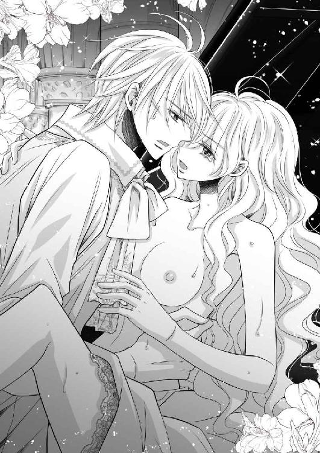
このまま一緒に溶けてしまえればいいのにと、うすぼんやりとした意識の中で思った。
そうすれば、国も王家も何もかも関係なくなり、結ばれることができるかもしれないのにと。
「お願いです......今は、今だけはっ......僕に、君の全てを──」
「──っ」
彼に身を任せることに決めた彼女は、再び快楽に溺れていった。
決して戻れない背徳の道に足を踏み入れた彼女はしかし、今はただひたすらに甘い夢の中にいる心地がしていたのであった。
第一楽章 奥手な王子
鍵盤に置かれた指先が、一音目を叩いた。
静かに響く旋律が流れ、ハープを模したような伴奏が続く。
聴いている側に語りかけるように、主音はときにためらいがちに、ときに少しだけ速く、ときに淡々と、優美な演奏が大聖堂内を満たした。
舞台の上でグランドピアノに向かう少女は大勢の観客が息を呑む様に気づくことなく、詩人フェルディナント・フライリヒラートの詩に乗せ、次々に音階を奏でていく。
海の向こうから伝えられた優美なる夜想曲。
フランツ・リスト作曲、『愛の夢 第三番』。
この美しくロマンチックな演奏に、誰もが胸をときめかせていた。
主張する旋律は、〝おお、愛しうる限り愛せ〟という言葉が示す通り、全身全霊であなたを愛するという強い意思が感じられる。
夢中で指を動かす彼女の名は、オデット・レ・ミュッセ。
一筋に想う愛を、ピアノを使って歌わなければならないのは、ひとえに今年十八歳になるこのサン・マロ国レミ家の第一王女が近々、隣国ナゼールの第一王子に嫁ぐからにほかならない。
音楽の都と謳われるミュジーク大陸は、みっつの王政国家によって統治され、ひとつの教会によって均衡が保たれている。
北のナゼール国、西のカンタン国、東のサン・マロ国、そして南のシェルブール教会──王家の婚姻は、始祖の血を守るために国家間で行われる習わしがあり、緩衝地帯にあたるシェルブール教会におわす教皇の前で、演奏を披露して初めて成立する。
そのため、中途半端な曲を教皇に聴かせるわけにはいかない。
あらかじめ互いの国にある大聖堂で、家族や関係者、作曲家や評論家などその道の識者に向けて演奏会を催し、助言や意見をいただき取り入れていくことで、完成形を作り上げるのだ。
オデットの故郷サン・マロ国内にあるディエップ大聖堂での演奏が今回、最初のそれにあたる。
ステンドグラスから射し込む光に照らされるオデットの長い髪が、音域を広げていくに従って蜂蜜のような光沢を持って波打ち、ヘーゼルの瞳は鍵盤を行き来するごとに物憂げに細められては長い睫毛が乳白色の肌に影を落とし続ける。
ふんわりとしたドレスの裾からのぞく小さな足が絶えずペダルを踏むため、そのたびに両肩からＶ字にカットされた胸元のリボンや、袖口と襟元にふんだんにあしらわれたレースは上下左右に振られていた。
ピアノの音色はこの上なく心惹かれるものではあるが、そんなオデット姫の美しさに目を奪われる者も多いのだろう。
観客の瞳は老若男女問わず、壇上へ向ける瞳をとろけさせていた。
可能な限りの愛であなたの心を捕らえ、あなたに喜びを与え、あなたに悲しみを与えてはいけない──終始こうした甘美なメロディが優しく奏でられることで、まるでオデットが会場のひとりひとりに語りかけているように錯覚し、聴く者を捕らえて放さない。
曲の盛り上がりに差しかかると、オデットの右手は強く和音を叩く。左手は流れるようなアルペジオを奏でた。
重厚な旋律が、荘厳な大聖堂全体を包み込む。
最高潮のあとには細かな音符が続き、やや高速に追われる音の数々が流れた。
そしていよいよラスト。ゆったりとした雰囲気に曲調が変わり、柔らかく丁寧に弾かれていく。
心地良い響きは最後まで衰えることなく、綺麗に締め括られた。
オデットが鍵盤からすっと手を離した瞬間、わっとした歓声と拍手が巻き起こる。
そこで初めて今自分がどこにいるのか気づいたかのように、オデットの双眸がまばたく。
視界を巡らせれば、一階の一般客席から階上廊の貴賓席に至るまでの皆が、惜しみないスタンディングオベーションをオデットに送っていた。
オデットは微笑み、ふうと息を吐いたのち優雅に立ち上がる。ドレスの裾をつまみ、膝を折ると、淑女らしい挨拶をする。
鳴りやまない歓声と拍手が、いつまでもオデットを讃え続ける。
そこに舞台袖から何者かが現れた。すると、喝采はより濃いものへと変わる。
オデットが気づいた時には、ひときわ豪奢なコートとベスト、そろいのキュロットをまとった青年がブーツの音を響かせて近づいてくるところであった。
「いい演奏だった、オデット」
親しげに話しかけてきた青年の名は、パトリック・ラ・ファイエット。ナゼール国の第一王子で、御年二十八歳。オデットの婚約者となる、ラファ家の長男であった。
本来であれば自国と教会での演奏会に出席すればいいところを、彼は長い道のりと時間を惜しむことなく、この日のためにサン・マロ国までわざわざ訪れていた。
そこまでオデットに執心しているという表れだろう。この婚姻は、パトリック自身が強硬に望んだことであったのだから。
「パトリック......来ていたのね。気づかなかったわ」
オデットは観客席からのざわめきに紛れて、そっと毒づいた。
「いつまで経っても未来の夫につれないな、お前は」
しかしパトリックは動じることなく、形のよい口の端を上げる。
すっと通った鼻筋、意思の強そうなアンバーの瞳を持つ均整の取れた顔は、間違いなくハンサムな部類に属する。星々が散る夜空を思わせるきらびやかな黒髪は、背が高くて筋肉質な体躯にぴったりと収まるよう後ろで括られていた。
「当たり前でしょう。長年、兄のように慕っていたのに」
つい表情を険しくするオデットに、パトリックは笑顔のままだ。ただその瞳は、舞台袖に戻るよう目線で促していた。
はっとして強張った顔に笑みを貼り付け直すと、オデットは手を振り観客の声援に応えつつ、パトリックに続いてカーテンで仕切られた薄暗い個室へと入っていく。
「人前で罵ってくれるな」
舞台上での紳士然たる態度はどこへやら、どかりと椅子に腰を下ろしたパトリックが尊大に足を組み、じろりとオデットを睨め付けた。
纏う雰囲気すら、がらりと変わったようである。
「だいたい、国家間で頻繁に交流を持つのは、将来の伴侶選びが加味されていることぐらい、お前も知っているだろう」
「でもパトリックは、兄姉のいなかった私を大切にしてくれたわ」
オデットも負けてはいない。腰に手を当てて、今にも怒り出さんばかりの形相だ。
ピアノを弾くと喜びのあまり別人になるオデットだったが、選択肢がないとはいえ、強引な今回の縁談には、実はまだ納得がいっていない。
彼女の言う通り、各国の王侯貴族が集う際、人見知りのオデットを構ってくれていたのは、年齢が比較的に近いラファ家の兄弟だった。ピアノが友達のような子供だったオデットは、年の離れた弟が生まれるまで、ラファ家の兄弟を本当の兄と弟のように接してきた。
その頃、カンタン国のド・シエンヌ家には子供がおらず、壮年の男女が急ぎ縁談をまとめられている最中だったため、次の婚姻はラファ家とレミ家だと必然的に決まっているようなものであったのだ。
ドシ家の子供は今、続々と生まれているので、おそらくオデットに子供が授かった場合、ドシ家に嫁ぐことになるのだろう。
正妻は多国間による王侯貴族同士だと決められているものの、近親婚を防ぐため、男性は何人か寵姫を迎えてもいいことになっている。オデットと弟のアランも、ラファ家の兄弟も、それぞれ母親が異なるのはそのためだ。
きっとパトリックだって形だけの正妃としてオデットをめとり、自分はこれまで通り、好きに様々な女性を受け入れ続けるに違いないのだ。だから、解せない。
「直系でなくとも、レ・ミュッセの苗字を持つ年頃の女性は、ほかにもいるじゃない」
なぜパトリックは、数々の美姫を目の当たりにしながらも、これまで婚姻に至らなかったのか。二十八歳で結婚というのは、王家の基準でなくともかなり遅い。
サン・マロ国としても大事な第一王女であるオデットは、年齢に見合うナゼール国の第二王子──パトリックの実弟と結婚させようと思っていたのだ。
王位を継承するパトリックの政務を手伝う弟の伴侶であれば、今後の負担も少なく、好きなピアノを続けさせられるだろうという両親の想いもあった。
それを漠然と感じていたオデットは、年を重ねるごとに、覚悟も一緒に上乗せしてきた。
王女として定められた運命は仕方がないとは思っていたし、何よりもピアノを弾ければそれだけでよかった。セドリック・ラ・ファイエットと結婚すれば、少なくとも子作りの義務も女王としての責務も発生しないのだから、願ったり叶ったりと言えた。
しかしつい先頃、唐突に舞い込んできたのが、パトリック・ラ・ファイエットからの結婚申込みだった。数々の浮き名は流せど、決して誰のものにもなることのなかった美丈夫が、ようやく重い腰を上げたと、大陸全土が驚喜したという。
ラファ家の国王夫妻も例には漏れず、息子の気が変わらないうちに、早々に儀礼を済ませてしまおうと、なんと通達から三日で最初の演奏会が催されることになった。
オデットの両親は、そんなムードを前に、断ることなどできなかった。本来ならパトリックの元に嫁いだ方がサン・マロ国の顔も立ち、二国間においてさらなる友好な関係が築ける。
しかし、少々個性的な娘を優先するためには、オデットの地位は高すぎた。
パトリックは組んだ長い足をぶらつかせながら、面白そうにオデットを見つめる。
「なぜ、俺の愛が伝わらない？」
あまりに独善的なパトリックの物言いに、オデットは思わず眉間にしわを刻む。
言葉だけの愛なんて大嘘だ。結婚を急かされ、ただ単に気を遣う必要のない手近な自分を選んだくせに。この男はいつもこうやって自分をからかってくる。
それが〝兄〟という立場であれば、ここまで頭にこなかったであろうが、こんな形で人生を決められて頭にこないわけがなかった。今回ばかりは、やりすぎである。
「勝手に進められてしまった結婚よ。愛なんて関係ないでしょう」
「ピアノでは、あれだけの愛を伝えていたのに、か？」
「っ......!!」
パトリックにふっと鼻で笑われ、オデットはぐっと押し黙った。
「音は嘘を吐けない」
反論はできない。パトリックの言い分が、あながち間違いではなかったからだ。
けれどオデットは、今日の演奏では決してパトリックへの愛を語っていたのではない。作曲者であるリストが音に込めた愛を、想像して弾いていただけだ。
それは無論のこと、耳聡いパトリックにも伝わっていた。
「だが、あの程度の演奏ではベランジェ教皇どころか、うちの父や母も納得はしないぞ」
喝采を送られたパフォーマンスは、婚約披露の演奏としては落第点であった。
「......わかってるわ」
オデットは自然、震える両の拳を握り締めた。
本国ではピアノの名手と誉れ高いオデットは、物心付いた時には既に、あまたの曲を弾きこなしていた。
初めて話した言葉はドレミファソラシド、ピアノの鍵盤を支えに立ち上がったと言われているほど、彼女とピアノは生まれてからずっと一緒だった。
だからこそ、どんな演奏も乞われるがまま、自由自在に弾いてみせられる。
民衆から識者まで納得させる腕前はしかし、その血に音楽と深い関わりを宿す王侯貴族には、心のうちを見抜かれてしまう。
その三国をつかさどるシェルブール教会の教皇に至っては、彼は大陸全土の女神ミューズの声が聴けるとも言われている。
したくもない結婚、けれどもしなければならない結婚──そのためには、ナゼール国の国王夫妻と教皇ベランジェ十二世に、パトリックへの愛を音で正確に伝えなければならない。
その点から今回の音色ではダメなのだと、パトリックは評している。
幸いにして今日の演奏会は、最初のサン・マロ国。オデットの両親への演奏だったので、彼らには本音が伝わってしまっていただろうが、さして大きな問題になることはない。
「素直なお前のことだ。こうなると予想していたからこそ、わざわざ来てやったのだ」
パトリックは腰を上げると、たたずむオデットの前に立つ。アンバーの瞳を妖しく細め、頭ひとつぶん低いオデットの豊かな髪を一房すくい取ると、そのまま愛おしげに口づけを落とす。
「やめて......！」
オデットは驚いて身を引いた。壁際に逃げ、威嚇する猫のようにふーふーと唸る。
いくら未来の夫とはいえ、まだ正式な婚姻の儀礼も済ませていないのに、触れるなど信じられない。
その姿を見て残念そうに肩をすくませるパトリックだったが、これ以上オデットを刺激しようとはしなかった。何事もなかったように、通路に続くドアに向かう。
「だから今日、お前の講師を連れてきたのだ」
「講師......？」
呆然とつぶやくオデットに、パトリックがにいと口角を上げる。
「おい、もう入ってきていいぞ」
ドアの向こうに話しかけるパトリック。
どうやら別の人間が、ずっと外にいたらしい。
先ほどまでのやりとりが筒抜けだったと思うと、オデットの顔はみるみるうちに羞恥に染まっていく。
しかし次の瞬間には、喜びに顔を輝かせることになった。
「セドリック!!」
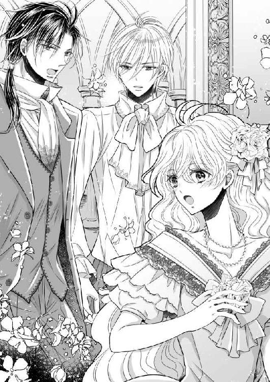
呼ばれるがままドアを開いて、部屋に足を踏み入れてきたのは、オデットの言う通り、ナゼール国の第二王子──セドリック・ラ・ファイエットであったのだ。
「兄さん、オデットを動揺させるようなことは、やめてください」
セドリックは静かな怒りを湛えながら、異母兄弟であるパトリックを睨め付ける。
シンプルなシャツとズボン姿の彼は一見して王族らしくはない、どこかの学者のような出で立ちだ。しかし生地は上等なものが使用され、兄には及ばずともすらりと伸びた身長は、中肉中背ながらも引き締まった体付きであることをうかがわせる。
弓なりの眉に少し厚めの唇は中性的で、髪にしても雄々しさを醸し出すパトリックの長い黒髪に対し、白に近い短めのプラチナ。美しいと形容されるべき姿であり、高潔さを思わせるいで立ちに目を惹かれるものだが、最も印象的なのは彼の瞳であった。
右がブルー、左がグリーンと、左右色が違う──オッドアイの持ち主なのである。
そんなセドリックの普段は穏やかな眼差しも、今は冷たく陰っている。
「彼女は僕の生徒です。婚約が成立するまでは、心を乱すような所作はお控えください。演奏に支障が出ますので」
「セドリックが講師......!?」
セドリックが自分をかばってくれたことよりも、そちらに驚きを隠せないオデット。
パトリックも弟の言動は無視して、呆気に取られるオデットに向き直った。
「ああ。大陸全土どこを捜しても、お前よりピアノがうまいやつなど、そうはいない。セドリックはお前にピアノを教えた最初の講師ということもあるのだし、問題あるまい？」
彼の言う通り、オデットにピアノを教えたのはセドリックであった。
セドリックは現在二十歳を超えたところであり、当時はまだ二歳。オデット以上の才能を見せ、瞬く間に開花させたピアノの天才児と謳われる、紛うことなき音楽の申し子だ。
まだ赤子だった彼女を隣に寝かせ、フレデリック・ショパン作曲『子犬のワルツ』を、子守歌代わりに弾いて聴かせていたことは有名な話である。
オデットはその音色に感銘を受け、自らもピアノに触れるようになったのだ。
「一カ月やる」
息を呑むオデットを尻目に、パトリックはややきつい口調へと変わる。
「セドリック。言った通り、一カ月後のナゼールでの演奏会までに、オデットのピアノの矯正をしてくれ。それまでは、サン・マロに滞在することを許可する」
セドリックは従順に頭を垂れた。
いかにも独善的な命令であるが、兄とはいえ、次期国王である彼に逆らうことは、セドリックとて容易にできることではない。
それをわかっていて、彼はセドリックにこの役目を与えたのであろう。
そこまでしてパトリックがオデットをめとりたい理由が、やはり解せなかったが、次期ナゼール王妃となる以上、オデットも従うしかない。
「お前の音色が俺への愛を奏でることを、楽しみに待っている」
不敵に笑うパトリックに、オデットは何も言い返すことができなかった。
それはつまるところ、これからの一カ月、セドリックからパトリックへの想いをすり込まされ続け、セドリックの類いまれな技巧を用いて、心に伴わず、パトリックへの愛を奏でるピアノ技術を身に付けさせられる──ということを意味していたからだ。
考えるだけで憂鬱になり、オデットはそっと一カ月間限定の講師をうかがった。
するとセドリックもこちらを見つめており、覚えずふたりの視線が交差した。
が、セドリックはすぐに、すっと顔を背けてしまう。
オデットもまた顔をうつむけた。
オデットが傷ついたのは、セドリックもまた憂鬱そうに表情を曇らせていたことにある。
先ほどの演奏に呆れられてしまったのか、そんな未熟な自分の講師になるのが嫌なのか。ピアノを愛しているオデットは、同じくピアノを愛するセドリックにそう思われているのではないだろうかと、居たたまれない気持ちになった。
「ナゼールでの演奏会を成功させたら、すぐにシェルブールに向かう」
「っ......そ、そんなに早く？」
オデットはすがるような瞳で兄弟を交互に見つめたが、どちらも助けてはくれなかった。
「当たり前だ。そもそも、なんの問題もなければこんな儀礼など、とっとと終わらせて結婚式を挙げるところだ」
パトリックにそう苛立たしげに告げられ、オデットは沈黙した。
自分の技術の未熟さを恥じたのではない。逆にあと一カ月の猶予を与えられ、安堵していたためである。
「大丈夫ですよ、オデット」
ここで初めて、セドリックはオデットに口を開いた。
「焦らず一緒に頑張りましょう？ 久しぶりにふたりで演奏ができると聞いて、僕はこの日を楽しみにしてきたのです」
セドリックは穏やかな瞳をオデットに向け、笑みを湛える。
オデットは、きゅっと息苦しくなるのを感じた。
セドリックは純粋に、自分とピアノを弾く時間を大切にしてくれようとしている。その想いに、なぜか胸が締め付けられた。
国家間の交流会で会うたびに、ふたりはピアノを演奏して皆を楽しませてきた。
オデットとセドリックの連弾は好評で、オデットは彼と共にピアノを弾くことが何よりも好きだった。もちろん、彼の演奏を聴くことも。
だからオデットはセドリックに会える日を待ち望んでいたし、短い時間で別れることが寂しくてたまらなかった。
またあのピアノが聴ける、しかも今度は一カ月間もずっと一緒にいられる──そう考えると、鬱々とした感情が霧散していく気がした。
そんなオデットの心境の変化を読み取ったのだろうか、パトリックが不機嫌そうに弟に釘を刺した。
「オデットとふたりきりだからといって、不謹慎なことはするなよ」
本物の紳士なセドリックがそのような人間であるはずがないのにと、オデットの方がむっとしてしまう。
紳士を演じることがうまいパトリックとは違い、礼儀をわきまえて相手を尊重するセドリックは確かに本物の紳士であったが、何事にも奥手だとも言える。
オデットがそうであるように、セドリックもまた、ピアノを通して想いを伝える方が簡単なのだ。
「兄さんと一緒にしないで欲しいですね」
だからそう切り返したのであろうセドリックであったが、なぜかそこに、微かに自嘲の色が浮かんでいることにオデットは気づいた。
その理由を問うてみようかと口を開きかけた時、
「ではオデット、俺は政務があるから国へ帰るが、いい子にしているのだぞ」
パトリックに意地悪く告げられる。
「子供扱いしないで」
社交界デビューを果たしているオデットは、淑女としての尊厳を傷つけられたことに遠慮なく噛み付いたが、身体はセドリックの背後に隠れていた。
兄として慕っていた頃は綺麗だとしか思わなかったパトリックのアンバーの瞳は今や、獲物を狙う狼と同じに見えて仕方がなかった。
セドリックはそんなオデットの様子を苦しげに眺めており、パトリックが帰国の途につくまでずっと、オデットを守るように、傍に付いていてくれたのであった。
一カ月という限られた時間のため、ピアノの猛特訓は、翌日から行われることになった。
サン・マロ国の国王夫妻は、先日の娘の演奏を聴いて心を痛めていた。そのため、指導係となったセドリックの訪問を快く受け入れ、滞在用の客間を一部屋与えた。
そして先日の演奏会で使われた、国内でいちばん設備の整ったディエップ大聖堂を練習場所として提供された。
この大聖堂は下から、アーケード、階上廊、ステンドグラスがはめられた高窓と、三層構造となっている。堂内は白亜の支柱とリノリウムの床、そして歴代サン・マロ国の王の彫像が飾られ、絶えず厳かな雰囲気を醸し出している。
採光のために高窓を下層まで大きく伸ばし、中間層が取り除かれた理由として、ひとりでも多くの人々に音楽の素晴らしさを伝えたいという、建築家の想いが込められていることがうかがえる。事実、このディエップ大聖堂内には九千人が収容可能で、階上廊には千五百人も上がることができた。
周囲が広大な森林公園に囲まれているためか、シェルブール教会が管理するこの大聖堂では演奏会を控えた場合、信徒たちはそれまで集まらない性質にあることから、弾いていても誰にも迷惑にならない。無論のこと、全ての門では城の衛兵が警備しているので、安全上の問題も起こり得ないとされている。
むしろ城内のオデット専用ピアノの方が、いくら防音効果に優れた室内にあるとはいえ、大勢の者たちが詰めているからこそ、どうしても音が目立ってしまうのだ。
ふたりは連日、朝は大広間で食事を摂ってから、すぐに馬車で大聖堂に向かい、夕食が振る舞われる時間になるまで、こもりきりで練習に励むという生活を送っていた。
オデット付きの侍女、クロエ・ボドリヤールが昼食時に食事を運んでくる以外、誰も入ることのない大聖堂の中では、絶えずピアノの音色が響き続けている。
「ここは、左手と右手を交互に使わなければいけない難所です。アルペジオをもっと滑らかに」
「はい、先生」
セドリックは誰に対しても敬語で話すことから、いつもは気軽に口を利いていたオデットもまた、練習中は彼を〝先生〟と呼び、助言に真摯に耳を傾けていた。
また、パトリックについてあれこれ聞かされると思っていたオデットは、練習が始まって拍子抜けしていた。
セドリックはパトリックについて触れることなく、オデットに足らない部分を埋めようと、普通にピアノを教えてくれたからだ。
あらゆる〝先生〟を自らの演奏で屈服させてきたオデットにとって、自分より才能も技術もある人間から指導を受けることは初めてで、新鮮でもあった。
セドリックの指摘はいつも的確で、オデットは自分の癖を矯正することに夢中になり、より高度な演奏ができるよう注力し続けた。
「この『愛の夢』の第三番は、リストがフライリヒラートの詩をピアノ独奏にして、曲を付けたことは知っていますね？」
「ええ、もちろん」
「もともとは、第一番から第三番までがひとつになった歌曲だったのです」
「そうなの？」
「はい。第一番と第二番は、ルートヴィヒ・ウーラントの詩である『至高の愛』、『私は死んだ』に、それぞれ曲を付けたものです」
「第一番も第二番も弾けるけれど、第三番がいちばん有名だから、あまり考えなかったわ。今回の演目も、第三番を指定されたから──」
「そうでしょうね。だからオデットの演奏は、物語の断片に聞こえるのです」
婚約の演目だったことを思い出し、言葉を失いかけたオデットだったが、セドリックはまるで気にした様子もなく淡々と話を進めていく。
そんな音楽を語るセドリックの姿はとても精悍で、オデットはいつまでも飽きることなく彼の横顔を眺めていた。
「歌曲として作曲されたこれら三つの曲を、リストがピアノ独奏版に編曲しました。ショパンのノクターンに似たような性質を持つことから、『愛の夢』は三曲をまとめた、三つのノクターンだと言われています」
「ノクターン......夜想曲、ね？」
ノクターンとは主としてピアノ用語に使われ、夜の情緒を表す叙情的な楽曲を指す。
「その通り。第三番のイメージが強いので、甘美な恋愛の曲と思われがちですが、その歌詞に着目すれば、本来は宗教的な愛を描いた作品だということがわかります」
「じゃあ、本当なら今回の演目にふさわしくはないの？」
期待するようなオデットの眼差しに、セドリックは困ったように苦笑した。
「そういうわけでもありません。『至高の愛』の詩は、地上の喜びを自ら捨て去り、殉教者になるという意味です。そして『私は死んだ』は一見、物騒なタイトルですが、愛により死んだということを表しています」
「愛で死んでしまうの？」
まだ愛を知らないオデットが恐る恐る問うも、セドリックは軽快に詩を諳んじた。
「〝私は愛の喜びの目の前で死にました。彼女の腕の中に葬られ、彼女の口づけで目覚め、彼女の瞳の中に天を見たのです〟」
「それは──」
言葉にはならなかったが、とても素敵な詩だと思った。
それが本物の愛ということならば、第三番しか知らなかったオデットは、表面的な愛しかなぞっていなかったことになる。
「第三番にも、本来の意味があるの？」
ついそんなことを聞いたオデットに、セドリックはやや間を空けてから答えた。
「......詩の解釈は人によりますが、僕はむしろ、恋愛ではなく人間愛を表現したものだと思っています」
「人間愛？」
「〝あなたが墓の前で嘆き悲しむ時はくるのだから、愛しうる限り愛しなさい。自分に心を開いてくれる者がいるのならば、その者のために尽くして、どんな時も悲しませてはならない〟」
「〝おお、愛しうる限り愛せ！ その時はくる、その時はくるのだ。あなたが墓の前で嘆き悲しむ、その時が──〟」
セドリックの詩の朗読に、オデットも第三番の主題を合わせた。
そうしてふたりで顔を合わせ、作詞家のあまりの情熱に、ぷっと吹き出してしまう。
「確かに、異性でなくても当てはまるわ」
「ええ、愛する人も、お墓の前で嘆き悲しむことも......大切な者であれば、誰でも同じでしょうから」
「でもそう考えると、まだ第二番の方が演目にはふさわしいわね」
「突き詰めるとそうかもしれませんが、おそらく兄さんは、〝愛しうる限り愛せ〟と、オデットに言わせたいのだと思います」
「......本当、変態よね」
辛辣に言い放つと、セドリックはわずかに顔をほころばせた。
「まずは、第三番を確実に弾きこなせるようになりましょう？」
「はい、先生！」
オデットは再び鍵盤に手を乗せた。
ゆっくりと指をさばき、旋律を奏でていく。
「いいえ、ここはこう──」
右隣に座るセドリックの顔が、息づかいを感じるぐらいまで近づいた。
思わずどきりと心臓を跳ねさせるオデットに気づくはずもなく、セドリックは右手で楽譜の五線をなぞり、左手で該当小節を弾いてみせる。
「細かく上昇と下降をする必要がありますが、それほど早く弾かなくても大丈夫です」
「こう？」
オデットがセドリックの真似をして指を動かす。
「うん、そんな感じですね。このあとが盛り上がりになりますから、ここが導入部だと考えましょう。だからもう少し、優しくしてもいいかもしれません」
セドリックの説明はわかりやすくて、たとえ完璧でなくとも、彼は必ず褒めてくれた。
「先ほどフラットを見落としていたので、次は注意してみてください」
「はい、先生」
素直にうなずいたものの、いつもはこんなミスなどしない。
レッスン中、その手にそっとセドリックの指先が触れるたびに集中力が途切れてしまう。それはきっと、久しぶりに誰かに師事するからだと、オデットは己に言い聞かせていた。
唐突にセドリックが、こらえきれなくなったかのようにクックと笑い出す。
「何？」
怪訝と見上げると、セドリックは顔の前で手を振って謝罪を示した。
「ごめんなさい、オデット。でも君は、いつからピアノを教わるのに、そんなに従順になってしまったのかと、ついおかしくなってしまったのです」
「そ、そんなに変かしら......」
特別なことをしていたつもりはないのにと、オデットの頬が、かあっと熱くなっていく。
セドリックはそんな彼女の頭にそっと手を乗せ、蜂蜜色の髪を優しくなでた。
「いいえ。ただ君は、小さな頃からピアノのことになると、むきになってばかりで、僕の指摘になど耳を貸そうとしなかったではありませんか。大きくなったのだなあと、感慨深くなったのです」
「──そうだったわね」
小さなオデットと、同じぐらい小さかったセドリックは、各国王家主催の交流会にて、毎度のように争ってピアノを取り合っていた。
王侯貴族は皆、何かしらの楽器をたしなんでおり、ピアノも例にもれず人気が高かったため、誰もがピアノの曲目を選んでいたものだったが、このふたりの天使の巧みな指づかいに敵う者はひとりもいなかった。
その頃から音楽の申し子と呼ばれていたセドリックは、年上なこともあり、いつもオデットよりうまく弾きこなしていた。そのため、小さなオデットによくアドバイスしてあげていたのだが、オデットは言えば言うほど、負けじと自らのスタイルを追求する一方だったのだ。
そうして最後には癇癪を起こしてしまうオデットを前に、セドリックが試行錯誤した結果、彼女の頭をなでてあげるというところに落ち着いたのである。
そんなふたりの様子を微笑ましく眺めていたのが、パトリックであった。
たまに演奏に加わることはあれど、自分が敵わない分野を伸ばすことを嫌う彼は、すぐに音楽を聴く側に回ってしまい、やがて政務の才能を開花させ始めた。今ではナゼール国王でさえ重要な案件では特に、彼の意見を仰ぐほどだと言われている。
オデットは懐かしい幼少の頃を思い出し、恥ずかしくなって身を縮こませるも、もっとなでて欲しくて、子供扱いしないでという台詞は結局、声にならなかった。セドリックはあの時からずっと、オデットをなだめる際には、頭を優しくなでてくれる。
「でも、二歳しか変わらないじゃない」
十も離れているパトリックとは違い、セドリックとは同級生といっても差し支えない。だから彼がなぜ自分の成長をそんなふうに感じるのか、オデットには不思議でならなかった。
「君はいつまでも僕にとって、〝小さなオデット〟でした」
セドリックの顔がふっと陰る。
「だから結婚してしまうことが今でも信じられません」
「セドリック......？」
強張ったセドリックの顔をオデットが心配そうにのぞき込むと、セドリックは我に返ったかのように、不自然な笑みを貼り付ける。
「続きを、オデット」
「え？ あ......はい！」
オデットは慌てて譜面に目を戻す。
ピアノへと心を切り替えたオデットは、その横顔をセドリックに見つめられていることなど、つゆほども考えることはなかった──。
太陽が真上を通る頃になると、この大聖堂は、ステンドグラスの色彩豊かな光に満たされ、堂内を明るく照らし出す。
やがて控えめに打たれたノックが昼食の時間だと告げた。
「どうぞ」
鍵盤を叩く手を止め、オデットは控え室の通路に続く舞台袖のドアに向かって言う。
大聖堂は音響効果に優れているため、大声を出さなくとも声が遠くまで届くのだ。
「失礼します、姫様」
侍女のクロエが器用にドアを開き、しずしずとワゴンを押しながら入ってくる。
日課の昼食を運んできてくれたのだ。
サン・マロ国の紋章が入ったお仕着せのエプロンドレスをまとった小柄の彼女は、黒目がちの瞳をうれしそうに細めながら、静かに手際良く昼食の準備を進めていく。
「なんでいつも笑っているの、クロエ？」
さっそく焼きたてのクロワッサンに手を伸ばしていたオデットが、不思議そうに侍女に尋ねた。
クロエがすかさず、オデットの前にジャムの瓶を用意する。
「姫様が毎日、いきいきとなさってくれているからです」
そうしてなんてことのないように、手を止めることなくクロエは答えた。
クロエはオデットと同い年だがよくできた娘で、姉妹のように育ってきたにも関わらず、決して世間話や噂話などをして主の時間を取らせることはしない。
仕事に真面目で、両親に捨てられて行き場のなかった自身を育て、雇ってくれたレ・ミュッセ家に、心からの忠誠を誓っているのだ。アランが生まれるまでは、忙しい両親に代わり、一人娘だったオデットの寂しさをどれだけ紛らわせてくれたことか。
ゆえにクロエは、誰よりも信頼できる家族のような存在であった。
だから今日、初めてオデットは前々から気になっていたその理由を問うことになった。練習環境にも慣れ、心に余裕が出てきた証拠だろう。
「本当？ ピアノを弾く時はいつだって、いきいきしていたと思うけれど......」
クロエの言葉に嘘がないことはわかっているため、最後は尻すぼみになってしまう。
熱いポットから丁寧に二客のカップに紅茶を注ぎながら、クロエが微笑む。
「そうですね、セドリック殿下と競われていた頃は特に」
急に話を振られて、セドリックは口に含んでいた紅茶でむせそうになった。
「えっ......ぼ、僕ですか？」
「はい。オデット姫様は、セドリック殿下だけには負けたくないと、最近のように毎日ピアノに向かっておられたのです」
クロエの言う通り、オデットは交流会でセドリックに会うたびに、己の未熟さを痛感させられてきたので、必死にピアノにかじり付いていたのである。
無論のこと、そこには王侯貴族が音楽をたしなむ本来の意味である、〝婚姻儀礼のための演奏〟というものが、念頭にあるはずがなかった。ただ、セドリックに勝ちたかったのだ。
「パトリック殿下との婚約が通達され、演目が伝えられてからも、姫様は一度もピアノに触れることはございませんでした」
「クロエっ......！」
オデットが思わず侍女をたしなめると、言いすぎたことに気づいたクロエが、はっと口をつぐむ。そして「申し訳ございませんでした」と、深く頭を下げて謝罪の意を表した。
「......それは、本当ですか？」
セドリックは聞き逃すつもりはないらしい。訝しげに眉根を寄せている。
オデットが諦めたように嘆息した。
「ええ、本当よ」
しかしこれが失態ではないことなど、事前に打ち合わせしたわけでもないのに、とうのオデットとクロエのふたりだけがわかり合っている。
オデットはセドリックに、与えられたこの時間が、どれだけ尊いか伝えたかったのだ。
ピアノの音以外では素直になれないオデットだから、クロエの言葉がなければ、この一カ月はただ、パトリックのためにピアノを弾くことになっていただろう。
「私はずっと、セドリック......あなたと結婚するものとばかり思っていたから──」
セドリックが息を呑む気配を感じた。が、勢いをなくしてしまう前にと、オデットは続ける。
「パトリックからの申込み状が届いた時、色々なことが頭をぐるぐるとよぎって、とても彼のためにピアノを弾く気になどなれなかったの」
クロエの手が完全に止まってしまっていることに、本人でさえ気づくことはない。
見つめ返すようにセドリックへと目線を流すオデットは、胸を満たす想いを吐露した。
「ねえ、セドリック。最後にあなたと、こうしてピアノを弾くだけの時間をもらえることになって、私は本当に喜んでいるのよ？」
微笑を失敗して苦笑するオデットに、セドリックはそっと手を伸ばした。
様々な楽器で鍛えられた彼の指先が頬に触れ、オデットは睫毛を震わせた。
鍵盤の上を行き来するセドリックの手を見るたびに何度、己が鍵盤だったらと願っただろう。
それは単純に、彼の演奏をリスペクトしていたからなのか、それとも──。
「──ジャムが、付いていますよ」
セドリックは無理やり絞り出したように、かすれた声でそう言うと、自身の指の腹でオデットの口元を拭った。
しかしそれだけで、あっという間に手を離してしまう。
「あ、ありがとう」
かあっと熱を上げていく頬と、なぜか込み上げてくる涙。セドリックには絶対に見せてはいけない気がして、オデットは不自然に顔を背けた。
気を遣ったクロエがそっと差し出したナプキンを、急いで目の端にあてる。
クロエが去ったあとの午後の練習は、これまででいちばん身が入らなかったが、それをセドリックが注意することは結局なかった。
どうしてここまで感情が高ぶってしまうのか、オデットにはわからない。
ただ、今だけは、ひとりでピアノを弾きたいと願ってやまなかった。
その夜、城の自室に戻ったオデットはベッドの上で寝返りを繰り返していた。
始めの頃は毎日の厳しい練習に疲れきって、すぐに深い眠りに落ちていたオデットだったが、このところは目が冴えて、なかなか寝つけないことが多い。
特に今日は、予てより憧れを抱いていたセドリックの指先が頬に触れた──そう思うと、ますます興奮して寝つけなかった。
「ピアノ......弾こうかな」
後半の明らかな練習不足を痛感していたオデットは、ネグリジェの上にナイトガウンを羽織ると、ベッドから起き上がった。
セドリックはあくまで講師なのに、なぜか集中できなかった。その理由を考えることを先延ばしにしたいという想いも大きかった。
オデットの私室は、レンガ造りの暖炉に革張りのソファ、猫足の丸テーブルといくつかの調度品というシンプルなもので、彼女専用のアップライトのピアノが据え置かれているのが特徴だ。
防音効果に優れたカーテンと窓と壁、毛足の長いマットが敷かれた特別なこの部屋は、静かに音を奏でることが可能になっている。多少の音漏れはあるが、オデットのピアノは、城の者であれば生活音の一部でもあったので、誰も気にすることはない。
大聖堂のグランドピアノを弾く毎日になってからも、クロエが欠かさず掃除をしておいてくれたので、オデットのピアノは、この日も変わらず綺麗に黒光りしており、主を今かと待ち受けているように思えた。調律も無論のこと、定期的に行われている。
オデットは椅子に腰かけると、さっそく腕を上げ、指慣らしに両手を滑らせていった。
音の質や音量が均質になるように気をつけながら、全調で、ハノンの最後の方のスケールとアルペジオを繰り返す。
どんどん速さを増していき、それを疲れるまで続けようとしていた。
基礎鍛錬は体力を消耗するため、ぐっすり眠るためにはちょうどいい。
そんなことを考えながら無心に指を動かしていると、ふいにノックの音が曲に混ざった。
「オデット、大丈夫ですか？」
セドリックの声がかかる。
元々この城の住人でない彼は、突然聞こえるようになったピアノに驚き、オデットを案じて様子を見にきてくれたのであろう。
練習を始めてから半月になるのに、このような事態が初めてだったからに違いない。
「セドリック......！」
オデットは慌てて衣服と髪の乱れを整えると、急いでドアまで駆けていった。
夜中に男性と密会するという、淑女にあるまじきシチュエーションにも関わらず、オデットの心はにわかに浮き立ってしまう。
「こんな遅くに申し訳ないです」
開いたドアの先から、心配そうなセドリックの顔がのぞく。
パジャマの上にガウンをまとっただけの相変わらず簡素な格好で、手には残り少ない燭台を持っている。未だ慣れない城内を、音だけを頼りに歩いてきたに違いない。
「がむしゃらな音が続いていたので、居ても立ってもいられず......つい、訪ねてきてしまいました。眠れないのですか？」
がむしゃらという言葉に、ふっと笑みがこぼれる。
「そんなふうに聞こえてしまった？」
「ええ、何か思い悩んでいる音でした」
「............」
〝音は嘘を吐けない〟と言ったパトリックが、否応なしに思い出される。
オデットは懸命に、不遜な男の顔を頭から追い出しながら、セドリックの腕をつかんで引いた。
「なら、入って？ 今夜は自由にピアノを弾きましょう！」
「え!? さ、さすがに、それは──」
まずい、と言いかけたセドリックに構うことなく、オデットはなかば強引に部屋に招き入れた。
パトリックを忘れるために、どうしてもセドリックの音が聞きたかったのだ。
ドアを閉めた途端、防音仕様の室内は、止めどない静寂に包まれた。
窓辺で主の帰りを待つピアノだけが、今か今かとざわめきだっているように見える。
月明かりの眩しい夜だったから、各所の燭台に火は灯していない。
乱れたままの天蓋付きのベッドを前に、オデットはひどく動揺していた。
よく考えたら、真夜中になんてことをしてしまったのだろうと、己の行動に唖然となる。羞恥と戸惑いから硬直するオデットの横を、すっとセドリックが通り越していく。
その姿に、あまりに不作法な振る舞いに、呆れられたのかもしれないと、オデットは思わずぎゅっと目を閉じてうつむいてしまう。
しかし。
「懐かしいですね。このピアノ......よく一緒に弾いたものです」
はっと顔を上げると、セドリックが愛おしそうにピアノをなでていた。
瞬間、オデットの中で何か温かい感情が弾ける。
子供の頃のような気持ちになって、自分もまたピアノの元へと早足に向かう。
「そうでしょう？ あれからはずっと、この部屋にあるのよ」
オデットはセドリックに寄り添い、頑張ってきた功績を見せるように、多くの楽譜を広げながら思い出を語った。
この古くも格式高いピアノは元々、オデットの父のものであった。
現王もまたピアノを得意としており、交流会の時は必ずピアノを弾いていたので、使い勝手のよい広間に置かれていた。その音色に惹かれて嫁いできたのが、当時はカンタン国ド・シエンヌ家の王女であったオデットの母だったのである。
オデットが社交界デビューを果たしてからはいずれ来る婚礼の儀に向け、いつでも自由に使えるよう、現在の部屋が造られるに至っていた。
「ずいぶんたくさんの曲を弾いてきたのですね」
セドリックが感心するように、楽譜のひとつひとつを手でなぞっていく。
「これも......そしてこれも、僕と同じものですか」
面白そうにクックと笑い出したセドリックに、オデットは真っ赤になって反論した。
「ま、真似をしたわけではないのよ？ ただ、効率的に練習するには──」
「いいんですよ。うれしいですから」
「え......」
そう言葉を被せられ、オデットは驚いてセドリックをじっと見上げた。
セドリックは左右、色の異なる青緑の瞳を細め、オデットのヘーゼルの双眸を見返してくる。
月光に照らされた、セドリックの中性的に整った顔が、ひどく妖艶に思えた。
とくん、とくんと心臓が高鳴り、オデットは息が苦しくなる。
何か言わなくては──そんな沈黙を破ったのは、ピアノの椅子が引かれる音だった。
「せっかくだから、何か弾いてあげましょう」
「本当っ!?」
ぱっと顔を輝かせ、オデットはためらいもなく、いそいそとセドリックの隣に座る。
セドリックはそんなオデットを微笑ましげに見やると、鍵盤に手を乗せた。
前奏を伴わない、甘美な曲調の旋律が流れていく。
「あ......」
知りすぎたその曲に、オデットはつい声を漏らしてしまう。
セドリックは構わずに、両手を器用に使い分け、指を動かし続ける。
それはオデットが目下のところ練習中である『愛の夢 第三番』だった。
いきなり始まる主題は、ハープのようになめらかで、まるでバリトン歌手が主旋律を歌っているように力強い。
しかしながらも伴奏は、その主旋律をまたぎ、低音域と高音域に広がっていく。
セドリックの手は巧みな指さばきを披露して、役割分担が明確でない複雑な演奏を、これでもかと奏でていた。
豊かな装飾に彩られた曲の頂点に差しかかり、にわかにロマンチックな雰囲気が漂い始める。
ふわっと、世界が開けた心地がする。
オデットはノクターンが示す夜を想う曲という意味がわかったような気がした。
この曲は、夜に弾いてこそ真価が発揮されるのだ。
表面だけの単純な愛などではない誰もが描く夢の中に浮かぶ愛──それはきっと、第一番から第三番までに渡って、聴く人により、様々な形があると歌っているのだろう。
セドリックが弾く第三番は、ただ単に強いだけではなく、ひどく一途な愛に思えた。
こんな音を出す人に愛されたい──オデットの胸は自然、そんな想いで熱くなった。
そしてセドリックが帰ったら、夜想曲についてもっと勉強しよう、そう考えていた。
「これが僕の、『愛の夢』です」
最後の旋律の余韻を残しながら、セドリックがはにかんで言った。
オデットは息つく間もなく聴き入っていたので、大仰な呼吸を繰り返した。
「とてもすごかったわ......これが本物の『愛の夢』なのね」
うれしそうに微笑むセドリックはしかし、ゆるく首を横に振った。
「いいえ。これはあくまで、〝僕の〟『愛の夢』です。オデットの『愛の夢』はまだ途上の段階にあるだけで、きっと完成します。そしたら聴衆は、今のオデットと同じように思ってくれるでしょう」
「そうかしら？」
「そうですよ」
「............」
うろんげに聞き返すも、本人にそうだと断言されてしまえば何も言えない。
けれどオデットは、セドリックのように完璧な演奏ができるとは、やはり思えなかった。
そこでふいに妙案がひらめき、オデットは考える間もなく口に出した。
「ねえ、じゃあこれからは、夜も練習を見てくれない？」
「はい？」
セドリックは信じられない言葉を耳にしたかのように、大きく目を見開いた。
オデットは構うことなく提案していく。
「だから、『愛の夢』はノクターンなのでしょう？ 夜想曲！」
「はあ」
「それを極めるには、今日みたいに夜に練習する方がいいに決まっているわ」
「ですが、それは......」
今日みたいに、ふたりきりで夜に密会するということだ。
偶然に偶然が重なった今宵とは別に、年頃の男女が互いに納得の上で会うという、その意味とは──。
「ああ、心配はしないで？ 午前中の練習をやめればいいだけよ」
その心配ではないと、奥手ではないパトリックであれば、きっとそう言ったに違いない。
複雑な顔をするセドリックに気づかず、オデットは嬉々として話を続けた。
「大丈夫、クロエならうまくやってくれるわ！」
ピアノに集中できるよう、側仕えには侍女のクロエしか置いていない。
裏を返せば、それが許されるほど、国王夫妻がセドリックを信用しているということでもあった。
クロエは普段、昼食を運ぶ役目のみならず、朝夕における大聖堂の戸締まりや燭台の点検などを含め、鍵の管理もしている。
夜の練習を実現させるには、クロエに頼むだけでじゅうぶんだった。
「大丈夫、お父様とお母様には内緒にしていればいいわ。クロエは口が硬いから、絶対にばれることもないもの」
トントン拍子に進められる話に、セドリックはまごつくだけで、まったく付いていけないらしい。
しかも元来、非常に頑固な性格の持ち主であるオデットを説得するのは、もはや不可能な領域にきてしまっていた。
「じゃあ、それで決まりね？」
セドリックの答えを待たずして、オデットは隣の書棚から違う楽譜を持ち出した。
「今日は朝に練習していたけれど、もっと続けましょう」
夜がさらに更けているというのに、オデットの目はらんらんと輝いていた。ピアノを弾いた疲れで眠ろうとしていたことなど、もう綺麗さっぱり忘れているようだ。
「でもここは大聖堂ではないから、セドリックが弾く番ね！」
無邪気にぺろっと舌を出し、セドリックにもっと弾いてくれとせがむオデット。
セドリックは大きく嘆息しながらも、再び鍵盤に手を乗せてくれたのだった。
翌朝、心地良い眠りを妨げたのは、珍しく無遠慮なクロエのノックだった。
「姫様、入りますからね」
そんなふうに言われることも初めてだったので、オデットは寝ぼけ眼をこすりつつ、ベッドに身を横たえたまま批難の声を上げようとして──ふと、己が温かい何かに捕らえられていることに気づいた。
すっと視線を移動させて、ぎょっと目をみはる。
「せ、セドリックっ......!?」
なぜかオデットのすぐ隣で、セドリックがすうすうと寝息を立てているのだ。しかも彼の腕は、オデットの腰にがっちりと回されている。
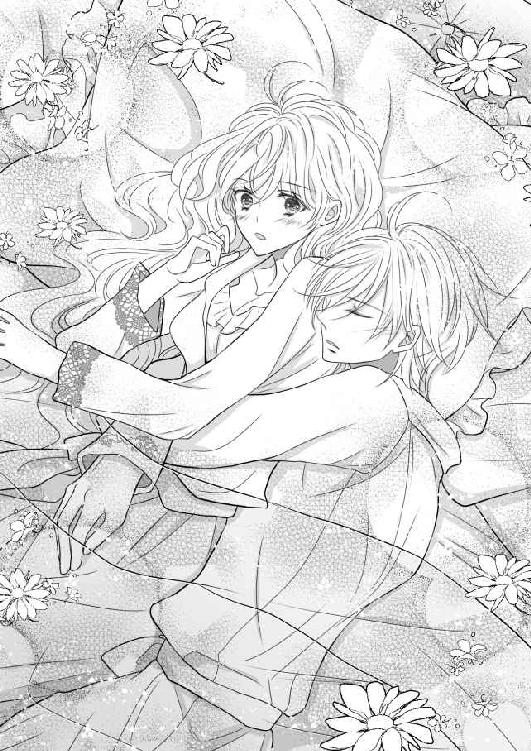
「な、な、なっ」
なぜ？ とも言葉にならず、穏やかに眠り続けるセドリックと、今まさに開こうとしているドアとを交互に見るだけで、オデットは他に何もすることができなかった。
「困りますよ、姫様。ちゃんと起きて頂かないと──」
急ぎ足で部屋に入ってきたクロエは、すがるように見つめるオデットの姿を見てわずかに眉をひそめるも、一見して現状を即座に把握したらしい。
「朝食もこちらで召し上がりますか？」
淡々と、そんなことを言う。
「ま、ま、まさかっ......そんなことをしたら、さすがのお父様とお母様だって卒倒してしまうわ！」
ふふっと、クロエが意地悪っぽく笑った。
「どうりでいくらノックしても、起きてくださらないと思っておりました」
「ほ、本当に？ 全然、気がつかなかったわ......」
窓の外を見れば、既に日が高く昇っていた。
いつも夜明け前には朝の身支度を始めるオデットは、どうやら自分がかなり寝すごしてしまったらしいことに気づく。
記憶を辿れば、昨晩は結局、乗り気でなかったはずのセドリックもいつの間にか積極的に鍵盤を叩くようになり、ふたりで連弾したり交互に弾き合ったりと、明け方までピアノに夢中になっていたのであった。
既に両親が卒倒してしまうレベルの現状にあることを自覚して、オデットはしゅんと肩を落とした。
怒られるだけでは済まされず、娘に手を出したと見なされて、もしかしたらセドリックが解雇されるかもしれない。
「ごめんなさい、クロエ。反省してるわ......お父様とお母様は──」
「連日の練習で疲れているからと、わたくしの方からとうに申し上げております」
オデットが言いきる前に、何事もないような口調でクロエが告げた。
「さ、さすがクロエ......」
オデットは、ほっと胸をなで下ろした。
「ですが、姫様？」
一転、真面目な顔でクロエが問うてくる。
オデットはすぐに思い至り、ぶんぶんとおおげさに両手と首を振ってみせた。
「ない！ ないない！ ただピアノを弾いていただけなの！」
誓って嘘は言っていない。
年頃の男女がベッドで夜を共にしておきながら、何もなかったというのもまた虚しいものがあるが、お互い弾き疲れ、倒れ込むように寝てしまったことが思い出される。
不安げに見つめるオデットに、しかしクロエは心から安堵したように微笑んだ。
「では、いつも通りの洗濯と掃除に致しますね」
何かあった場合、いつも通りでは済まされないのかと真っ赤になったオデットに、クロエが続けて聞いてきた。
「ですが、なぜこのように遅くまで練習なさっていたのです？ お身体に障りますので、今後は控えてくださいませ」
「あ、それがね──」
オデットは思い出したように、クロエに夜間の練習について話そうと、上体を起こした。腰に回されていたセドリックの腕が、ぐっと持ち上がる。
「う......ん......」
すると、セドリックのまぶたが震え、彼特有のオッドアイがうっすらとのぞいた。
「セ、セドリック......おはよう」
どう声をかけてよいのか対処に困り、ひとまず遅い朝の挨拶をしてみたオデット。
瞬間、セドリックの双眸がぱっと開かれる。
うわああ！ というセドリックの尋常ではない叫びが、城中にこだますことになり、オデットとクロエはこの日、火消しに奔走することになった。
普通、逆ではないかと、無意識であれ奥手すぎる王子に、思わず訴えたくなるオデットであった。
第二楽章 秘密の演奏会
それからオデットとセドリックは、改めてクロエに〝夜想曲〟の事情を話すと、普段は夕方に大聖堂を出た際に鍵をかけてもらうところを、朝方にするよう取り計らった。
全ての時間が半日単位でずれることになるが、オデットに忠実なクロエは、ふたつ返事で了承してくれた。
彼女なら誰にもばれずに、うまくやってくれることだろう。
悩んだものの、両親である国王夫妻には余計な心配が及ぶといけないので、結局は黙っていることに決める。婚約前の娘なのだ。さすがに反対されるに違いない。
若干の背徳感はあったが、それが逆に、年頃のオデットをわくわくさせてしまっていた。
そしておそらく、最終的に賛成に転じたセドリックも同じ気持ちだったのだろう。
こうしてふたりだけの秘密の演奏会は、それから毎夜、行われることになった。
なぜ練習会ではなく演奏会なのかといえば、密会の夜だけは、セドリックは自らも曲を披露してくれるようになったからである。
月光に包まれた大聖堂の幻想的な雰囲気がそうさせるのか、堂内がいつもよりずっと広く感じられ、お互いに言い知れない開放感に満たされていた。
「うわああ！ は、ないわよね」
何度目かになるオデットの抗議に、セドリックは困りきった様子で目を伏せた。
「......謝ったではないですか」
「そういう問題じゃないの！」
ではどういう問題かと聞かれてしまえば、オデットの方が返答に窮してしまうのはわかっていることなのに、声を上げずにはいられなかった。
「では今日は、ドビュッシーの『月の光』を弾きましょうか？」
気をそらすように告げられたセドリックの提案に、オデットはいとも簡単に乗っかる。
「ベルガマスク組曲ね！ 素敵！」
『月の光』は、クロード・ドビュッシーのピアノ独奏曲、〝ベルガマスク組曲〟の三曲めにあたる。
最初から最後まで、ほぼピアニシモで演奏されるこの夜想曲は、優しくて切ない曲想として、大陸内でも特に人気が高い。
かけ替えのないセドリックとの夜の時間を表す曲としては、これ以上のものはないだろう。
見上げれば、大聖堂の窓枠にはめられたステンドグラスからは、まばゆいばかりの月光が、色とりどりに射し込んできている。
そこではたと思い至り、オデットは口を開いた。
「ねえ、こんなにも優しい調べなのに、葬送のようなベートーヴェンの『月光』と、なぜ同じ名前なのかしら？」
「ピアノソナタ、第十四番ですね？」
ぽろんと柔らかな音色を響かせながら、セドリックが問い返す。
「そう。確かに静けさは月の光を湛えているように思えるけれど、どちらもピアニシモなのに、なぜか対極な曲のように思えるの」
オデットは細い顎に手を添えて考え込む。
セドリックはうっすらと微笑みながらも、ピアノを弾く手を休めることはない。
「どちらも恋の歌には違いありませんが、ベートーヴェンの方は、実は彼がそう名づけたわけではないのです」
「そうなの？ まるで月の裏側を表したような、とても深淵な世界観なのに......」
「彼の死後、音楽評論家のルートヴィヒ・レルシュタープがこの曲を、〝湖の月光の波に揺らぐ小舟のようだ〟と評し、『月光』の愛称が付けられたのです。だからオデットの見解も、あながち間違ってはいませんよ。月光の波とは、湖に映る月の裏の顔のようなものですから」
褒められて、オデットはぎこちなく照れ笑いを浮かべると、すぐさま次は何を聞こうかと考えを巡らせる。
もっともっと、セドリックに自分の気持ちを知ってもらいたくなったのだ。音楽について語り合うことが、こんなにも楽しくて仕方がないのだと。
「叶わない恋だったの？」
「そうですね。ドビュッシーは人妻であるヴァニエに、ベートーヴェンは身分違いの伯爵令嬢ジュリエッタに、それぞれ書いたものだと言われていますから、叶わなかった恋だったことは明白でしょう」
セドリックが、ふたりの作曲家の恋物語を聞かせてくれる。
十八歳のクロード・ドビュッシーは、声楽教室で伴奏ピアニストを務めていた。そこで出会ったのが、プロにも引けを取らない歌唱力の持ち主、マリー・ヴァニエ。人妻と知りながらも彼女に魅せられてしまったドビュッシーは、彼女が歌うことを想定したハイソプラノの歌を次々に書いていく。彼が残した歌曲の三分の二は、愛するヴァニエに捧げられ、その中のひとつが『月の光』だった。
ルートヴィヒ・ベートーヴェンは、自らのピアノの弟子である十七歳の伯爵令嬢ジュリエッタ・グィッチャルディに、真剣な恋愛をしていた。難聴が原因で気難しくなっていた彼だったが、ジュリエッタの存在が明るさを取り戻してくれたという。友人へ宛てた手紙の中でも、〝今の変化は魅惑的で愛らしい乙女のおかげであり、彼女を愛している〟と書かれている。『月光』は、そんなジュリエッタに献呈されたものだ。
「......ふうん」
しかしそれを聞いて唐突に気分が暗くなり、オデットは思わずうつむいてしまう。
どちらもこんなに素敵な曲を書きながらも、最終的には報われない想いをしている──そう思うと、自分と重ねて、なんだか居たたまれなくなってきたのだ。
どんなに素晴らしい演奏をしても待っているのは、監獄のような結婚生活だ。
あと何回、今夜のようにセドリックと一緒にいられるだろうと、オデットは考えた。
ナゼール国に嫁いだあと、距離は近くなっても、こんなふうに過ごすことは二度とない。王妃の権限でセドリックを呼び付けても、なんの意味もないのだから。
自ら提案した夜の演奏会は、周囲に秘密だということも手伝ってか、誰もが同じ時間を共有しているというのに、ふたりしかいない世界のように感じられていた。
決まりきった午後の練習よりも断然、夜の、このひとときの方が楽しかった。
「では、次は『月光』と比べてみましょうか？」
「え？ あ、うん......お願い」
セドリックの言葉に我に返り、オデットは現実に引き戻された。
不思議そうに微笑を浮かべながら、ピアノを弾くセドリックの横顔がとても綺麗で、いつまでも見つめていたくなった。
ただピアノを聴きたいと思って見惚れていたあの頃とは、明らかに何かが違う。
でもそれが何か、オデットにはわからない。
それからもセドリックはことあるごとに、多種多様な曲を弾いて聴かせてくれた。
ドビュッシーでは、『アラベスク』、『亜麻色の髪の乙女』など。
ベートーヴェンでは、『悲愴』、『エリーゼのために』など。
リストでは、『ラ・カンパネラ』、『死の舞踏』など。
モーツァルトでは、『トルコ行進曲』、『ピアノソナタ』など。
そしていちばん多かったのは、彼が敬愛してやまない、フレデリック・ショパンの曲だ。『幻想即興曲』、『英雄』、『華麗なる大円舞曲』など、音楽を文学や評論に結びつける傾向にあった作曲家の中で唯一、音による抽象表現の意思を貫き通したという、実に常軌を逸した作曲家だった。
セドリックはそんな孤高の作曲家がいったい、何を思って曲を作り上げたのかと、自分なりの解釈で演奏することを好む。
こうして夜間の演奏会では、課題である『愛の夢』の練習を筆頭としながらも、ときにオデットがリクエストして、ときにセドリックが自ら望んだ曲を、彼の完璧な音で、曲が持つ物語を歌ってみせた。
そのたびにオデットは自然、胸が高鳴ってしまい、息が苦しくなることを、次第に意識せずにはいられなくなっていた。
そして、込み上げてくる感情の名を知りたい──いつしかそう思うようになった。
そんな秘密の演奏会から帰ったある日の明け方のこと、オデットはいつものように、クロエに就寝準備を手伝ってもらっていた。
ネグリジェに袖を通すと、ピアノを弾き通しだった腕がじんじんと痛む。
鏡に映る顔も疲れきった様子で、心なしか目の下のくまも日に日に濃くなっているような気がする。
生活リズムを変えてからというもの、やはり少々、無理が祟っているらしい。セドリックに会うたびに、なぜか目まぐるしく変化していく感情も一因しているのだろう。
ぐったりと身体を弛緩させてベッドに倒れ込むオデットに、脱いだドレスを丁寧に畳んでいたクロエが、うかがうようにそっと声をかけてきた。
「......姫様。わたくしは、姫様の幸せをいちばんに考えております」
「何、突然」
とろんとしてきたまぶたを閉じながら、おざなりに応えるオデット。
「ですから、早くナゼール国での演奏会の日がきて欲しいと、そう思っております」
「──それは、どういう意味？」
眠気がいっきに吹き飛び、オデットはヘーゼルの双眸を大きくみはった。
「最初は、幼少期以来の姫様の嬉しそうなお顔を拝見できることを、とても好ましく感じておりました」
クロエの口調は普段と変わらず淡々としているが、どことなく焦燥の色が見え隠れしている。
「しかしながらも恐れ多いことに、次第に不安が強くなってきたのです」
こんなにも自分の胸のうちを主張することは、余計なことなどいっさい言わない、彼女には珍しいことだった。
オデットは上体を起こすと、こちらをじっと見つめているクロエと視線を合わせる。
「どうして不安になんて思うの？ 私は幸せよ？」
そう、今のオデットは、セドリックと一緒にいられるだけで幸せを感じられる。だからどんなに疲れる生活になろうとも、セドリックとの時間が何よりも大切なのだ。
「それが心配なのです」
けれどクロエは、きっぱりと断言する。
「わたくしは、このまま陛下に夜間の練習を内密にしておいてよいものか、深く考えるようになったのです」
「そんなっ......」
がばりとリネンをはねのけて起き上がるオデット。
「困るわ！ だって、だって......」
だって、とオデットが口にするごとに、クロエは不安そうに表情を曇らせていく。
その先の言葉が何なのか、おそらくクロエはとうに気づいていた。
だからクロエは、何も言い返してこない。
オデットだけには、知られてはいけないからだ。
それはいったい、なぜなのか。
「だって──」
だって、〝セドリックが〟──そうしてついにオデットは、わだかまり続けていた本当の気持ちを自覚してしまう。
目の前が真っ白になる心地がした。
すがるようなオデットを前に、クロエは話を広げることを拒むように、そして後悔したかのように、さっと黙礼すると、ドレスを抱えたまま足早に退出していった。
「あ......」
ひとりきりになったオデットは、自らの想いを反芻する。
「私......私、どうしよう......セドリックが──好き、なのだわ」
これまで想像でしか恋を語れなかったオデットは、初めて己の中に芽生えた感情の意味を知ることになった。
セドリックと一緒にいると自然と胸が高鳴ってしまうこと、息が苦しくなってしまうこと。これらは全て、セドリックに恋をしていたからにほかならない。
クロエはそれを防ぐために、あえて進言したのだろう。だが、恋をしたことがないオデットにとっては親切にも教えてくれたようなもので、逆効果でしかなかった。
オデットの幸せは本人の意思に関わらず、ナゼール国のパトリックの元へ嫁ぐことが前提条件となっている。クロエが懸念するのは、彼女がこのままセドリックと一緒にいては引き返せないところまで行ってしまう気がしてならなかった、ということなのだろう。
肉体的にはともかく、精神的には既にその域に達しつつあるのだから。
姉妹のように育ってきたクロエだからこそ、誰よりも客観的にオデットの心の変化を把握していたに違いない。これまで不安を上乗せされるがままにしてきたのはきっと、オデットの気持ちを優先してのことだったのだ。
クロエの想いはもっともだ。だが、だからとはいえセドリックとの夜の演奏会をやめることは到底考えられなかった。
その時間を奪われてしまったら、オデットに希望は見えなくなる。
必要なピアノの練習だから──そう言い訳をしようとして、セドリックが一度もパトリックへの愛に触れていないことに気づく。
最近では互いに違う曲を弾き合い、幼少期の頃のように楽しんでしまっている。
ではなぜセドリックは、オデットの『愛の夢』を完成させようとしないのだろう。
あれからオデットのピアノ技術は、目覚ましい成長を遂げていた。
今ではいつどんな状態であっても絶対に完璧な音程と音量をもって演奏することができる。
足りないのはひとつ、パトリックへの愛──心を込めることだけ。
セドリックは、それだけは詳細に教えてはくれない。まるでクロエがそうであったように、恋という感情に気づいて欲しくないみたいだ。
セドリックはいったい、自分のことをどう思っているのだろうか。
ある意味では非協力的ともとれる練習時間に、彼は何を考えているのだろうか。
数々の疑問符が、せきをきったようにオデットのうちから溢れ出てくる。
しかし今のオデットに、それらを知るすべはない。
ひとつだけわかっているのは、間違いなく眠れない朝になるであろうことだけだった。
一睡もできなかったオデットは揺れる心をひた隠しにしたまま、この日も変わることなくセドリックに師事していた。
午後の練習ではいつも通りの自分を演じ、ただピアノを弾くことに集中した。
そして夜、ぎゅっと心臓がわしづかみにされる思いで大聖堂に足を踏み入れたオデットに、今宵もセドリックは音の物語を聴かせてくれた。
オデットは肩の荷を下ろすように力を抜いた。
セドリックのピアノを聴いているうちは、余計なことを考えなくて済むからだ。
若々しく覇気に満ちたセドリックの表情が引き締まり、滑らかに指をさばいた。
フレデリック・ショパン作曲『バラード 第一番』。
序盤からダイナミックな曲想が、わっと堂内に広がっていく。
ショパンのバラードには、明確な音量のコントラストが指定されていない。
舞曲風なリズムと分散和音による第一主題、幅広い音域に渡って朗々とした第二主題と、始まりから終わりへ必然をもって突き進むような、ドラマチックな音階が形成されるも、各部において、そうした前後のしがらみから逸脱することがないのだ。
それが、無防備にさらされたオデットの心の中を深く貫いた。
ショパンは曲にイメージを付けない。
だからこれは、セドリックの音なのだ。
そう考えるだけで、ひどく胸が苦しくなった。
いつもならばセドリックが持つ全てを盗もうと、目も耳も全開に開いていたオデットは、初めてセドリックの演奏を、そのまま受け入れていた。
そしてあまりにも壮大で重厚な調べに、ただただ聴き入ってしまう。
セドリックの奏でる音のひとつひとつが、オデットに訴えかけるように届く。
もしかしてずっと、これまではオデットが気づかなかっただけで、セドリックは音でオデットに語りかけ続けてくれていたのかもしれない。
これが心を乗せるという、本物のピアノ曲のあり方なのだろう。
だとしたら自分はなんて未熟なピアニストだったのかと、オデットは思う。
「──前にも少しお話したように、ショパンは、音による具体的なイメージを表現することには無関心でした」
そうだ、オデットと同じように、言葉で想いを伝えることが苦手なセドリックだから、色々な曲を聴かせることでずっと、オデットに気持ちを伝えていたに違いない。
「彼の書いたこのバラードは、アダム・ミツキェヴィッチの詩に感銘を受けたことにより作曲されたと言われていますが、表現性や具体性は避けられたものになっているのです」
では、セドリックの音からにじむように感じられる、この熱い想いは、果たして本当にオデットに向けられたものなのであろうか。
素直に信じてよいのか、わからない。
音は嘘を吐けないけれど、誰に向けた音までかは見抜くことは難しい。
なぜなら曲は、聴いた者の解釈にゆだねられる性質にあるため、ひとたび自分へのものと思えば、自然にそう心に浸透してしまうからだ。
「ゆえにショパンは、音の様々な形式に加え、美しい旋律と、ピアノにおける表現様式を拡大し、ピアノ音楽を新しく切り開いたとされています」
オデットだけが彼の気持ちを知らずに、無邪気にもそんな曲をねだっていたのか。
だとしたらセドリックはいったい、どんな気持ちで己の兄に嫁ぐ自分の傍にいるのだろう。
逆の立場である自分でさえ、こんなにも胸が張り裂けそうだというのに。
「だから弾く時は、音のイメージを追求して、自らの表現を大事にすることが──」
もはや音楽の授業と化していたセドリックの講義が、唐突にやむ。珍しく、鍵盤の上の手も動かなくなっていた。
セドリックは、オッドアイの双眸を動揺に歪めた。
「オデット......なぜ、泣くのです？」
セドリックの言う通りオデットの頬には、涙の筋が伝っていた。
オデットは腕で必死に目をこするも、涙はいっこうに止まってくれない。
それどころか、セドリックの優しくて甘い声を聞けば聞くほど、熱くなる胸のうちから、止めどなく溢れ出てきてしまうのだ。
「わからない......わからないわ......」
オデットは嘘を吐いた。
ピアノの音とは違い、言葉はどんな嘘でも吐き通してくれる。
実際、セドリックにはオデットが涙する理由が見当も付かないらしい。
困ったように眉を下げ、おろおろと彼女の頭をなでて、なだめるしかなかった。
セドリックの手の温もりをじかに感じながらもオデットは、自分の気持ちを言うわけにも、そしてセドリックの気持ちを確かめるわけにもいかないと思っていた。
そうしたらきっと、クロエの懸念通り、あと戻りできないところまでいってしまう。
オデットは、パトリックの元に嫁ぐ身なのだ。
たとえ今、セドリックがオデットを好意的に思ってくれているとしても、オデットの現状がこの先、覆ることは決してない。
だから知ってしまうだけ、お互いに酷な気がした。
そんな境遇を、セドリックの音は嘆いているように、オデットには聞こえたのだ。
もし今、オデットが『愛の夢』を弾けば、セドリックに気持ちがばれてしまうだろう。
だとしても、セドリックはそこに踏み込んでくるような人間ではない。
それが自分にとって良いことか悪いことなのか判断が付かないが、せめて言葉では嘘を吐き通そうと、オデットは心に誓った。
オデットは翌日、初めて午後の練習をさぼった。
この頃の不規則な生活に加え、溜まりに溜まった練習疲れ、そして様々な想いが交錯して、とても起き上がれる気力がなかったのだ。
明日のために休んでおきたいという理由も大きかったが、セドリックの秘めた胸のうちを感じてしまった今、どのように顔を合わせていいかわからないという想いの方が強かった。
無論のこと、両親とセドリックにはそれぞれ、クロエが仲立ちしてくれた。
両親には心配をかけないよういつも通りに練習へ行った旨が告げられ、セドリックには急な体調不良により丸一日の休みが伝えられた。
几帳面なセドリックは見舞いに行きたいと申し出たらしいが、クロエがうまく取り繕ったということだった。
忙しい中にも関わらず、いつも自分のために立ち回ってくれるクロエには感謝しかない。
セドリックは今日も変わらず、大聖堂に向かったそうだ。
しかも時間があるからと、自らグランドピアノの調律を買って出てくれたというから、優しいと思う反面、こんなにも思い悩んでいるというのに、何も考えていないようなセドリックが少し憎たらしくもあった。
このままずっと心配させていたい想いに駆られたが、さすがに夕食会には出なければ、両親をむだに心配させてしまうだろう。
日が沈む頃、王宮の食堂では夕食の準備が進められていく。
数客の椅子と共に、縦に長いテーブルが中央に置かれただけの食堂の壁には、観賞用の有名な絵画や骨董品が並び、口だけではなく目でも楽しませるようにできている。
この豪奢な部屋で、一流のコックたちが腕によりをかけた料理の数々を、国王夫妻を始めとしたレ・ミュッセ家の面々が、酒と共に囲むというのが恒例であった。
苦渋に顔を染めたまま食堂に現れたオデットは、そこにいるはずのない人物を目の当たりにして、ぎょっと身体をおののかせた。
彼はにこにこと悪びれなく微笑んで、ひらひらとこちらに手を振ってみせる。
「おお、オデット。やっと来たか！」
いちばん奥の席に鎮座している、サン・マロ国の国王であるオデットの父が言った。
ピアノのことになると時間を忘れてしまうのだと、父王は目尻にしわを刻んで娘を褒めそやす。
自らのピアノ技術を受け継いだ一人娘が、未だに可愛くて仕方がないのだろう。
すると隣に座るオデットの母、サン・マロ国の王妃が、不思議そうに小首を傾げた。
「あら、セドリック様はどうされたの？」
練習から戻ったはずのオデットが、ひとりでいることに違和感を覚えたらしい。
控えていたクロエにオデットが視線を向けると、クロエは小さく首を横に振った。
「セ、セドリックは調律をしてくれているの」
動揺を悟られないよう、ゆっくりと言葉を紡いだが、覚えずどもってしまう。
「そう、悪いわねえ」
母親はたいして気にしていないようだったので、オデットはほっと胸をなで下ろした。
父親の方が、急かすように手招きする。
「いつまでもそんなところに突っ立っていないで、最愛のパトリック君が来ているのだぞ？ 早く座りなさい」
父王の言う通り、反対隣にはパトリックの姿があった。
ナゼール国の正装をまとった彼は、既に国王とワインを何杯か酌み交わしていたようだ。ほんのりと上気した王とパトリックの顔、うっすらと色づいた空のグラスが、それを物語っている。
オデットは返答に窮した。
セドリックのことだけでも頭がいっぱいなのに、パトリックの隣でなんでもないふりなどして食事をする気になど、とてもなれなかった。
「オデット、何をしている？ 明日がいよいよナゼール国での演奏会だからと、わざわざ我が国まで迎えにきてくれたパトリック君に、よもや恥を掻かせる気ではなかろうな？」
父王が厳しい視線を向けてくる。
可愛い一人娘とはいえ、王女としての責務を、きちんと果たせということだろう。
オデットの一挙手一投足が、サン・マロ国の格式を上げるといっても過言ではない。
そして彼の言う通り、明日は二回目の演奏会にあたる。
しかしいざそれを思うと、余計に気が滅入ってしまった。
オデットは後退ると、ゆるゆると否定に首を振った。
「わ、私......セドリックとあとで食べるわ。やっぱり、悪いから」
あら、と残念そうな顔をする母と、今にも叱責せんばかりに口を開いた父を振り払うように、オデットはそそくさと食堂を出た。
クロエが付いてくる気配はなかった。
おそらく今頃は、挙動不審なオデットをなんとか正当化してくれているに違いない。彼女には、本当に頭が上がらない。
しかしオデットは、次にどこへ向かうべきか思案に暮れた。
セドリックと食べると言ってしまった手前、自室に戻ることは、はばかられた。
大聖堂に行った方がいいのだろうか。
でもきっと、そこにはセドリックがいる──。
無断欠席でないとはいえ、練習をさぼってしまったという罪悪感から、うまく相対できる気がしない。
けれど妙案が浮かばなかったオデットは結局、大聖堂への道を辿っていた。
城は中央の本館と四つの巨大な塔からなり、部屋数は四百、階段が七十と、かなり広い。
四本の直線の廊下が交差して十字を形作っており、オデットは今、ここから連なる二重螺旋階段を降りているところだった。精緻に彫刻された柱の数々、精巧に飾られた調度品の数々を通りすぎ、大理石の床の上をひたすら歩き続ける。
城内は夕食時であり、交代で警備に立つ衛兵以外、人の気配はない。
ということは、いつも大聖堂まで送ってくれる御者も、城門前にはいないだろうか。
不安を抱えながらひとりでとぼとぼと歩くオデットを、すれ違う兵士たちは不審そうに見つめていたが、国王から命令でもされない限り、引き留められることはない。
たとえ御者がいなくても馬車はその場に止めてあるはずだから、そこで待てばいい──オデットはそう思い、セドリックに会う時が近づくにつれて鼓動を早める心臓を落ち着かせながら、玄関ホールを抜けた。
外に出ると、既に太陽は西の彼方に落ち去っていて、空には星が瞬いていた。
等間隔に並ぶ外灯が、城門までの道のりを、こうこうと照らしている。
城壁に沿った石畳の上に、二頭立ての馬車は予想通り、横づけにされたままとなっていた。馬たちもエサの時間のようで、与えられた草をのんびりと食んでいる。
セドリックが戻っていないということは、彼はきっと調律に夢中になるがあまり、帰りの馬車の時間を逃してしまったのだろう。
このままではクロエが鍵を閉めに行く朝方まで、大聖堂から出ることはできない。
休むと伝えたオデット自ら向かったら、セドリックはどんな顔をするだろうか。仮病だったのかと怒るだろうか、反対に外出しても大丈夫なのかと心配するだろうか。
どうしたって後者のような気がして、ふっと笑いが込み上げてくる。
そして、そんなことをつらつら考えていると、オデットの頬は自然と熱くなった。
早くセドリックを迎えに行きたくて、はやる気持ちを抑えながら、オデットは馬の後ろにつながれているキャビンの扉をもどかしそうに開け、さっと乗り込む。
そうしてドアをしめようとした、その瞬間。
「おっと、待った」
オデットの細い手が、がっしりとした腕に阻まれる。
「パ、パトリックっ......!?」
批難の声を上げるオデットに構うことなく、パトリックはオデットを奥に押し込むようにして自らを個室の中に滑り込ませると、さっさと扉を閉めてしまう。
この馬車は王家専用のもので、外からは中が見えないよう綺麗なアーチを描いた箱形になっている。
カーテンも下ろされた今は、ほの明るい燭台の光だけで心もとない。
とんでもない場所でふたりきりになってしまったと、オデットは怯えた。
ビロードの椅子の上で縮こまるオデットの様子に気づいたのか、パトリックが苛立たしげに言葉を吐いた。
「セドリックと一夜を明かしたそうだな？」
「え？」
一瞬、何を問われているのかわらからずに瞳をまばたくも、すぐにあの夜のことだと思い至る。しかしそれは、近しい者以外、誰も知らないはずだった。
「......なんで知ってるのよ」
「なにかと耳聡いのでね」
ひょうひょうと肩をすくめてみせるパトリック。
こうも嫌味ったらしく言われてしまうと、なぜかこちらに落ち度があったような気になってしまう。
兄の婚約者となる自分との仲を、あとになって誤解されないよう、あらかじめセドリックが伝えておいたのかもしれない。
良いか悪いかは別として、真摯で紳士なセドリックなら、いかにもやりそうなことである。
オデットはすっと目を細めて、パトリックを睨め付けた。
「なら、何もなかったことなど、とっくに知っているのでしょう？」
「まあな」
パトリックはにやりと笑ったが、一転、表情を真面目なものへと変えた。
「ただし、安心はできん」
「安心って......」
オデットは思わず、鼻で笑ってしまう。
数々の美姫と浮き名を流してきたのは、どちら様だったか。
自分のことは棚に上げ、浮ついた噂ひとつないセドリックに対して、そんな言い方はないだろうと思ったのだ。
しかしパトリックは、至って真剣な面差しを変えない。
「調律、ねえ」
「それが何か？」
どきりと心臓がはねたが、オデットはなんとか平静を装った。
いつの間にかパトリックが距離を詰め、オデットの目の前にいた。
「どうしたって、ここには来られないわけだ」
「どういう意味？」
オデットが眉をひそめる。
しかしパトリックは、オデットの問いは無視して話題を転じた。
「明日の演奏だが、問題はなかろうな？」
「おかげさまで」
つんと顔を背けたオデットのおとがいを、パトリックは無遠慮につかんで自分の方を向かせた。
体重がかかった衝撃で、ぎしりと椅子が鳴る。
燭台にちらちらと映るパトリックの瞳が、妖しく陰っていた。
「は、放してっ」
「放さない」
そう宣言するや否や、パトリックはオデットを壁面に押し付けるようにして、強引にその唇を重ねた。
「んっ!?」
呼吸を奪われ、オデットはもがくように、どんどんとパトリックの胸板を叩く。
けれどパトリックは、いっこうに離れようとはしない。
それどころか、いっそう深く口づけてきた。
キスなんて甘やかなものではなかった。
「パ、パトっ......お願っ......や、やめ......！」
角度を変えて、何度も何度も口を塞がれ、抗議の声も途切れ途切れになる。
ワインの香りが入り混じった吐息が吹きかけられるたび、むせ返りそうになった。
「うっ......んぅ......」
ついにオデットの瞳には涙が浮かび、その一滴が、つうっと頬に筋を作っていく。
それに気づいたパトリックが、ようやく唇を離してくれた。
「お前は俺の妻になるのだ。忘れるな」
そして熱っぽい眼差しと強い口調で、そんなことを言われる。
「っ......忘れてなんか、ないわ！ なのに、どうしてこんなことっ......」
心の準備もできていないのに、あまりに性急すぎる。
オデットはわなわなと震えていた。
そんな彼女を、パトリックはいつものごとく面白そうに達観しながら眺めてくるのかと思いきや、驚くことにパトリックは自嘲気味な笑みを刻んでいるだけだ。
「セドリックが二十歳になった時、俺になんと言ってきたと思う？」
「え──？」
あまりに唐突に続いた問いに、オデットの頭は付いていかない。
パトリックは皮肉に頬を歪めた。
「〝ようやく一人前になれたから、オデットをめとりたい〟とな」
「っ!? ほ、本当なの......？」
パトリックの前だから、オデットは喜ぶべきか悲むべきか判断が付きかねた。
でも、セドリックが自分を妻に迎えたいと言ってくれていたことがうれしくて仕方がない。
やはりあの曲の解釈は間違っていなかったのだと、改めて思う。
しかし次のパトリックの言葉に、オデットはざっと血の気が引いてしまった。
「だから俺が、先にお前に申込み状を送ってやった」
「どうして......」
「どうしてだと？」
呆然とつぶやくオデットにパトリックは、なかば怒りながら、はっと口角を吊り上げた。
「お前はどれだけ鈍感なのだ？ 俺たち兄弟はずっと、お前を取り合ってきたというのに、相変わらずピアノ以外には疎いのだな」
「そ、そんなの嘘よ......だって私たちは──」
ラファ家兄弟とオデットとの思い出は、楽しそうにピアノを弾き合っている姿だった。
途中からパトリックだけは弾かなくなってしまったけれど、いつだって微笑ましくオデットのピアノを聴いてくれていた。
取り合われていたどころか、パトリックとセドリックが険悪な雰囲気になったところでさえ記憶にない。
「それは小さい頃のことだろう」
オデットの頭の中をのぞいたかのように、パトリックが苛立たしげに訂正を入れる。
「物心付いた時にはもう、どちらが次の交流会でオデットに聴かせるピアノを弾けるか、それだけが俺たち兄弟の関心事になっていた」
泣き濡れた顔で、オデットは呆然とパトリックを見つめた。
そんな話は初耳だった。それにパトリックは──
「そうだ。俺はセドリックに勝てないと早々に悟り、ピアノから身を引いた」
だからピアノを弾かなくなってしまったというのか。あんなにも楽しげに弾いていたというのに。
自分にも責任があるような気がして、オデットはうつむいた。
その間にも、なげやりなパトリックの独白は続く。
「あいつはできた男だよ。政務とて、俺は下手したらあいつに負けるだろう」
オデットは、はっとして顔を上げた。
こんな弱気なパトリックをこれ以上、見たくないという想いも強かった。だから乏しい語彙力から、慰めのような言葉を必死で捜した。
「そんなこと......セドリックは音楽しか知らない、不器用な人だわ」
その通り、セドリックは何事にも奥手で、オデットの気持ちなどちっとも伝わらなかった。
「あいつに勝てる要素が欲しくて、お前が批難するように、女を求めたのは事実だ」
懸命なオデットの言葉も、しかし今のパトリックには耳に入らないらしい。
「だけど、あいつは音楽もお前も、全て手に入れようとしたのだ。俺には、それが許せなかった」
「パトリック......」
オデットはやりきれない気持ちになった。
彼の強引な口説き方を許す気には到底なれなかったが、パトリックも実は自分に一途だったということ、そしてこの婚姻の経緯がわかり、何も言えなくなってしまったのだ。
けれどパトリックは、こうして自分を手に入れながらも、どうして不安に思うことがあるのだろうか。彼がセドリックになぜ固執するのか、セドリックの何がそんなに怖いのか、オデットには不思議でならない。
セドリックは、国王となる兄を立てないような人ではないから、望み通りオデットと婚約を果たせるパトリックの方が、どうしたって恵まれているはずだ。
音楽だって、理由はどうであれ、手放したのはパトリック自身なのだから。
そんなオデットの思考もよそに、パトリックのアンバーの瞳がぎらりと光る。
「だからお前は、俺のものだ。セドリックには絶対、渡さない」
そうして再び伸ばされかけた手に、思わずびくりと身体をすくませたオデット。
パトリックは一瞬だけ傷ついたような顔をするも、すぐに彼らしい不遜な態度で腕を戻した。
「セドリックに会いに行くのだろう？」
「なぜ、そうだと......？」
その問いには、やはりパトリックは答えてくれない。
「あいつには、お前からもよく言っておけ。いらぬ期待を抱かせてやるな」
それはセドリックが、あの想いを込めた『バラード 第一番』を弾いたように、兄と結婚しても、これからも変わらずオデットを愛し続けるという意味なのだろうか。
「そんなこと──」
わかっている。
オデットは、パトリックの言う通り、彼に嫁ぐ身であるのだ。
どういう形であれ、セドリックの想いに応えることなど、許されはしない。
逆に問いただそうと口を開くと、パトリックは既に背中を向けていた。呼び止める間もなく、彼はさっさと扉を開けて、キャビンから出ていってしまう。
「......っ」
なぜ、パトリックが夜間の演奏会のことを知っているのかも気がかりだったが──こればかりはセドリックとて、余計に言う必要のないことだったからだ──ひとり残されたオデットはそれよりも、言い知れない感情の渦の中をさまよい続けていた。
セドリックが心配そうに、何度めかになる質問を繰り返した。
「オデット、今夜は何かあったのですか？」
「............」
オデットは言葉が出てこず、すがるようにセドリックを見つめるだけだ。
あれから結局、パトリックに催促されたらしい御者が大急ぎで戻ってくるまで、オデットはキャビンの中から動くことができなかった。
馬車は当然のように大聖堂に向かい、抗議する間も与えられないままに、オデットは入り口で降ろされてしまったのである。
御者は呑気にも、いつものように朝方にクロエを連れてくると言い置いて、後ろ手に手を振りながら城に帰っていった。
呆然とたたずむオデットを見つけたのは、玄関ホールで思案に暮れていたセドリックであった。
オデットが予想していた通り、彼は調律に夢中になるがあまり、帰りの馬車に乗り遅れてしまったのだ。
セドリックは、オデットが無理を押して練習にきたと思ったようで、しばらくはその身を案じていたのだが、逆にオデットが頑なに首を横に振り続けるものだから、諦めたように今宵もふたりでピアノの前に向かうことになった。
それでもセドリックは、問いただすことをやめない。
オデットは必死に、決壊しそうな感情を押し殺しているというのに。
けれどパトリックにキスされことだけは、口が裂けても言いたくなかった。
パトリックは自分を愛してくれていた。
そして自分はセドリックを愛していた。
セドリックも自分を愛している。
それなのに、パトリックとの婚約を認めてもらうために、こうしてセドリックは自分のピアノの練習に付き合ってくれている──そんな矛盾に満ちた現状に、思わず苦笑が漏れると、セドリックが怪訝と眉をひそめた。
オデットは何も言わなかった。
何も言わず、鍵盤に手を添えると、初めて一呼吸も置くことなく弾き始めた。
流れ出した旋律は、『愛の夢』。
セドリックの双眸が、大きく見開かれる。
オデットが創り上げた世界が、ぶわりと聖堂内に響き渡る。
和音を叩くオデットは、まるで作曲家のリストが憑依したように、蜂蜜色の髪を波打たせながら、ひたすら絶頂に向かって駆け上がっていく。
隣に座るセドリックは、呆然と聴き入るしかなかった。
〝私は愛の喜びを目の前にしながら、死んでしまったの。
あなたの腕の中で葬られるならば、どんなによかったか。
あなたの口づけで目覚め、あなたの瞳の中に天を見たい。
あなたのお墓の前で、嘆き悲しむ時がきてしまうのかしら。
それならばいっそ、愛せるだけ愛して欲しい。
あなたのために尽くして、どんな時にも悲しませることはしないから。〟
そんな切ない歌が次々に音となり、朗々と奏でられた。
そうして最後の一音が終わると、再び聖堂内は静寂に満たされた。
曲の余韻を残しながら、オデットがぽつりとつぶやく。
「ノクターンの時間帯は、本当は夜ではなくて、明け方だったのね」
「何を──」
セドリックが我に返ったようにかすれた声を発したが、オデットは口を挟む余地を与えなかった。
「私、もっとセドリックに褒められたくて、音楽史もたくさん勉強したの」
穏やかでないオデットの様子を汲み取ったのか、セドリックが黙って続きを待つ。
オデットは遠くを見るような視線を窓辺に向け、うっすらと微笑を湛えた。
「夜通し続く社交界のパーティーで、愛を語り合った男女が気がつくと、空はもう夜明けの色に変わっているの......それを、きっとふたりで寄り添いながら眺めるのだわ」
それが自分とセドリックであれば、どんなによかったことか。
オデットはセドリックを振り返り、彼の綺麗な顔をとっくりと見つめた。
「ノクターンは、夜を惜しむ曲だったのね？」
「だから......そんなふうに弾いたのですか？」
セドリックもオデットの顔を見つめている。
窓から射し込む月光が、彼特有のオッドアイを浮かび上がらせ、幻想的な二色が混ざり合い、毅然としたオデットの姿を映し出す。
「ええ。これは、あなたを想って弾いた『愛の夢』よ」
ついにオデットは、自らの想いをセドリックに告白してしまう。
うちから込み上げてくる感情はとうに決壊しており、音だけでは飽き足らず、口を衝いて溢れ出る。
セドリックが顔を強張らせた。
「伝わっていましたよ」
「......感想は？」
くしゃりと泣きそうになっている顔を歪め、オデットが先を促す。
もしここでセドリックが率直に答えてしまったら、ふたりは決して踏み入れてはいけない場所に、あっという間に投げ出されることだろう。
「オデット......ダメです」
だからセドリックは懸命に踏み留まった。奥手の王子らしい、彼の判断だった。
しかし彼の誤算は、今のオデットが捨て身だということを、知らなかったことにあった。
オデットが微笑む。
「私は......こうして月夜に会う、あなたとの時間に恋をして、あなたに恋をしたわ」
オデットは、叶わない恋を曲によって捧げたというドビュッシーの『月の光』、ベートーヴェンの『月光』を、次々に己の解釈に換えて弾いていった。
音で伝えることが得意なふたりだからこそ、曲以上に語り合えるものなど存在しない。
ゆえにオデットは、セドリックに想いを伝えるために、曲を弾き続けた。
オデットは、パトリックがいったい何を恐れていたのか、もうわかっていた。
彼が怖かったのは、セドリックがオデットを奪うかもしれないということではなく、ピアノにしか興味がなかったオデットが、セドリックの音のみならず、セドリック自身に惹かれてしまうことだったのだ。
そしてパトリックが危惧した通り、それはもう手遅れであった──。
セドリックは苦渋に表情を変え、たどたどしく楽譜を開く。
「戯れはやめてください。オデット、さあ今夜は......」
瞬間、オデットは楽譜を思いきり払いのけた。
ばさりと、リノリウムの床に落ちた羊皮紙の乾いた音が響く。
「オデット......っ」
咎める口調で言いながらも、セドリックはオデットの視界から逃れるようにして、即座に立ち上がって楽譜を拾おうとした。
そんなセドリックの背後から、どんっとオデットが抱き付く。
「戯れなんかじゃないわ！」
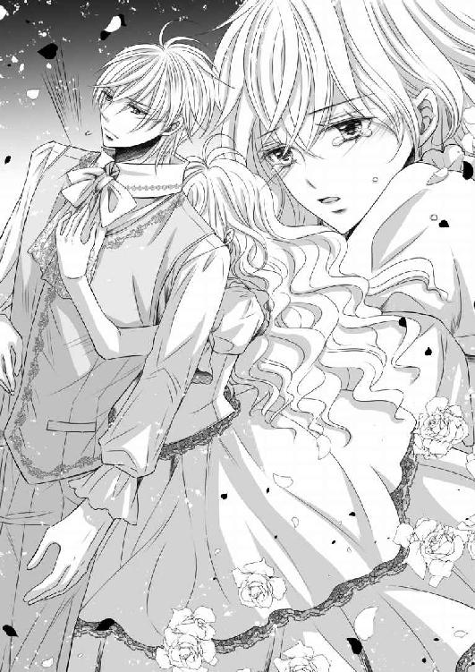
しんとしていた堂内に、オデットの悲痛な声がこだまする。
セドリックの背中が、小刻みに震えているのがじかに伝わってくる。
とくん、とくんと、心臓の音が、溶け合ってしまいそうなほど近い。
ピアノを弾いていない大聖堂は、なんて静かな場所なのだろうと、熱を上げ続ける頭の中で、オデットは漠然とそんなことを考えていた。
今更ながら、夜という時間と誰もいない場所が、男女の逢瀬には欠かせないことが思い出される。
そんな状況に、オデットとセドリックは毎夜のように一緒にいたのだ。
「本当なのっ......私のピアノはあなたがいて、初めて本物の曲になれるのだわ......！」
「オデット──」
それは落胆するような声に聞こえた。
腰に回されていたオデットの腕が、セドリックの手によってそっと解かれた。それだけで、オデットの心は失望の色に染まっていく。
しかしこちらを向き直ったセドリックの顔は、まるで果敢に己の感情を押し殺しているように、ひどく悲痛に歪んでいた。
だからオデットは、現実を目の当たりにしてしまう。
「でも......私は明日、パトリックのために、またピアノを弾くのだわ」
「知っています」
真夜中の大聖堂では、月の光だけが不器用な男女を照らし出していた。
突然、セドリックがぎこちない動作で、ぎゅっとオデットの手を握った。それぐらいであれば許される、許してほしいとでもいうように。
驚きに一瞬だけ怯んでしまったオデットだったが、すぐにその温もりに安心して握り返す。
ピアノで鍛えられたセドリックの手は、思った以上にしなやかだった。
セドリックの顔が、わずかにほころんだような気がした。
オデットは勇気を出して、セドリックの真摯なオッドアイを見つめる。
「ねえ、お願い。お嫁に行くまでの、最後の時だけでいいから......どうかセドリックと一緒にいさせてちょうだい」
オデットの切実な訴えに、しかしセドリックは懸命に首を横に振る。
それが意味することが、これまでのような微妙な距離を空けたピアノの練習などではなく、たったひとつの行為を指していたからだ。
「いけません！ もしオデットが、既に純潔を散らしていたと兄さんが知ったら──」
「わかってるわ！」
オデットの方がセドリックより声を荒らげ、いやいやするように強く首を振る。
「もしもの話なんて聞きたくないっ......私、あなたが好きよ、セドリック！」
オデットは瞳を潤ませた。
ようやく愛する男性に、ピアノ以外で率直な気持ちを伝えられたのだ。どういう結果になろうとも、もう後悔はない。
セドリックは苦しげに眉根を寄せ続けていたが、ついに最後の堤防が崩れてしまったのだろう──やがて諦めたようにゆっくりと言葉を継いだ。
「僕も......君が好きです、オデット」
「セドリック......！」
思わずその胸に跳び込むオデットを、セドリックは強く抱き留めた。
「ずっと、ずっと君が好きでしたっ......！」
セドリックの声は、オデットよりも泣きそうに揺れている。
セドリックの温もりをじかに感じながら、オデットは切なすぎて心臓が壊れてしまうような気がした。
ピアノの練習中、セドリックに触れたいと願ってやまなかったから、夢が現実になったことがまだ信じられず、今はただただ離れないよう、彼を抱き締め返していた。
ふわりと香るセドリックの整髪料が、オデットの鼻孔をくすぐる。彼の汗と混じった濃密な匂いに、思わずくらくらとした。
オデットは、もっとセドリックを近くに感じたいと思った。
互いの顔が見えるよう、少しだけ身体を離すと、セドリックも同じ衝動でオデットを見つめていることがわかったから、オデットは思いきってそれを口にした。
「セドリック、キスして」
「......っ」
それは──と言いかけたセドリックの唇を、それ以上は言わせないとばかりにオデットは、己の細い指先でそっとなぞった。
ぞくりと震えが走ったのはセドリックだったのか、それとも自分自身だったのか。
セドリックがその手を優しくつかみ、自身の方へと引き寄せる。
そうしてふたりは、口づけを交わした。
触れ合うだけの柔らかいキスは、オデットの心を締め付けた。
初めてのキスがパトリックに奪われたことを、思い出してしまったのだ。
オデットはセドリックと甘く唇を重ねながら、静かに涙をこぼす。
冷たい水滴の感触が頬に当たったのか、セドリックが唇を離して聞いてきた。
「オデット、どうして泣くのです？」
「なんでもないわ」
とても言えなかった。
だけどセドリックも譲らない。
「何でもなくありません。好きな人の涙は見たくない」
初めて強く主張され、オデットはためらいがちに、パトリックが今、サン・マロ国に来ていることを告げた。
「兄さんが──？ では、もしかして......」
先を紡げずにうつむいてしまったオデットを気遣うように、セドリックがそっと彼女の顔をのぞき込む。
「オデット、こっちを向いてください」
「......？」
居たたまれない気持ちで顔を上げると、セドリックが再び口づけてくる。
先ほどと同じぐらい優しかったが、今度はずっと深く、長い。
「んっ......ふぅ......」
そして唐突に唇を割って舌を入れられ、オデットは苦しげに息継ぎするしかない。
「兄さんは、こんなふうにしましたか？」
歯列をなぞられ、口腔を探られながら、セドリックが器用に聞いてきた。
「う、んんっ......！」
こんな淫らなキスは知らないと、オデットは必死に否定する。
「ではオデット、君のファーストキスは僕ですよ」
そう言ってセドリックが笑い、さらに深く舌を絡めてくる。
「ふぁ......うっ......ん......」
ねっとりと互いの唾液が混じり合い、口の端からつうっと糸を引く。
鼓動が早くなるにつれ、呼吸が浅くなり、オデットははあはあと荒い息を吐いた。
下肢からはなぜか、心地のよい痺れが突き抜ける。
やがてセドリックの唇は、オデットの唇から顎のラインを辿り、頬、鼻、額へと移ると、最後にはまなじりに残るしずくを吸い取ってくれた。
オデットがくすぐったさに吐息を漏らすと、セドリックが微笑む。
いつもみたいに、なだめるように頭をなでると、いとおしそうに蜂蜜色の髪を一房すくい、そこにもキスを落とした。
パトリックがオデットにしてきた何もかもを、セドリックによって上書きされたようで自然、オデットの胸はきゅっと痛む。
でも、この痛みは心地よかった。
心臓の鼓動はもう限界まで高鳴っている。
もっと、もっとセドリックを近くに感じたい。
だからオデットは、別の〝初めて〟を彼に要求した。
「セドリック、私を抱いて」
「──!?」
セドリックは驚きのあまり、ブルーとグリーンの瞳を大きくみはった。
「お願いよ......私の初めては、あなたがいいわ」
強引なパトリックの姿を思い出し、オデットの目は再び潤む。
パトリックのことが嫌いなわけではない。いずれ、結婚もする。
けれどセドリックを愛していたから、そんな結末が、無性にやりきれないのだ。
それを上回る、確かなものが欲しい──。
泣き顔でも懸命に笑ってみせるオデットの姿があまりに痛々しかったのか、セドリックは再び彼女に口づけた。
「はっ......んぅ......」
セドリックのキスの仕方に慣れたオデットは、彼のリズムに合わせて角度を変えていく。
夢中になって唇をむさぼり合い、激情に似た興奮が、互いの心を震わせる。
けれどいつまでもキスをしていることで、逆に止めどない焦れが生じてしまう。
もどかしくなったオデットはセドリックの手を取ると、自ら疼いていた胸元へと導いた。
セドリックは最初、ためらいがちに、しかしすぐに柔肌に手を這わせていった。
「ああ......っ」
ドレスの上から胸の膨らみをなでられ、オデットが甘く喘ぐ。
その間にもキスの嵐がやむことはない。
呼吸の浅さから、息継ぎのために、何度も何度もついばむような口づけが繰り返された。
やがてオデットの背に回されたセドリックの手により、ドレスのホックが外され、乳房があらわになる。
ひやりとした夜気も一瞬のこと、すぐにセドリックの温かな腕に抱き留められた。
「セドリック......セドリック......っ」
セドリックが唇を離したので、ひたすらに名前を呼ぶと、今度は膨らんだ先端に舌があてられる。
声を出す間もなく、セドリックに先端をなめられてしまった。
しごくように吸い上げられ、背筋を駆け抜ける痺れと共に、次第に硬くとがっていく。
ぞくりとした初めての感覚に、思わず背中が弓なりに反った。
しかしセドリックに優しく胸をもみしだかれ、硬くしこった赤いつぼみをほぐされていくと、開花していくみたいに、気持ちがよくなっていくのがわかった。
甘ったるい愛撫に、ゆるゆると身体を弛緩させると、セドリックが情欲を織り交ぜた声で切なげにつぶやく。
「オデット......ずっと、こうして君に触れたかった......」
セドリックの吐息がかかるたび、下腹部の辺りが熱くて仕方がない。
その理由がオデットにはわからず、もどかしげに太ももをすり合わせるだけだ。
「セドリックっ......私も、私もよ......！」
セドリックはそのままオデットを抱え、鍵盤の上に座らせた。
瞬間、不協和音が大聖堂に反響したが、ふたりにとってそれは、なぜか扇情的な響きにしか聞こえない。
セドリックは立ったまま、オデットはピアノに腰かけているという傍から見れば奇妙な体勢で、ふたりは再び愛し合い始めた。
セドリックは前触れなく、オデットに覆い被さってくる。
首筋に吸い付かれると、オデットの口からは、さらに甘やかな声が漏れた。
「セドリックっ......胸が、胸がっ......苦しい、の」
「僕も同じですよ、オデット」
ただただセドリックを強く感じたいということ以外、オデットの思考はまったく働いてくれなかった。
セドリックの言葉でさえ、どこか遠くから聞こえるようだ。
そこで初めてオデットは、音でも言葉でもなく、セドリック自身が欲しいのだということに気づく。
純潔の姫としては、あるまじき浅ましい欲望なのかもしれない。
それでもオデットに、この熱情を止めるすべなど思い至るはずもなく、そうしている間にも、セドリックの手は胸から腰、腰から太ももへと移り、ついに狂おしいほどに疼いていた足の間に触れる。
きゅんとした感覚が、下肢から脳髄まで一気に駆け上がっていく。
「息が......息が、できないっ......」
「今だけです」
下着をずらされ、これまで一度も他人に見せたことのない、秘められたひだをなでられる。
熱くて仕方なかった箇所では既に、じっとりと湿り気を帯びた蜜がにじみ出ていることが、自分でもわかった。
敏感な花芯をそっと押し上げられ、ぞくぞくと走る快感に、オデットは乱れる。
「はあっ......そ、そこは......ああ、あ──！」
淫猥な水音がしたことに羞恥を覚える暇もなく、セドリックの長い指先が、蜜壺の中をゆっくりと暴いていく。
たまらずに、オデットは嬌声を上げた。
「好き、好きっ......セドリック......！」
「僕も好きですよ、オデット」
最初は秘所を確認するような手付きで触れられていただけであったが、次第に最奥に向かって出し入れを繰り返されるようになった。
そのたびにオデットの意思に関わらず、蜜孔からはどぷりと愛液が溢れ出てくる。
乙女の大事な場所が、早く男根を受け入れたいとでも言うように、ひくつくのを感じる。それに応えるように、セドリックは丁寧な愛撫をさらに深くしていった。
オデットはセドリックの首に腕を回し、与えられる快感に、ただもだえるしかない。
「あ、あ......ああっ......」
臀部の方にまでしたたったオデットの蜜が、ドレスをしとどに濡らしていく。
「はぁ......お、お願いっ、セドリック──」
焦らされている気さえして、もう耐えられないとばかりに、オデットは泣きそうな目でセドリックに懇願した。
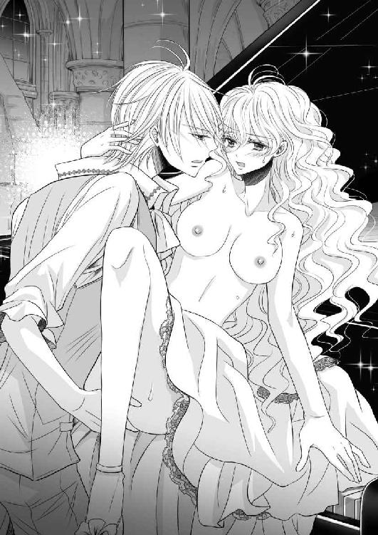
たとえクロエに、それが姫としてどんなに恥ずかしいことであるかと叱責されようが、今のオデットにはまったく構わない。
それだけでは足りないのだと、下肢が疼いてたまらないのだ。
早く、早く自分を穿って欲しい。全てを満たして欲しい。
既に病の域である。
セドリックにしか治せない厄介な病に、オデットは罹ってしまった。
オデットがそのような状態になるまで、セドリックも我慢していたのであろうか。
快感からなんとか意識を引き戻したオデットの瞳に、彼の苦しげに歪められた顔が映る。
そして乞われるがまま、セドリックは自身のバックルに手をかけた。
かちゃかちゃという金属音に、いっそう期待が強まるが、下ろされたズボンから現れたセドリックのモノのあまりの大きさに、オデットはこくりと喉を鳴らしてしまう。
さらにセドリックのそれは既に隆起しており、はちきれんばかりの膨らみを持っていたのだ。
「オデット......」
身体が寄せられ、そっと耳元で名をささやかれた瞬間、オデットの濡れそぼった秘所に、セドリックの熱源があてがわれた。
痛みを覚悟してきゅっとしがみつくオデットを、いとおしげに支えながら、セドリックが媚肉を割って押し入ってくる。
「ん、あっ......あああっ......!!」
オデットのまぶたの裏では、火花が散っていた。
あまりの圧迫感に呼吸すらままならなくなるも、セドリックからの愛ゆえに開かれた身体がそうさせるのか、限界まで引き伸ばされて受け入れているというのに、痛みはまるでない。
「ひっ......あぅ......ああっ......！」
代わりに、どうしようもない快感ばかりが与えられ、オデットの息は余計に乱されるばかりだ。
好きな人とつながるという行為が、こんなにも充足的なことだとは思わなかった。
「はあ、はっ......ふ......うぅ......んっ......」
セドリックの動きに合わせ、自然と喘ぎが漏れ出てしまう。
セドリックは片手でオデットの足を持ち上げ、反対の手でピアノに手をかけながら、腰を動かしていた。
最初は痛かった背中にあたる硬質な感触も、ほてったオデットにとっては突き上げられるたびに、快感を増す材料にしかならなかった。
何度も何度も、ふたりが交わるごとに、ピアノからは重厚な旋律が紡がれていく。
「セドリックっ......んあ......はぁ......あ、愛して、る？」
セドリックの先端でいちばん敏感な箇所をすられ、つい問わずにはいられなくなった。
「っ......オデット、はあ、はあ......あ、愛して、ます......！」
やや間を置いてからセドリックは答え、さらにオデットを揺さぶり続けた。
オデットの顔には、激しく動くセドリックの汗がいく粒も、彼の顎を伝って落ちてきていた。
その水滴に、あまりの情欲をそそられ、オデットは両手で彼の頬を挟んで引き寄せる。
自らセドリックに口づけると、瞬間、下肢ではセドリックのモノがどくりと脈打った。
「はあ......あ......オ、オデット......もう、僕はっ......」
「ええ......いいのっ......いいのよ......お願い、このまま......っ」
オデットの懇願に、困ったように眉を下げたセドリック。
これだけは聞き入れられないと、セドリックは即座に身体を引こうとしたが、しかし彼をどこにも行かせないようにするためか、オデットの腕と足が、腰に回されてしまう。
「ねえっ......わ、私っ......あなた、を......感じたい、の......！」
オデットも限界だった。
やがて絶頂を迎えたオデットの中は、セドリックを呑み込むように、きゅうっと蠕動運動を繰り返す。
その刺激に、ついにこらえきれなくなったセドリックが、そのまま熱を解放する。
身体の内側が愛する人の白濁に満たされ、オデットはその心地よい感覚に身を任せると、セドリックを抱き締めながら、うっとりと瞳を閉じた。
ふたりが奏でる協奏曲──これが、禁断の初恋の始まりだった。
第三楽章 ふたりだけの協奏曲
翌朝、いつもより早く迎えにきたクロエにつれられて、オデットは城に戻った。
昨夜のことを何も咎められず、ほっと息を吐くのも束の間のこと、コルセットをぎゅうぎゅうに締め上げられて、オデットは呼吸ができなくなるかと思った。
いつもは身軽な綿素材の装飾が少ないドレスで済ませてしまうオデットが、それほど念入りに仕度を整えなければならない理由はひとつ、今日は嫁ぎ先となるナゼール国での演奏会が控えているからにほかならない。
睫毛の長いヘーゼルの双眸が映える、落ち着いた薄桃色のドレスは、いく層にもなるレースのふちが可愛らしいが、胸元が大きく開いていて、谷間を強調させたデザインになっている。
それが恥ずかしかったが、本来ならこれが儀礼用の正装なのだ。
髪はアップスタイルに結い上げられ、数々の宝飾と共に、宝冠が乗せられた。
鏡の前では、あっという間に王女然としたオデットが仕上がっていく。
羽根飾りをあしらったマントを羽織ったオデットは、日が昇る頃にはもう外出用の馬車に乗せられており、一行は一路、ナゼール国への道を辿っていた。
農地が多いサン・マロ国の領土をすぎると、色彩豊かなナゼール国の発展した街並みが垣間見られるようになる。
山間部にあるサン・マロ国とは違い、ナゼール国は海に面していることから、他大陸との貿易が盛んに行われ、必然的に国も、三国間ではいちばん栄えるようになった。
石畳で舗装された大通りには多くの店が建ち並び、たくさんの人々が行き交う。
カーテンの隙間から外をうかがっていたオデットの目には、物珍しそうに行列を見送るナゼール国民の姿が映った。
今日の演奏会は無論のこと国民も知るところにあり、次期王妃を歓迎するよう手を振ってくれる者もひとりやふたりではなく、そのたびにオデットはそっと手を振り返し、この国でならなんとかやっていけるかもしれないと、胸のうちで思うのだった。
やがて高い建物が目立つようになると、王宮の尖塔が視界に入るようになった。あれが今夜、宿泊する予定のナゼール城である。
その手前には時計塔があった。演奏会が催される、ナゼール国の大聖堂だ。
左右で形の違う尖塔に、外壁には気品ある彫刻がずらりと続くビエンヌ大聖堂は、サン・マロ国のディエップ大聖堂に負けないぐらい、荘厳なたたずまいをしている。
馬車はするするとそちらへ向かうと、にぎわいに満ちた正門の前で停まった。
従者に聞けば、この日を待ち望んでいた数千人もの民衆が集まっているのだという。観客席は即日に完売してしまったが、せめて漏れ出る音色でも聞きたいとのことらしい。
大聖堂に集結していたナゼール国の騎士団に守られながらオデットがキャビンから現れると、途端に歓声が浴びせかけられた。
紅い絨毯を踏み締め、群衆に手を振ると、ひときわ大きな歓声が返ってくる。
どうやらナゼール国でのオデットの人気は、かなり高いようだ。
このミュジーク大陸では国家間、人種や性別、そして貴賤貧富に関わらず、音楽の才能がある者ほど好まれる傾向にあった。
稀代の天才音楽家である第二王子セドリックばかりが注目されていることを思うと、パトリックがあのように歪んだ性格になってしまったのも同情できよう。
オデットの場合はさらに、噂に名高いピアノの名手というだけではなく、聡明な美姫なのだから、当然ともいうべき人々の反応だった。
しかし、そこまで自分の演奏を楽しみにしている者たちがいてくれてうれしい反面、オデットは複雑な境地を隠せない。
なぜなら今日の演奏の仕方は、もう決めている。たとえ人々が求めているものではなくとも、いまさら変えることなど、とても考えられなかったからだ。
騎士団がそろって剣を掲げる中、オデットは従者につれられて、聖堂の入り口へと向かう。
神聖な儀式の途中でもあるため、まだ正式な婚約者ではないパトリックは迎えにこない。
先にサン・マロ国を発った彼は今頃、既に貴賓席に腰を落ち着けていることだろう。
この選択がどのような結果になるかはわからないが、後悔だけはしたくなかった。
後ろからはぞくぞくと馬車が到着し、側仕えのクロエだけでなくセドリックも姿を見せたが、オデットはなるべくそちらを振り返らないよう、頭の中でただ、今日の演目を繰り返しイメージしていた。
聖堂内は、今か今かと演奏を待つ人々のざわめきに満ちていた。
陽光に照らし出されたステンドグラスが、いくつもの窓から鮮やかな模様を浮かび上がらせ、ホール全体を輝かせる。
一般客席は満員、貴賓席には王侯貴族が占め、最前列にはナゼール国王夫妻とパトリック、そしてセドリックが共に並ぶ。
舞台袖に立つオデットはマントを脱ぎ、厳かに控えるクロエに渡した。
そして呼吸を整えてから、いよいよ足を踏み出す。
あれから一カ月、今日という日のために重ねてきた練習だった。
感慨深げに現れたオデットの姿に、客席からわっと歓声が上がる。
オデットはドレスの裾をつまんで華麗に礼をしてみせると、グランドピアノの前に腰かけた。
瞬間、しんと堂内が静まる。
華美な彫刻が施された円柱群がそびえるホールは吹き抜けになっており、アーチ状になった天井に高く続いている。
頂点に描かれた天使の絵までがじっと舞台を見下ろす中で、オデットはすっと腕を上げ、磨き抜かれた鍵盤に手を置いた。
そして、一音目を叩く。
そのあとは無心に、ただ弾き続けた。
オデットの語るメロディアスな『愛の夢』が聖堂内を包み込み、そこに花を添えるよう、ステンドグラスから射し込む光がきらきらと辺りに舞い落ちる。
観客の反応は、オデットにはうかがえない。
オデットの気持ちは音にあり、全ての器官を遮断して、一心不乱に指を動かしていた。
和音の連打が心地よく、激しく髪を波打たせながら速度を上げていく。
細やかな音符の連続もミスタッチなく弾いた。
左手と右手で交互に主旋律が変わる難所も軽く越えた。
繊細なラストを経て、演奏は静かに幕を閉じた。
詰めていた息を吐き出した時、割れんばかりの拍手が、オデットの鼓膜を震わせる。
未だ曲の余韻が残る堂内で、観客たちは総立ちになっていた。
次期王妃への賛辞が、次々に舞台に投げ入れられる。
彼らにとっては、それほどまでに胸を打つ演奏だったのだろう。
なにせ、初めに文句を付け、講師まで寄越したパトリックでさえ艶然と微笑み、大きく手を叩いているのだから。
オデットは冷静に腰を上げ、淡々と挨拶を済ませようとした。
しかし客席を向いた時、反射的にセドリックの顔を捜してしまう。
中性的に整った顔立ちは、すぐに見つかった。
セドリックだけは拍手をしておらず、愕然と目をみはったままだ。
それも当然だろうと、オデットは胸中で苦笑していた。
彼以外、ここにいる誰も気づくはずはない──たゆまぬ一途な愛を歌ったオデットの音色が、セドリックへ向けた調べだったことなど。
つまりオデットは、昨夜とまったく同じ演奏をして、セドリックへの愛を誓ったのである。
セドリックを想い、セドリックのために、セドリックに向けた『愛の夢』。
これが本当の、心を乗せた曲。
満足そうなパトリックの隣で、国王夫妻は目に浮かんだ涙を拭っている。
誰もが一様に、その物語は婚約者となるパトリック・ラ・ファイエットへ向けて歌われたものだと信じて疑わなかった。
オデットへの拍手が、いつまでも鳴りやむことなく続く。
そんな完璧な音程と音量、そして心を込めた演奏を披露したオデットは、ふたりの愛が認められたような心地になった。
そしてセドリックとだけ共有できる秘密を持っていることを誇らしく思いながら、にっこりと笑って膝を折ったのだった。
控え室でクロエに髪を結い直してもらっていると、さっそくパトリックが威風堂々と現れた。
驚くことに、セドリックもそれに続いてきたので、オデットは動揺しそうになったが、なんとか顔に出さないよう寸前でこらえた。
「......女性の控え室よ。せめてノックぐらい、するものではないからしら？」
精一杯の虚勢を張って威嚇するも、上機嫌のパトリックにはまったくこたえない。
「やればできるではないか」
パトリックは不敵に笑むと、なれなれしくもオデットの肩に腕を回してきた。
「素晴らしい花嫁がくると、陛下もたいそうお喜びだぞ」
吐息がかかるぐらいの距離で言われ、オデットの頬が引きつる。
「ありがとう」
あなたのために弾いた曲ではない──そう言いたくてたまらなくて、オデットは無愛想にも、冷たくその手を払いのけた。
気を利かせて傍を離れていたクロエを手招きして呼び戻し、作業を再開させる。
パトリックは、そんなオデットの態度を、あくまで表面的なものとしてしか受け取っていないのだろう。
ピアノで本音を奏でられたと思い込んでいる彼は、よそよそしい未来の花嫁の態度をさして気にしたふうもなく、今度はドア付近にたたずんだままのセドリックをねぎらった。
「さすがだな、セドリック」
もう弟へのわだかまりもなくなったのだろうか、彼はうれしそうに目を細めている。
「お前はやはり天才だ。オデットの音を、見事に矯正してくれた」
どうやらパトリックは、今回の演奏の出来が、セドリックにあると信じているらしい。
あながち間違いではないが、なんておめでたい思考だと、オデットは思う。
自らが講師として呼び寄せたのだから当然かもしれないが、胸中は複雑だった。
そして、同じく罪悪感を覚えていたのは、オデットだけではなかったようだ。
「いえ......僕は──」
セドリックは言葉に詰まり、兄の視線から逃れるよう顔を背けていた。
オデットもクロエに宝飾の位置を直されながら、そっとうつむいてしまう。
互いの脳裏をよぎっていたのは先日の、月光に浮かび上がる背徳の夜──。
「何を謙遜することがある？」
そんな微妙に淀んだ空気を一蹴させるように、パトリックがはっはっはと、豪快な笑い声を上げた。
「音で愛を伝えられるというのは、こんなにも心地がよいものなのだな！」
「よかったですね、パトリック殿下」
パトリック以外の王族の誰もが無反応なためか、侍女のクロエが賛同に口を開く。
たった今、その存在に気づいたかのように、パトリックがクロエを見やった。
「おお、貴様もいい仕事をしているらしいな。婚儀が済んだ際は、オデットと共にナゼールに来るがよい」
「光栄でございます」
既に王としての片鱗をうかがわせるパトリックに、クロエは笑みを浮かべながら頭を下げ、うやうやしく拝命した。
彼女のそれは社交辞令などではなく、〝謹んでお受けする〟という意味だ。
そもそも階級が下のものは、王族を前に、嘘を吐くことなど許されない。
オデットは驚きに目をみはったが、彼女が生きる年数と同じ十八年間、苦楽を共にしてきたのだから、オデット付きの侍女である彼女が、最後まで自分に付いていくことを望む気持ちもわかるような気がした。
しかし祖国であるサン・マロ国を離れる決断が、そんなにも早いとは思わなかった。
サン・マロ国は、クロエを育ててくれたオデットの父が統治する国であるのだから、これまでの恩義を呆気なく放り出されたような心地がして、なんだか落ち着かない。
「セドリック、お前も本当にいい仕事をしてくれた」
相変わらず浮かれたままのパトリックが、再びセドリックに向き直った。
「長い間、ご苦労だった。これで解任してやれるぞ」
「えっ──」
つい声を発してしまったのは、オデットであった。
セドリックもまた、はっとして兄を見返した。
オデットが身体全体で強く反応したためか、髪結いを続けるクロエに「動かないでください」とたしなめられてしまう。
けれど、黙ってなどいられなかった。
「ま、待って......私、まだ......」
慎重に紡がれた言葉は尻すぼみになり、その先が続かない。
パトリックやクロエに、ふたりの関係を悟られる事態だけは避けたかったからだ。
音で伝えることは簡単なのにと、オデットがひそかに唇をかむ。
「オデット、この前は悪かった」
甘やかに告げられ、オデットは唖然として顔を上げた。
パトリックの面差しには、安心させるような、柔らかな微笑が刻まれていた。
「もう、じゅうぶんだよ」
「っ......!!」
いつにない優しい言葉をかけられ、オデットは戸惑いを隠せない。
〝この前〟とはおそらく、強引に唇を奪った日のことだろう。
滅多に自分の非を認めない彼にしては、これは大変、珍しいことであった。
オデットの自分への愛を確信しているパトリックはもう、微塵の疑いも抱いていないらしい。それどころか彼は今、自信に満ち溢れている。
セドリックとの秘密がばれていないことには安堵したが、こんなにも早くセドリックと離れ離れになるなどとは、思ってもいなかった。
オデットが苦渋に顔を染めていると、セドリックもまた食い下がってくれる。
「兄さん、オデットはまだ──」
練習の必要がある、そう続けてくれるに違いない。
オデットの胸は自然、きゅっと痛んだ。
セドリックも同じ気持ちでいてくれていることがわかっただけで、ほかのことはどうでもよくなってしまうから不思議である。
しかし現状に満足したパトリックが、セドリックの言葉を最後まで聞くことはなかった。
「今宵の夕食会では、お前たちの功績を称え、シェフが腕を振るってくれるそうだ」
パトリックはマントを翻すと、「楽しみにしていろよ」と言い置いて、足早にドアに向かう。
素晴らしい演奏のあとの夕食会に、主役は欠かせない。言葉通り、オデットが考えもしないような、ナゼール式の準備があるのだろう。
嫁ぎ先なのだから仕方がないが、セドリックを含むラ・ファイエット家が一堂に会した夕食会を想像するだけで、オデットは気が重くなった。
きっと、誰もがパトリックとオデットの婚姻について、語り合うに決まっている。セドリックだけには聞かれたくない話題が続くに違いない。
ふと、とうのセドリックをうかがうと、彼はオデットと視線を合わせはしないものの、名残惜しげにその場に踏み留まっていた。
しかしパトリックがいまさらのように「淑女の部屋だぞ」と、自分のことは棚に上げ、引きずるようにして彼を連れ出したので、兄弟は慌ただしく部屋からいなくなった。
パトリックの紳士的な行動に呆気に取られ、ただ瞳をまばたくしかないオデット。
そんなオデットに、何も知らないクロエが、後ろから嬉々として言った。
「嵐のような方ですが、姫様への愛が伝わりました。本当にようございましたね」
「.........」
何も言い返すことができないオデットの気分は、一直線に憂鬱へと沈んでいった。
ナゼール城での夕食会は、パトリックが予言していた通り、盛大に催された。
パトリックとセドリックの実父であるナゼール王は上機嫌で、もうすぐ妻を迎える長男パトリックと、いくどとなく酒を酌み交わし、王妃から寵姫、従者に至るまで飲みすぎを心配されてしまう始末であった。
セドリックは酒をたしなまないためか、時おり食事に口を付ける程度で、ただ楽しそうなラファ家の面々の聞き役となっている。
クラッカーにチーズなどの様々な具材を乗せたオードブル、薄く切りそろえられたローストビーフに山盛りの羊肉ステーキのメイン、ゆでた卵とポテト、カリフラワー、ほうれん草、いんげん豆などが合わさったサラダ、鳥と野菜のシチューにかぼちゃをくり抜いたポタージュスープなど、豪華な料理の数々が並び、デザートにも定番のパイやケーキだけでなく、色とりどりのフルーツ皿がところ狭しと置かれ、目移りしてしまうような華やかなテーブルには、最後まで驚かされることとなった。
セドリックと引き離されることばかり考えていたオデットはしかし、せっかくのごちそうにも関わらず、酒は無論のこと、そのほとんどを喉に通すことができなかった。
セドリックとも、一方的にオデットがそっと様子をうかがうだけで、一度も目を合わせられなかった。
オデットの方が、視線が絡みそうになるたびに、不自然に顔をそらしてしまうのだ。
傍に控えるクロエが、ここでも主のために何事かと言い繕ってくれていたが、あれだけの演奏を披露したオデットを責める者は誰もいない。
それどころか、明らかに挙動不審なオデットはむしろ、皆に心配されてしまった。
複雑な気持ちを抱えたまま、オデットはひとり、早々にあてがわれた客間へと引っ込むことになった。
大事な次期王妃の体調を崩させるわけにはいかないと、国王夫妻がそろって下がるよう促したのだ。
オデットにはまだ、最後の演奏会が残っているのだからと。
シェルブール教会の総本山、エクス・アン・プロヴァンス大聖堂にて最後の演奏を終えた瞬間、オデットは正式にパトリックの婚約者となる。この大陸では、結婚したことと同義であった。
いよいよセドリックと別れなければならない──そう考えると、心が乱された。
せめてあと一カ月、いや一週間でもいい。
結局、昨夜の一日しか一緒にいることはできなかったと、オデットは肩を落としながら、ふらふらとベッドまで歩いていく。
長旅のあとの渾身の演奏に加え、慣れない城と、今日はひどく疲れていたのだ。
客間には当然のように、アップライトのピアノが置かれていたが、今夜はとても弾く気分にはなれそうにない。
主賓が先に退出する申し訳なさから、クロエをナゼール城の手伝いに残してきたので、オデットはひとりで着替えを済ますと、ベッドにどさりと横たわった。
クッションに顔をうずめ、ようやくまどろんできた瞳を閉じた時、突如として無遠慮なノックの音が部屋に響く。
オデットは、ぱちりと目を開き、大仰に嘆息した。
休養させろと一国の主自らが申し出てくれたのに、わざわざ訪ねてこられる者など、この城にはひとりしかいないのだ。
オデットは重い身体にむち打って起き上がると、不審もあらわにドアを開けた。
するとそこにはやはり、パトリックの姿があった。
「なんの用？」
オデットが冷たく言い放つと、パトリックはいつものように、不敵に口角を上げて肩をすくめてみせる。
それでも異様に鋭い光を湛えた目だけは笑っていないことに、オデットはすぐに気づいた。
「お前はずっとつれないな」
戸惑うオデットに構うことなく、パトリックはそれだけ告げて、当たり前のように部屋に入ってきた。
オデットは静かにドアを閉めたが、念のため鍵はかけないでおく。
そして仕方なく入れてしまう形となったが、疲れていることを理由に早く帰ってもらおうと、胸中では算段していた。
しかし今夜のパトリックの様子は、明らかに機嫌のよかった昼間とは違っていた。
「明朝、シェルブールに発つぞ」
なぜだか瞳に焦燥の色を浮かべ、パトリックがオデットに有無を言わさぬ命令口調を使う。
ほのかに赤らんだ顔から、酒に酔っているのだろうことが想像されたが、それだけではないような様子に、オデットは怯えを隠せない。まるで絶え間なく湧き上がる怒りか何かを、必死で押さえ込んでいる、そんな語気に感じられたからだ。
「明日の朝ですって？ そんな、急に......」
それよりも自分に許された期限が定められてしまったことに、オデットはかなりの落胆を覚えた。
「明日だと何か、問題でもあるというのか？」
底冷えした声で、パトリックが逆に問うてくる。その顔に、笑みはとうに湛えられていない。
細められたアンバーの瞳がオデットを捕らえ、後ろに流されただけの長い黒髪は今や、全てを呑み込む漆黒の闇のごとく暗い影を落としている。
空気までもが痛いぐらいに張り詰め、オデットは思わずあとずさり、慌てて首を横に振った。
「いいえ、別に──」
「あれだけの愛を語っておいてなお、俺への気持ちをごまかそうというのか？」
パトリックが近づき、獲物を前にするような、攻撃的な目をオデットに向けた。
どうして責められているのかわからずに、オデットは困惑して押し黙る。
もしかして、曲に込めた相手がセドリックだということに、気づかれてしまったのか──いや、それはないと、即座に自らの考えを否定した。
解釈した曲を違うものへ変えるためにはもう一度、同じ曲を聴く必要があるはずだからだ。
それに、自分に宛てたものではないと思っているのならば、パトリックはとうにそちらを問い詰めてきていることだろう。
きっとオデットが、明朝のシェルブール行きを拒否するような反応をしたから、気に入らないだけなのだ。
ならば適当に話を合わせておこうと思い至った時、パトリックが唐突に距離を詰めてきた。
「な、何......？」
オデットは胸騒ぎに襲われ、さらに後ろへ下がった。しかしすぐに、冷たい壁の感触が背中に当たってしまう。
いつの間にかオデットはパトリックにより、部屋の隅に追い込まれていた。
どんっという強い音がして身をすくませると、パトリックがオデットを閉じ込めるように、壁に両手を突いたところであった。
パトリックのひどく熱っぽい眼差しに、オデットは恐怖からひっと息を呑む。
鼻孔を突くむせ返るような香りは、香料と酒が入り混じっている。セドリックとどこか似ていて全然違う匂いが、オデットにはことさら不快に感じられた。
「やめて。話なら、ちゃんと座って聞くわ」
隣にあるカウチに逃れようと、そろりと手を伸ばすと、華奢なその腕がつかまれた。
「い、痛いっ」
衝撃に目を伏せたオデットに、パトリックが無理やり身体を寄せてくる。
「や──!?」
このままでは再びキスをされてしまうと思い、オデットは必死で顔を背けるも、パトリックの腕の中で自由になることなど到底、不可能だった。
「んっ......ふぅ......！」
唇が塞がれ、オデットはもがく。
パトリックは、つかんだままの腕をねじり上げるようにしてオデットを抱え込むと、執拗に口づけ、舌先で強引にオデットの歯列を割ろうとした。
酒に焼かれた吐息が、オデットの柔らかな唇に熱く吹きかけられる。
「や、やめっ......」
そう抗議の言葉を紡ごうとしたのが間違いだった。
オデットが口を開いた瞬間、パトリックの厚い舌が差し込まれてしまったのだ。
唾液が絡む音が室内に響き、その羞恥と悲しさから、オデットの瞳にはやがて涙が溜まってくる。
それを見たパトリックが、耳元であざけるようにささやいた。
「俺とのキスでは毎度、泣くわけか」
「どういう──」
「セドリックに抱かれたのだろう？」
「なっ......」
言葉にならなかった。
なぜキスから、そんな話になるのかもわからない。
しかし向かい合ったパトリックの双眸は、こうこうと怒りの灯火を湛え、静かな憤りをもってオデットを見つめ続けている。
「そ、そんなこと、ありえないわ」
「嘘を吐くな」
とっさに否定するも、パトリックはまったく信じようとしない。
しかし今、セドリックとの関係を知られるわけにはいかなかった。何がなんでも隠し通さなければ、多くの人たちに迷惑がかかるだけでなく、セドリックにまで被害が及んでしまう。それだけはどうしても避けたかった。
「嘘じゃないわ」
だからオデットは、泣きそうになりながら、最後まで嘘を吐き通すことに決めた。
瞬間、パトリックはその瞳に失望の色を宿したが、それもわずかのことだった。
すぐにまた、オデットに激しく口づけてくる。
より深く、頬や顎の裏、歯茎まで、パトリックは自らの舌で舐め上げる。
「う......ぐっ......」
抗おうとする手が自由になったと思えば、夜着の胸元のリボンがするすると解かれていく感覚に襲われた。身体が硬直し、声が強張る。
「な、何をするの......!?」
「嘘ではないことを、俺が自ら確かめてやるのだ」
「っ......!?」
素肌があらわになり、ひんやりとした夜の空気が総毛立たせる。
パトリックはためらうことなく、オデットの胸のふくらみを揉んだ。
「あっ......い、いやぁ......」
「あの演奏がもし、セドリックに向けられたものだとしたら......」
敏感な突起に触れられ、オデットの身体が覚えずびくんと弓なりにそってしまう。
「こんなに不愉快なことは、人生で二度とないだろうな」
自嘲気味に乾いた笑みを浮かべるパトリックの反対の手が、オデットのネグリジェの裾をまくり上げた。
必死で太ももを合わせようとするも、パトリックの足がそれを阻む。
するりと太い指先が秘所を探り、しっとりと濡れたひだをなぞっていく。
「ほう、純潔の乙女はこんなにも濡らすものか」
卑猥なパトリックの台詞に、オデットは羞恥に顔を染めた。
「お、お願いっ、そこは──やめてっ......こ、婚姻前に──」
「明日には俺のものになるのだ。今日も明日も、たいして変わらん」
絶望的な言葉に、ざっと血の気が引いていく。
その間にもパトリックの無骨な手が、どんどん奥に這わされ、花芯をこねられ続けた。
「い、やっ......んぁ......は......うう......っ」
パトリックの慣れた指づかいに、オデットはかたかたと震え、全身を強張らせた。
このままおとなしく、パトリックに抱かれるしかないのか。
そう思うと、オデットのヘーゼルの双眸からは、涙が次から次へとこぼれ落ちていく。
自分への屈辱的な行為を、もう見たくなくて、反射的にぎゅっと目を閉じた。
「オデット。お前は何をされるかわかっているから、見られないのだろう？」
「そ、そういうわけじゃ......ああっ......！」
うそぶくパトリックによって、ついに蜜壺は指で暴かれ、角度をもって抽送される。
知らない指づかいだからであろうか、寒気に似た感覚が、ぞっと背筋を駆け抜ける。
「あ......い、入れない、でっ......ああっ」
パトリックが聞き届けてくれるはずもなく、指の本数が二本、三本と増やされた。
脳内では、今日も明日もたいして変わらないと言った彼の言葉が繰り返され、オデットは、自分には決定権どころか、元から猶予など残されていなかったことを悟った。
「うっ......うぅ......ふっ......はあ──」
だから覚悟を決めて力を抜くと、ふっとパトリックが笑ったような気がした。
機嫌が直ったのであろうか。痛くされるのは嫌だったから、それならそれでよかった。
パトリックは片手でオデットの身体を支えながら、口では赤く尖った乳頭をしごき、反対の手では秘部への愛撫を繰り返す。
「あぅ......ん......ひっく......くぅ」
オデットの喘ぎは、泣き声と区別がつかないほどに濡れていた。
パトリックは明らかに酔っている。今宵の盛大な宴で、酒を飲みすぎたのだろう。
だから真相はともかく、オデットがセドリックに抱かれているなどと妄想を用いてまで、勢いに任せ、オデットを自分のものにしようとしているに違いない。
それを拒絶できるほど、心身共にオデットは強くないし、何より立場がある。
オデットは、初めてがセドリックであったことを、必死に思い返した。
今まさに、さらされている行為が全て、セドリックの手によるものだと頭の中に置き換えて、オデットはこの試練を乗り越えようとしていた。
そしていよいよ、パトリックが既に膨張した自身を出そうとバックルに手をかけた時、唐突なノックの音が、密着するふたりの顔をはっと上げさせた。
「誰だか尋ねろ」
苛立たしげにパトリックに命じられ、オデットは震える声を懸命に張った。
「ど、どなた......!?」
おそらくクロエだろうと、オデットもパトリックも思っていた。「下がれ」という一言で済む相手であれば、何も問題がないとパトリックは考えていたのだろう。
しかしドアの向こうからかかったのは、実に気づかわしげな声だった。
「オデット、僕です。大丈夫ですか？」
セドリックだ。彼はどうやら、夕食時のことを心配して訪ねてきてくれたようだ。
意外な事態に、パトリックは顔をしかめた。
そして反対にぱっと顔を輝かせたオデットを、パトリックの目は見逃さなかった。
パトリックの手がまたいやらしくうごめき、オデットの蜜はとろりと太ももにまで伝っていくことになる。
「いやっ」
「オデット？ 誰かと一緒なのですか？」
身体が勝手に反応してしまうことへの嫌悪感から、つい悲鳴を上げたことで、ドアの向こうのセドリックは異変に気づいたらしい。
するとパトリックは振りきれたように意地悪く笑い、くつくつと喉を鳴らした。
「はっはっは、聞かせてやれ。お前がどういう状況かわかれば、あいつもいいかげんに諦めるだろうよ」
「そんな──」
パトリックに陵辱されている自分など、とてもセドリックには見せられない。
「セ、セドリック......大丈夫、大丈夫だから......あ！」
首筋に吸い付かれ、オデットが喘ぐ。
わざと声が高く上がるよう、パトリックが歯を立ててきたのだ。
つきりとした痛みに、ざわざわと肌が粟立ち、逃げ出したくて仕方がなくなった。
「オデット！ 入りますよ」
がちゃがちゃと、ドアノブが動かされる。
当然、パトリックは鍵がかかっているものと思い込んでいたのだったが、最初に用心して開けておいたオデットの機転が、この窮地を救うことになった。
「オデット......？ なっ──兄さん!!」
予想外の光景に愕然と目を見開くセドリックだったが、すぐに兄を咎め、オデットを助けようと、つかつかと足早に部屋に入ってくる。
パトリックがちっと舌打ちして、オデットから離れた。
瞬間、オデットの腰はくだけ、その場にぺたりと座り込んでしまう。
「貴様......夜とぎを邪魔するとはいったい、何のつもりだ？」
怒りをはらんだパトリックの声音に驚き、オデットが視線を上げると、目の前ではパトリックとセドリックが間近で対峙していた。
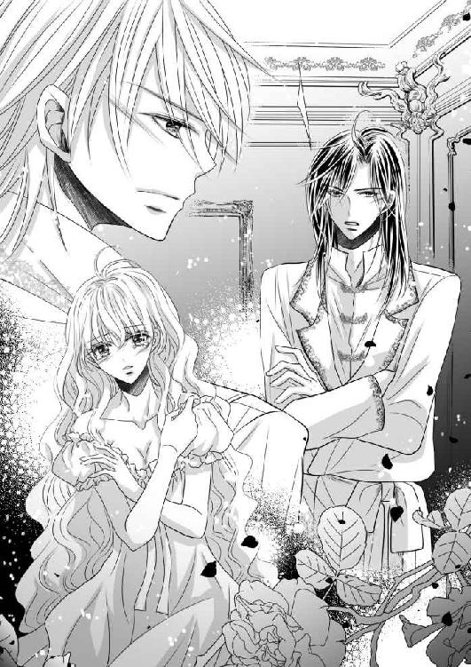
オデットからは、セドリックの後ろ姿しか見えない。それは彼が即座に回り込み、パトリックから守ろうとしてくれた証だった。
だからうれしくて、オデットは乱れた衣服をかき合わせながら、くしゃりと顔を歪めた。
セドリックの声も、今までで聞いたことがないぐらい、厳しいものであった。
「別に、何のつもりもありません。日課の宿題をオデットがやっていなかったので、心配して見にきただけです」
「宿題だと？」
パトリックが怪訝と眉をひそめた。
オデットも初耳だったが、セドリックには何か考えがあってのことだろうと思い、黙ってやり取りを見守っていた。
セドリックが毅然と言う。
「この時間はいつも、ハノンの練習をさせるようにしています」
「あれだけの演奏だ。もう練習など必要あるまい」
言い訳など聞きたくないとばかりに手を振ったパトリックにしかし、珍しくもセドリックが皮肉った。
「あれだけの演奏をするためには、練習がいっときも欠かせないことを、兄さんはご存知ないのでしょう」
そこには、途中でピアノを投げたのだから──ということが暗に示唆されており、パトリックの顔はみるみるうちに赤く染まっていく。
セドリックはパトリックが怒り出さないうちに、とどめを刺しにかかった。
「ベランジェ教皇の前で、兄さんに恥を掻かせるわけにはいきません」
そう言われてしまえば、講師に任命した本人であるパトリックは、首肯するしかない。言葉巧みなセドリックに誘導された感は拭えないが、ここは譲るしかないだろう。
「......わかった」
パトリックはつまらなさそうに鼻を鳴らすと、不愉快な場所から一刻も早く立ち去りたいかのように、さっさと部屋から出ていってしまう。
しかし去り際に告げられた、パトリックからセドリックへの言葉が、オデットの頭から離れない。
彼は確かに、セドリックに向かって次のように言ったのだった。
──知らないと思うなよ？
パトリックはなぜか、オデットとセドリックの秘密の関係に行き着いている。
酒に酔った末の妄想だと思っていたが、どうやら根拠あってのことらしい。
おおげさに騒ぎ立てないのは、自らの権威を失墜させることにつながるからだ。
次期国王としてのプライドがあるからこそ、自分の正妃が結婚前に純潔を散らされていたと言えるわけがない。それも実の弟が相手など、屈辱以外の何ものでもないだろう。
「............」
オデットとセドリックは互いに目を合わせ、黙り込むしかなかった。
この事実が、これからのふたりの人生を大きく左右するだろうことは、明白だったからだ。
セドリックはひとまず、部屋の隅に座り込んだままのオデットを横抱きにして、ベッドまでかかえると、落ち着かせるようリネンにくるんで介抱した。
「どこも痛くはありませんか？」
こくりと従順にうなずくオデットを、悲しそうに見つめるセドリック。
夜が更けてなお、セドリックはオデットの部屋にいた。
最初は思うところがあったのだろう、パトリックに続いて即座に出ていこうとしたのだが、オデットが頑なに引き留めたのだ。
あちこちをなで回されたあと、ひとりにされるなんて、とても考えられなかった。
「セドリック......」
手を伸ばすと、安心させるように差し出された長い指先が絡められた。その体温に、冷えた胸の奥までが温められるような気がした。
「私、嫌だわ。明日、演奏してしまったら、もうあなたに会えない」
今夜のことが引き金となり、オデットの心は完全に傾いてしまっていた。
王女の立場も、国家的事情も、何もかも、オデットにはどうでもいいことだった。
今なら地位も名誉も財産も、引き替えだと言われればピアノだって、差し出せる。
セドリックはきつく眉根を寄せ、諭す口調でつぶやいた。
「ナゼールに嫁ぐ限り、会えないことはありません」
「そうじゃないわ！」
オデットはリネンをはねのけ、ベッドに乗ることなく向かいで膝を立てているセドリックに詰め寄った。
「パトリックに抱かれた私がっ......あなたに顔向けできるとでも思っているの!?」
それが最大の理由だった。
ナゼール国で暮らすようになれば、セドリックと会う機会は格段に増えるであろう。
けれど彼を苦々しく思っているパトリックはきっと、ことあるごとに関係を見せつけようとするに違いない。
そんなこと、とても耐えられそうになかった。
当初は結婚後、セドリックとの関係を清算し、王妃として毅然とした態度が取れるとさえ思っていたオデットは、くしくもパトリックに身体を開かされそうになったことによって、どれだけ自分がセドリックを愛しているか自覚してしまったのだ。
セドリックが黙したままだったので、オデットは追い込むように言葉を続けた。
「パトリックは、私が既に純潔を散らしていることを知っているわ......それがなぜかはわからないけれど、そんなことは関係ないの。それよりも彼が王となった時、その権威を利用して、いつだってあなたの処遇を決められてしまう方が問題なのよ」
オデットが懸念している通り、それはあながちないとは言いきれない現実だった。
現ナゼール国王は、息子が婚儀を済ませたのち、王位を退く意向を示している。
パトリックは、王座に就いた瞬間からセドリックを左遷させることができるのだ。何かとそれっぽい理由を並べ立て、オデットの目の届かない場所に送れるわけである。
「そんなこと──」
「あるわ！」
口ごもるセドリックに、オデットは強く言葉を被せた。
「セドリックが王の辞令を拒否したら、今度こそ純潔の件を持ち出してくる可能性だってある。第二王子といえども、王妃をかどわかした罪とでも言われるに決まっているわ......そしたら今度は、流刑されてしまうかもしれないのよ!?」
セドリックは答えない。それが正しく、兄の性質を物語っていたからだろう。
「私の権限だけでは、あなたを救ってあげられないわ」
相手がパトリックである限り、オデットは二度と、初恋の相手を見ることはない。
それがわかったからこそ余計に、セドリックをなんとかして助けたいという想いに駆られていた。
そしてオデットはついに、心のうちに秘めていた提案を口にすることになった。
「逃げましょう、セドリック」
セドリックがオッドアイの双眸を大きく開き、真顔のオデットをまじまじと見つめた。
もし反対されてしまっても、オデットの決意はもう揺らがない。
このまま無理やりパトリックと結婚させられるより、どんな苦難が待ち受けていようとも、愛するセドリックと共にいられた方が、オデットには幸せだったからだ。
「逃げて、逃げてっ......ふたりだけで、ずっと──」
感極まって、ヘーゼルの瞳には覚えず涙が浮かぶ。
どこまで行けるかはわからない。どこか田舎がいいと、漠然と思った。
サン・マロ国に多い、農業や牧畜で生計を立てる者になるのもいい。ナゼール国に多い商業を勉強して、いつか小さな店を出してみるのも楽しそうだ。
脳内で夢を膨らませていたオデットだったが、次のセドリックの台詞に、それらは全て霧散してしまうことになった。
「僕は......明日の演奏会が終わったら、そのままシェルブール教会に残るつもりです」
「な──」
何を言っているの？ という言葉すら出てこない。
セドリックがふいと顔をそらしてしまう。
苦渋に色を染めながらも、セドリックはオデットと決して目線を合わせることなく、とつとつと語っていく。
「僕は、背負いきれないほどの罪を背負った......罪深い人間になってしまったのです。だから、これからの一生は神に仕え、君の幸せを祈ろうと、そう......決めました」
ミュジーク大陸の三国では、人々の階級は〝祈人（祈る人）〟・〝戦人（戦う人）〟・〝働人（働く人）〟に大きく分かれている。
それらを統治するのが、レ・ミュッセ、ラ・ファイエット、ド・シエンヌの御三家、王が絶対的な権力を行使する王制を司る、オデットら王侯貴族であった。
その中で例外的に勢力を拡大させてきたのが、シェルブール教会であり、聖職者である彼ら祈人は、布教と信者の増加に伴い、組織を体系化させ、階位を設けた。
最上の階位が教皇で、現在はベランジェ十二世がその地位に就く。
神聖性の高さゆえに、王侯貴族から多くの寄進を受けているシェルブール教会は今や、聖界にいながらも行政的な役割も担っており、ときには国王たちの顧問になるなど、王家の儀式には欠かせない存在となっている。
無論のこと、教皇ひとりで全ての業務はこなせないため、各国には司教以下、様々な役職が存在し、各地の聖堂が運営されているのである。
その代表格であるサン・マロ国のディエップ大聖堂、ナゼール国のビエンヌ大聖堂、カンタン国のシャルル大聖堂は、聖堂参事会によって管理されており、その中核をなしているのが、ベランジェ教皇がおわすエクス・アン・プロヴァンス大聖堂であった。
聖職者には建前上、世襲がないことから、貴族が司祭になる例も少なくはなかった。
だからといってセドリックの決断は、とても受け入れられるものではない。
「そ、そんなっ......そうしたら、それこそ本当に、一目見ることさえ、できなくなるじゃない!?」
オデットが声を荒らげた。
表の神聖性からはうかがえない、教会内部の抗争は厳しいと聞く。
さらに祈人の場合、司祭となるまでが修行過程と見なされ、業務も補助的なものしか与えられず、あちこちの聖堂に派遣され、名前も変わることから、一度行方を見失ってしまえば捜し出すことは困難で、ふたりの人生が交差することはないに等しい。
苦しげに顔を歪めているセドリックの肩に手を置き、オデットは激しく揺さぶった。
「セドリックはそれでいいの!? 私にもう会いたくないの!? ねえ、ねえっ......」
最後の方は涙声でかすれ、オデットはわなわなと身体を震わせていた。
そんなオデットの手をそっとつかみ、セドリックが胸の前で握り合わせる。
互いの体温が伝わり、とくとくと脈打つ熱を感じて、オデットはぐしゃぐしゃになった顔を上げた。
セドリックは、困ったように眉を下げていたが、うっすらと微笑んでいた。
「オデット、聞いてください」
こくりとうなずき、オデットはセドリックの言葉に耳を傾ける。
だけど、いっそう手を握る力を込めた。それはこの手を離さない限りセドリックがどこかへ行くことはない──そう信じているがゆえの行為だった。
セドリックはすうっと大きく息を吐くと、努めて冷静を装って話し始めた。
「君が、結婚したら僕に会わせる顔がないと言ったように、僕だって兄さんといる君を見ることは、とても耐えられそうにないのです」
オデットは目をみはった。
セドリックが続ける。
「ですから、どうかそんなことはもう言わないでください」
「なんで......？」
答えがわかっているのに、オデットは胸が苦しくて聞かずにはいられない。
セドリックはそんなオデットの心中を悟ったのか、微苦笑を浮かべた。
「せっかくの決心が、揺らいでしまうではありませんか」
「ああっ、セドリック......！」
途端、オデットは身を乗り出し、セドリックの頭を抱え込むように抱き締めた。
「セドリック、セドリック」
そうして、ただただ愛する者の名前を繰り返す。
セドリックの手はしばらく宙をさまよっていたが、やがてゆっくりとオデットの背に回された。
きつく抱き締められ、オデットは痛いほどの心臓に、きゅっと顔をしかめていた。
「君を奪ってしまいたい」
「そうして」
「君をさらってしまいたい」
「そうしてっ」
セドリックは衝動的にオデットの手を解くと、吐息が混じり合うほど近くに顔を寄せた。
「僕は言葉でも嘘を吐きませんよ？」
いつぞやの〝わからない〟と言ったことについて言及しているのだろうことを思うと、オデットはおかしくて笑いをこらえきれない。しかしつい最近のことにも関わらず、どうしようもない懐かしさが込み上げてきて、その瞳には再び大粒の涙が浮かんでしまう。
「ふふっ......私だって」
そうして交わされた口づけは、唇を触れ合わせるだけで、羽のように軽い。
それはふたりにとって、誓いのキスを表していた。
夜が明ける前、オデットはセドリックと手を取り合いながら、闇に紛れてナゼール城をあとにする。
荷造りはしなかった。互いと、ピアノが弾ける腕さえあればいい──。
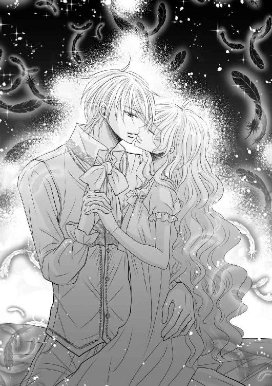
＊ ＊ ＊
最近、この村の酒場には、美しいピアノの生演奏が流れるという。
燭台が極限まで絞られた店内に、滑らかな旋律が響いている。
数席ある丸テーブルは、カウンター席と共に今日も満員だった。
様々な者たちが集まっており、皆一様に酒の瓶を携えていたが、誰ひとりとしてグラスを傾けることはなく、しんとしてその音色に聴き入っていた。
店主でさえ、グラスを磨いていた手を、思わず止めてしまうほどだ。
いかにも古めかしいアップライトのピアノの前に座るのは、二十歳そこそこの青年。
シルバーのような輝きを持つ灰色の髪に、青い瞳。特徴的なのは、彼が隻眼であるということだった。黒の眼帯が闇夜の暗さを絶えず漂わせるが、中性的に整った顔立ちと真摯な眼差しからか、身にまとう質素な衣服に関わらず、なぜか貴族のような雰囲気を醸し出している。
フレデリック・ショパン作曲、『ノクターン 第二番』。
随所に様々な修飾が折り込まれているものの、音楽的には深みがないと言われている曲のひとつであるが、彼が弾くと、引き込まれてしまう魅力が溢れるから不思議だ。
演奏が終わると、店内にはロマンチックなメロディを繰り返された余韻が残され、観客となっていた酒場の客たちは、覚えず詰めていた息をほうっと漏らした。
いいぞ！ という誰かのかけ声を引き金に、次々と歓声が飛ぶ。
拍手の代わりか、グラスを合わせる音があちこちで重なった。
青年は立ち上がると、静かに一礼する。
アンコールを背中に受けながら、狭い店内を歩いていく。
カウンター奥に立つ店主の元へ辿り着く頃には、周囲はしかし、既にいつものような、粗野なざわめきに満たされていた。
酒の入った彼らの気は移ろいやすい。酒場であるのだから、これが当然の姿なのだろうが。
「ほら、今日の分だ」
店主は磨きかけのグラスを脇に置くと、革袋から硬貨を数枚取り出して、青年の手に乗せた。
「............」
その額を見て、思わず沈黙してしまった青年に構うことなく、店主が豪快に笑う。
「いやあ、うちみたいな田舎のさびれた店に、いつかこんな演奏が聴ける日がくるとは思ってもみなかったよ」
「恐れ入ります」
青年は感情が読めない無表情を繕うと、店主に向かって小さく頭を下げた。
そんな儀礼は必要ないとばかりに、店主の方は大仰に手を振った。
「あんたのピアノは、本当にうまいなあ......あれなら町でも通用するんじゃないか？」
真面目にそう問われ、青年は苦笑を隠せない。
「......いえ、僕の演奏よりもうまい方は、たくさんいらっしゃいますよ」
「そうかい？」
謙遜だと思ったのか首をひねった店主だったが、すぐにああと、思い至ったように続けた。
「まあ、昔一度、縁と金があった頃......ナゼール国の王子のピアノを聴いたことがあったが──」
途端に見開かれた青年の双眸は、眼帯に覆われた隻眼のせいで、回想にふけっている店主に気づかれることはなかった。
「あれは......天才と謳われるだけあったね。実に心を打つ音楽だった。そう思うと、確かに兄ちゃんのピアノはまだまだだな！」
うんうんと納得するようにうなずく店主を前に、青年はほっと胸をなで下ろしながら逆に問うた。
「あの、それならば......練習にもなるので、もう少し長く弾かせてもらうことはできないでしょうか？ せめて──」
「構わないよ」
青年が希望する対価を口にする前に、店主がけろりと言う。
ぱっと顔を輝かせたのも束の間のこと、その期待はすぐにしぼむことになった。
「ただし、これ以上は出せないね。練習するのは自由だが」
「そうですか......なら、これまでと同じ時間でお願いします」
落胆は否めなかったが、仕事があるだけましだと思うようにした。
仕事を求めている時、この酒場の使われていないピアノを見つけたのは、青年自身である。自ら調律を買って出て、その腕前を披露した彼は店主に気に入られ、異例なことに雇ってもらえたのだ。本来であれば、ピアノ演奏はとうにやめていたのだという。
「いいのかい？ ファンが付けば、いずれはチップをもらえるようになるだろうに」
きょとんとする店主に、青年はきっぱりと断った。
「妻が待っておりますので」
それを聞いた店主の顔に、ひやかすような、にやにやとした笑みが浮かぶ。
「最初に来た時に一緒だった、あの美人の奥さんか！」
「はあ、まあ......」
「彼女は、何か弾けないのかい？ 美男美女の連弾は見物だぞ？ それともあの美貌なら、歌か踊りか──」
語気に警戒の色をにじませているにも関わらず、店主が嬉々として話を広げるものだから、青年はついに、何か不都合なことを聞かれたら使おうと思って、前々から用意していた台詞を吐いた。
「妻は病気なのです」
店主は我に返ったかのように青ざめ、申し訳なさそうに青年に向き直った。
「......おっと、そうかい。それは悪かったね、お大事にな」
「いえ、ありがとうございます」
稼ぎの少ない旦那で、病気の妻が不憫だとでも同情されてしまったのだろう。それでも詮索されるよりはマシだったので、青年は丁寧に礼を述べた。
「じゃあ、また明日、同じ時間にな」
「ええ。それでは、これで──」
再びグラス磨きに戻った店主へ、青年はもう一度頭を下げると、裏口から辞して、ざわめきが最高潮に達しつつある酒場をあとにした。
きしむ木戸を開けると、冷たい夜の風が顔に吹き付けてくる。
薄手のマントを前でかき合わせ、寒さに身を縮こませながら、家路を辿っていった。
土を固めただけの道に沿ってぽつぽつと建ち並ぶ家々の煙突からは、夕食時の煙が吐き出されている。
今日の我が家はなんだろう──そう思うと自然、青年の頬は緩んだ。
「何かいいことがあったの？」
唐突にそう声をかけられ、青年は驚いて前屈みになっていた姿勢を正した。
視線の先には、髪をふたつに結った、美しい少女が立っている。
少女は微笑みながら青年の元まで駆け寄ってくると、その腕にひしと抱き付いて、我慢できないとばかりに頬をすり寄せた。
「お帰りなさい、セドリック！」
「──ただいま、オデット」
どうか、こんな日がいつまでも続いて欲しい。
そう願う青年──セドリック・ラ・ファイエットは、オデット・レ・ミュッセの冷たくなってしまっていた頬に、優しく口づけを落とした。
この寒さの中、遅くまで自分を待っていたことがうかがえ、心配する気持ちの方が若干強かったが、内心ではうれしくてたまらない。
「夕食が楽しみだったのですよ」
くすぐったそうにくすくすと笑っていたオデットだったが、そう答えられた瞬間、なぜだかすぐに気を落とし、しゅんとうなだれてしまう。
「ごめんなさい、セドリック。お夕飯......材料がなくて、作れなかったの」
よくよく話を聞けば、今日は野菜と引き替えに、近くの農家の手伝いをするはずだったのだが、オデットの働きぶりは、どうも相手方の意に添わなかったらしい。早々に、しかし丁重に断られたのだという。
「その代わり、お家のお掃除は頑張ったのだけれど──」
ふとオデットの手を見ると、あかぎれだらけの荒れた手になっており、セドリックの胸がちくりと痛む。
これでは痛みから、満足に鍵盤も触れられまい。
何不自由ない王宮の姫君をしていた頃には、まったく考えられない事態だった。
内心ではオデットも動揺しているだろうことを思うと、楽な生活をさせてやれない、ふがいない自分に腹が立ったが極力、顔には出さないよう感情を心にしまい込む。
「いいのですよ」
だけど今のセドリックには、こんな慰めの言葉しか、かけてあげられない。
「今日の分の報酬はちゃんともらえましたから、これでパンでも買いましょう？」
「今日は、いくらもらえたの......？」
心配そうに聞いてきたオデットに、セドリックは静かに首を横に振った。
察したオデットが、再び肩を落とす。
ピアノ弾きの対価は、お世辞にもよいとは言えなかった。
王都で物乞いをしていた方が、遥かに稼げるのではないかと思ってしまう金額のため、このままでは満足に食べていくこともできない。
現在は一日に一食がせいぜいで、セドリックとオデットは、日々の生活にあくせくしていたのだった。
互いに疲労の度合いも日を増して強くなり、そろそろ安定させなければ死活問題になる、というところまで追い込まれていた。
オデットのくまが目立つのは、ただ同然で借りたあばら屋が依然、住みにくい状態にあるからにほかならない。
夜ごと彼女を求めてしまうセドリックにも責任の一端はあったが、たび重なる音楽巡業により培われた、生来の順応しやすさを持つセドリックとは違い、オデットは未だに安眠ができないらしい。隣でうなされていることも、しばしばあった。
セドリックが別の仕事を探している間、そして夕方から夜にかけてピアノ弾きをしている間と、ひとりにしてしまっていることも影響しているのかもしれない。
だからこうして寂しさに耐えきれなくなった時は、普段は怯えるほど暗い道のりにもめげることなく、迎えにきてしまうのだろう。
セドリックはオデットと共に途中、既に店を閉めていた主人に頼み、売れ残りのパンを安く売ってもらう。
それでもほとんど手元に残らなかった硬貨をポケットに突っ込むと、セドリックとオデットは我が家に向けて、外灯のない暗い夜道を、月明かりを頼りに並んで歩き始めた。
最初にあの石造りの家を訪れた時は、廃屋ではないかと目を疑ったほどだ。
一間の部屋はほこりにまみれ、かまどには蜘蛛の巣がはびこり、家具といえば壊れかけのベッドしかなかった。
オデットが日々、掃除を続けているおかげで、なんとか人がいても不自然ではないほどまでには綺麗になったが、調度品のひとつもない以上、仮住まい感は変わらない。
村人たちはしかしながら、この流れ者のような若い夫婦を音楽家崩れとでも思ったのだろう。親切に迎え入れてくれただけではなく、何かと世話を焼いてくれた。
ベッドにシーツがかかったのも、かまどに火が入るようになったのも、近所の人が率先して村中に声をかけ、とりあえず必要になるものを分けてくれたためだ。
この村にきてもう二週間になるが、そうして支えられてなお、悲しいことに暮らしぶりが向上する気配はなかった。
「やっぱり、私もピアノを弾くわ。ふたりで弾けば、きっともっとお金になるもの」
「それはいけません！」
酒場の店主と同じようなオデットの提案に、しかしセドリックは強く反対した。
「そんな目立つ行動を取れば、あっという間にここが見つかってしまうでしょう」
セドリックの言葉は、もっともなのだ。
珍しい流れのピアノ弾きは、ひとりでいい。この音楽大陸には、そんな人間はいくらでもいるが、ペアとなれば話は別だった。
おそらく今頃はセドリック、オデットの両名に対して、捜索隊が出されていることだろう。ピアノに関する男女の情報は、特に念入りに集められているに違いない。
だからこそ、ピアノを弾く時は特に、慎重にならなければいけなかった。
ふたりは今、カンタン国のとある小さな村に身を寄せている。
駆け落ち同然で城を飛び出したのち、ふたりの祖国であるナゼール国とサン・マロ国からは離れた方がよいという結論に至り、消去法でカンタン国へ向かった。
扇状型の盆地に形成されたカンタン国は、昼と夜の温度格差が大きく、果樹栽培や養蚕などに適しており、それらに加えた関連事業が盛んに行われている。また砂糖の産地としても有名で、ふたりが住むこの村も、一面にトウキビ畑が広がっていた。
同じミュジーク大陸内といえど、カンタン国の外れにある農村ともなれば、ナゼール国の第二王子と、サン・マロ国の第一王女の顔を間近に知る者などそうはいないと思われたが、ふたりはまず、姿を偽ることから取りかかった。
着ていた仕立てのよい服を売り払い、そのお金で民間人が着る一般的な衣装──男性用の綿織物の上下、女性もののエプロンドレス、数枚の下着、外出用マント二枚、中古の革のブーツ二足──と、黒の髪染め剤を購入した。
お互いに初めて身に付けた姿を見せた時には、慣れない様相に笑い合ったものだ。
最低限の水や食料を確保したあと、余ったお金は必要な時のために残しておくことに決める。
できるだけ日々の稼ぎで生活するよう、金銭感覚を慣らすことにしたのだった。
髪染め剤の方は、できるだけ安いものを選んだためか、元の色と混じり合う形となり、セドリックは白に近いプラチナから灰がかったシルバーに、オデットは艶めく蜂蜜色からウグイスの羽に似たオリーヴグリーンへと変わっていた。
瞳の色はどうしようもなかったのだが、セドリックのオッドアイは目立つため、左のグリーンを隠して右のブルーの瞳を残すことにした。グリーンを隠した理由はひとえに、こちらは実父であるナゼール国王から受け継いだ色だったからだ。
蛇足であるが、セドリックの母は寵姫にあたり、彼が幼い頃に亡くなっている。噂に名高い流しのピアノ演奏として各地を回っていた彼女の腕と美貌を聞き付け、見初めて王宮に召し上げたのが、パトリックの父でもある現王だった。
そうしてカンタン国に着いたあとも、なるべく王都から逃れるよう田舎方面にくだっていった結果、ようやく定住を許されたのが、この村であった。
セドリックはさっそく酒場のピアノ弾きの仕事を得ることに成功するも、この村にはお金を払って音楽を聴きにいく習慣のない農民たちが多いため、いくら音楽が好まれるとはいえ、どんな演奏をしたところで、店主からの報酬は微々たる額だった。
さらに言えば、音楽しか知らないようなセドリックとオデットは、音楽以外、他にどんな手段で生計を立てたらいいのかが、未だによくわからない。
どちらも積極的に、常に何かの仕事に挑戦はするのだが、圧倒的に経験が足りないためか、単純な肉体労働でも力になれないという現実は、まさに致命傷であった。
だからどんなに安くとも、ピアノ弾きの仕事は続けざるを得ない。セドリックの場合は、その類いまれな才能を活かし、己の技術を自在に操れることも強みであった。
「オデットはピアノとなると、我を失ってしまいますからね。そんな技巧を披露してしまったら、あっという間に村中は大騒ぎとなるでしょう。噂が広まり、やがて町にも届いてしまいかねません。僕なら少し簡単に弾くことなど、なんでもないですから」
思い出したように告げられ、オデットはうつむいた。
「そ、そうね......」
その様子から察するに、自分だけが未だにお金を稼ぐ手段が見つからなくて、苦しい想いをしているのだろう。他の夫人たちのように、一日がかりの家事や育児があるわけでもない。
今後のことを考えたら確かに、セドリックひとりの稼ぎでは不安になるのは仕方がない。
しゅんと肩をすぼめてしまったオデットを、セドリックが安心させるように、そっと片手で抱き寄せる。細い肩だと思った。ここへきてから、少し痩せた気がする。
オデットにも早く、何か適した仕事が見つかればいいのだが──けれど男として、そんなことは言いたくなかった。
「僕がなんとかしますから、心配はいりませんよ」
「そんなわけにはいかないわ」
しかしオデットは、頑なに言い張った。
「私たちは、夫婦なのよ？ 今日、時間があったから近所のおばあ様にお話を聞いたのだけれど、一般の人は互いに誓い合えば、それだけで結婚の証となるのですって！」
オデットはおおげさに驚いてみせながらも、ふたりが城を出る前に誓い合ったキスのことを、セドリックに思い起こさせようとしていた。
「男女が夫婦の契りを結ぶのに、王家みたいに面倒な儀式なんて必要ないのだわ......だからね、何が言いたいかというと、私も妻としてちゃんと協力したいの！」
精一杯、自分への愛を言葉で伝えようとするオデットを前に、セドリックの胸は熱くなった。
仮初めであれ自分たちが〝夫婦〟であることに、感動から涙さえ込み上げてくる。
こんなにも逼迫しているというのに、どうしようもなく幸せでならない。
突然、うつむいてしまったセドリックに、オデットが心配そうに声をかけた。
「セドリック？ 具合が悪いの？」
そうして伸ばす手を、セドリックが壊れ物でも扱うかのように優しく握る。
「君がいるだけで、僕はどんな困難にも立ち向かっていけるでしょう」
「セドリック......」
オデットは手を握り返し、ぽっと頬を朱に染めた。
たとえ満足に衣食住が整わなくとも、セドリックはオデットといられるだけでいいと思えた。
恥ずかしげに目を伏せたオデットを見れば、同じ気持ちであることがうかがえる。
ふたりは手をつないだまま身を寄せ合い、愛の巣へと帰ったのであった。
新居のベッドは、シングルサイズでとても狭かったが、これ以上にないぐらい近い距離で眠れることから、セドリックもオデットもそれほど悪くはないと思っている。
そしてふたりは枕を並べながら、寝る前に、必ず将来の夢を語り合った。
「私、まだ怖いの」
「なぜです？」
「今にもパトリックが、この家の扉を開けてきそうで──」
「............」
「ミュジーク大陸は狭いわ。国同士が、こんなにも近いんだもの」
「では、いつか海を渡って、外国に行きましょう」
「本当に？」
「ええ、そこでは誰も僕たちのことなど知りません」
「そうね、そうね！」
「だから、いつでも好きにピアノが弾けます」
「楽しみだわ......ねえ、リストやドビュッシー、ベートーヴェン、それにショパンの生まれた国へも行けるかしら？」
「もちろんです。ナゼールではそれらの国と盛んに貿易をしているから、様々な楽譜が入ってくるのですよ」
「そういえば、どうしてミュジークでは有名な作曲家がいないのかしら？」
「いないわけではありません。......僕だって、作曲はしますよ？」
「ふふっ、そういう意味じゃないわ」
「わかっていますよ」
「じゃあ、答えてくれる？」
「ええ。たぶん、憧れが強いのかもしれませんね」
「憧れ？」
「手の届かないものには、誰もが手を伸ばしたくなるものです」
「............」
「しかしあまりにも遠いから、一枚の楽譜をただいとおしむようになったのでしょう」
「............」
「僕たちには、曲に残された彼らの魂を、音で語ることしかできないのですから」
「セドリック......」
「なんですか？」
「あなたは......遠くへ行ったりしない？」
「何を言っているんですか、いつまでもずっと一緒に決まっています」
「ええ、ええ──そうね......そうだわ......」
オデットの声は、まるで自分自身に言い聞かせているように、セドリックには感じられた。
そしてセドリックも、同じようについ、言葉だけで安心させようとしてしまう自分を、否定できないでいた。
言葉は、いくらでも嘘を吐ける。
いつかはどこかで元の世界に戻らなくてはならない。
漠然と、そう考えることがあることを、それが遥かに現実的であることを、オデットもわかっているに違いない。
今の暮らしに不満を覚えるわけではないが、地に足が付いていない、ふわふわとした浮遊感に包まれていることは、紛れもない事実であった。
オデットが兄と婚約を決めてから、唐突に降ってきた一カ月間という短い幸福の中で、愚かにもこんな日々を夢見ていたことを、いまさらながら思い出し、ふっと自嘲的な笑みがこぼれた。
それに気づいたオデットが、既に密着している身体を、よりいっそうすり寄せてくる。
いざ手に入れてみたら、このていたらくぶりはなんなのだと、セドリックは自分に情けなくなっていたのだ。己の無力さを、ひたすらに嘆いていた。
オデットを幸せにしたい、ただそれだけなのに。
セドリックは、ほのかな石鹸の匂いが香るオデットの首筋に顔をうずめ、髪をかき分けて、優しいキスを散らしていく。
「もっと強く」
「はい？」
「お願いよ、あなたのものだって、跡を付けて」
今ならクロエがいないから、咎められることも恥ずかしい想いをすることもない。彼女は言外にそう告げて、セドリックの愛撫を催促した。
しかしセドリックは知っている。
オデットは、愛の営みを激しくすることによって、それ以上にうずまく胸のうちの不安をうめて欲しいのだろう。
セドリックだけが求めてしまっていると思っていたが、本当はオデットも夜ごとに身体をほてらせていたのである。
セドリックもオデットも、確かな形が欲しいのだ。
そしてピアノを所有しない彼らにとって、身体を重ねることは、互いの想いを伝え合うためには何よりも簡単な方法だった。
セドリックが上体を起こし、オデットに覆い被さる。
待ちきれないとばかりにオデットはセドリックの首に腕を回し、自身の胸元へと引き寄せた。
強く唇を吸うと、オデットがねだるように舌を絡ませてくる。
「ふっ......あ......はぁ......っ」
息継ぎをするオデットの差し迫った声がもっと聞きたくて、セドリックは彼女の口腔を舌先で探っていった。
歯列をなぞり、頬の柔肉を突つき、顎の裏をなでる。
角度を変えながら口づけるごとに、オデットの口角からは混じり合った互いの唾液が溢れ出し、乳白色の頬を扇情的に濡らす。
セドリックはそれを丁寧に舐めとりながら、首筋へと舌を這わせた。
オデットの呼吸が浅くなる。
胸元に耳を近づければ、どくどくと心臓が早鐘を叩いていることがわかった。
「未だに緊張するのですか？」
そう問うてみると、意地悪とでも言うように、オデットがぷうっと頬を膨らませて睨んできた。
その可愛らしい仕草に、セドリックは思わず目尻を下げて微笑んでしまう。
意地悪しないよう再開された愛撫は、情欲を伴い、オデットの素肌はたちまちセドリック一色へと染められていく。
柔らかな乳房は弾力があり、下から押し上げるようにして揉むと、ちょうどセドリックの手に収まる。
優しくなでるたびに、オデットの口からは甘やかな喘ぎが紡がれた。
乳頭は既に硬く張り詰め、くわえて欲しいと言わんばかりに、つんと突き出ている。
セドリックは期待に応えるように、片方を口に含んだ。
「はぅっ......や、ああ......んっ」
何度も何度も舐めしゃぶり、舌先で転がすと、オデットが切なそうに身をくねらせる。
「オデット......君は本当に、甘いです──」
セドリックは吐息をつき、いつまでも彼女の胸に顔をうずめていたい衝動を抑え、下肢の方へと移動した。
敏感なオデットの身体が、びくんと跳ねる。
腰から太ももにかけてなでるように両手を滑らせ、恥ずかしげに閉じられていた足を開かせながら、そっと下着を脱がす。
そのまま足の間に顔を寄せると、和毛に覆われたオデットの秘部はもう、しっとりと濡れていた。
口づけと胸を触っただけで反応してくれることがうれしくて、セドリックはいとおしそうに花芯へと舌を伸ばす。
「ひあ！ はんっ......う......そ、そんなとこ、やっ......」
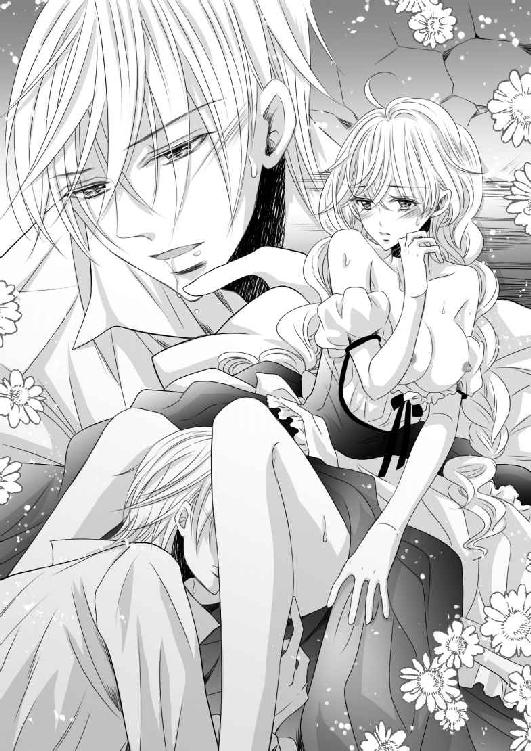
抗うように、けれど気持ちがいいのか、オデットがどちらとも付かないよがり声を上げる。
包皮がむかれた小さな肉芽は、次第に熱を持ち、硬く充血していった。
セドリックが執拗に吸い上げ続けると、すぐ下の蜜孔からは、とろりと愛液が溢れてくる。
「くぅっ......んあ......あ......ああっ......」
「気持ちいいですか？」
「そんっ......な、とこ......からっ......き、聞かな、いでっ......！」
オデットが泣きそうに懇願する。
彼女のいちばん恥ずかしい部分に顔をうずめて話していたので、言い分はもっともかもしれない。
でも、恥ずかしがる姿があまりに可愛らしくて、つい尋ねたくなってしまうのだ。
「では、どうされたいのですか？」
「わ、わから、ないわっ......あ──」
セドリックがあえて舌を動かすのをやめると、オデットはお気に入りのおもちゃを取り上げられた子供のように、すねた顔で見つめてくる。
その間にも蜜が止めどなく出てくるので、どうやら焦らされるというシチュエーションに興奮しているらしい。
セドリックは楽しむように、同じ意味の問いかけを繰り返した。
「触らない方がいいのでしょうか？」
「いや......」
オデットは頬を赤く染めながら、観念したようにささやいた。
「触って欲しいわ......んんっ」
最後まで言い終わらないうちに、セドリックの指先がひだをなぞる。
オデットはすぐに反応を示し、身体を弓なりにそらせた。
絡みつくような蜜の出所を探るように、ゆっくりと指を挿入していく。
「ああっ......そ、そこっ......だめえっ」
途端に、オデットの嬌声が大きくなる。
「ここに入れられるのが気持ちいいのですね？」
「うん......うんっ......そ、そう......！」
彼女の希望通りに抽挿させると、オデットは自ら腰を振るようになった。
とうに羞恥もかなぐり捨てたようで、うんうんと、ただ快感にうなずいてみせる。
二本の指で内壁をすっていたら、やがてオデットの愛液は、セドリックの手首にまで伝っていく。
しとどに濡れる蜜口をもっと溢れさせたくて、セドリックの愛撫は続いた。
「あんっ......はぁ......ふあっ......セ、セドリック......！」
自分の名を呼ぶ、彼女がいとおしい。
「なんですか？」
最奥のつるりとした部分に触れると、泣きそうに顔を歪めたオデットによって、指先がきゅっと締め上げられた。
「おねがっ......い、いじわる、しないでえっ......あああっ」
「僕は一度だって、君に意地悪したいと思ったことはありませんよ」
意味するところは、いつまでも細い指だけでは物足りないということであったが、わかっていてそんな答え方をしてしまう。
しかし平静を装って余裕をのぞかせたものの、自身のモノはもう痛いぐらいに下着の中で、はちきれんばかりに膨れ上がっていた。
すぐにでも、今自分の指が入っている、彼女の温かな部分に入れたい。
セドリックは、男には愛撫の必要がないことが、つくづくうらめしいと思っている。
オデットに口づけるだけで、胸に触れるだけで、下肢を探るだけで、なぜか自分の興奮に変わるのだから仕方がない。
「セドリック、セドリックっ」
再び、オデットがねだるように呼ぶ。
蜜壺はとろけきっており、早く男根をくわえ込みたいとばかりに、ひくついていた。
セドリックは自ら下着をずらし、張り詰めた剛直を引き出す。長くそそり立つセドリックの男根はどくどくと脈打ち、うっすらと血管さえ浮き上がっていた。
瞬間、オデットが息を呑む。
大きく目をみはった彼女の瞳を、セドリックは真っ直ぐに見つめた。
「オデット、君を......貫きたい」
湧き上がる欲望を口にする時、セドリックの口調は変わる。
その真摯な願いに、オデットはこくんとうなずき、彼を受け入れやすいよう足を大きく開いた。
セドリックは腰を屈め、オデットの濡れそぼった蜜孔に、熱をもった己の先端をあてがった。
「ふっ──」
「ああああっ」
セドリックが息を詰めるのと同時に、押し進められる感覚から、オデットが声を上げる。
蜜壺にゆっくりと全てを沈めると、セドリックはオデットの足を抱え、抽挿を始めた。
「あっ......んっ......はぁっ......ああっ......」
突き上げるたびに、オデットはまるでピアノを弾いている時のように、髪を波打たせた。
オデットの髪が蜂蜜色に輝いていたことを思い出して、ちくりと胸が痛むのも束の間のこと、すぐにどっと注ぎ込まれた快感のうずによって、余計な思考は追いやられた。
オデットの内壁は打ち震え、セドリックをきゅうきゅうと締め付ける。
「オデットっ......愛しています」
搾り取られそうな感覚に顔をしかめ、セドリックは身体を倒すと、オデットの耳元で愛をささやいた。
「わ、私もっ......セドリック、私も、愛してる......っ」
突如としてオデットの中が激しく痙攣し、セドリックをさらに奥へといざなった。
「くっ......」
絶頂に達したオデットに導かれるままに最奥を穿ち、やがてセドリックは膨張しきった熱を放つ。
こうして今宵も、甘やかな調べは夜露に溶けていった。
しかしオデットは、それから間もなくして倒れた。
それはよく晴れ渡った日の、午後のことだった。
今日も満足いく仕事を見つけられなかったセドリックとオデットだったが、近所の結婚式に呼ばれたことにより、その時に振る舞われた野菜と鶏肉を分けてもらえた。
ふたりはさっそく家に帰ると、未だ慣れない調理に取りかかる。
かまどに火をおこし、鍋に湯を張って、シチューにしようと奮闘していた。
「セドリックが仕事から帰る頃には、きっとおいしいシチューになっているわ」
煮込みかげんを確認しながら、オデットが嬉々として言う。
隣で片づけをしていたセドリックは微笑んだ。
「それは楽しみですね。早く帰れるよう頑張ってみます」
今夜もセドリックには、酒場でのピアノ弾きの仕事が待っている。
「あら、ダメよ」
しかし即座にオデットが目を吊り上げた。
「いくら調整しているとはいえ、お客様にはちゃんと、あなたの音色を聴かせてあげなければ失礼よ」
「オデット──」
わずかに眉を下げたセドリックに気づかないオデットは、記憶をたぐるように遠くを見つめていた。
「花嫁さん、綺麗だったわね」
「え？ あ、はい......そうですね」
一瞬、何を言われているのか見当も付かなかったが、すぐに先ほどの結婚式のことだと思い至る。オデットは、それを思い出しているらしい。
セドリックはとりあえず同調したものの、オデットより綺麗なものはないと信じて疑わない彼であったので、そこに特別な感慨はなかった。
そっけないとも取れるセドリックの生返事にも関わらず、オデットの顔は次第に輝きを増していく。
「お金があるお家は、ああいうふうに、身内だけでも素敵なドレスを着て、小さくても牧師さんのいる教会で式が挙げられるのね」
それを聞いて、オデットがいったい何に心を惹かれているのか、セドリックにもわかった。
花嫁はこの村の地主の娘であったことから、結婚式は、こちらの基準では盛大に催された。こぢんまりとした村唯一の教会で、花嫁と花婿が誓いの言葉を交わし、自宅では村民を集めた披露宴が行われた。
仕事を探していたセドリックとオデットは、たまたま通りかかっただけだったのだが、多い方がよいと、上機嫌な地主らに呼ばれるという経緯があった。
「いつか、ちゃんとした式を挙げましょう？」
喜んでもらえると思って口にした提案に、しかしオデットは悲しそうに首を横に振った。
「私たちは無理よ。神様だって、許してはくれないわ」
「............」
眉根を寄せて黙り込んでしまったセドリックに、オデットがはっとして言葉を継ぐ。
「でも、いいの！ 私は今のままでじゅうぶんに幸せだから、これ以上を望んだら、それこそ神様に、罰を受けなさいって言われてしまうかもしれないもの！」
そこには嘘があったと、セドリックは気づいてしまう。
オデットは今、幸せなはずがない。
一緒に暮らせることには無論のこと、互いに充足感を得ている。
しかしオデットは、もう一カ月もピアノを弾いていない。
彼女はおそらく、ピアノが弾きたくて仕方がないに違いない。
そんなそぶりを見せないように普段は振る舞っているが、時おり口ずさむ、偉大な作曲家たちのメロディを、セドリックは聞かなかったことになどできなかった。
「オデット......では──」
酒場であれ、そろそろピアノを弾かせてやった方がいいかもしれない。
そんなことを考えて顔を上げると、目の前ではオデットの身体が今まさに、ぐらりと傾いているところであった。
「オデットっ!?」
セドリックが慌てて駆け寄り、ふらつくオデットの身体をしっかりと抱き留めた。
「オデット？ オデット、どうしました？」
「セ、セドリック......」
オデットはぼんやりとしており、うっすらと開いたまぶたから、わずかにヘーゼルの瞳がのぞくだけだ。
「私......ちょっと、疲れてしまったみたい......なんだか......眠いの......」
それを聞いて安堵に胸をなで下ろし、セドリックはそのまま彼女を横抱きにすると、ベッドまで運んでいった。
きちんと上がけを首元までかけ、額には冷たく濡れたタオルを乗せる。
「............」
セドリックは、横たわるオデットをじっと見つめた。
オデットは本当に、疲れているだけなのだろうか。
全身に大量の汗をかき、苦しそうにはあはあと喘いでいるのに。
付きっきりで看病しながら、ベッドの脇で膝立ちになり、心配そうにオデットの熱い手を握る。
「オデット......医者に診てもらった方が、いいかもしれません」
できることはなんでもやってやりたい──そう思って言ったのに、オデットは強く否定した。
「それは......いけないわ。そんなお金があったら、私、鏡台が欲しいもの......」
冗談めかした物言いに、しかしセドリックは逆に悲しくなって顔を伏せた。
オデットは時おり荒く息を吐きながらも、気丈に言葉を続けた。
「だから今日も、ちゃんとお仕事に行ってちょうだい？ 私なら......大丈夫だから」
「わかりました。僕が帰るまで、安静にしていてくださいね？」
そう念を押すと、オデットは微笑んで〝いってらっしゃい〟と告げてくれた。
セドリックは後ろ髪引かれながらも、仕事をするために酒場に向かった。
いつものようにピアノを弾き、アンコールを受け、報酬をもらう。
少しでもオデットに楽をさせてやりたい、そんな感情が入ってしまったのか、今日はチップを多くもらえた。
ほくほくして懐を押さえながら、セドリックは夜道を急ぎ足で帰っていく。
「ただいま、オデット！」
今宵の成果を見せたら、オデットも喜んで元気になってくれるだろう。
そんな想いは束の間のこと、ドアを開いて呆気なく崩れ去った。
いつも聞こえる、奥さん然とした〝お帰りなさい〟がない。
セドリックは急いでベッドに駆け寄った。
「オデットっ!!」
オデットはよくなっているどころか、ぐったりと四肢を投げ出した状態でぴくりとも動かず、こちらを見ようともしなかった。
オデットの頬に触れるも、彼女は意識が薄れていて、セドリックの帰宅にも気づかないらしい。
「っ......」
オデットは高熱に見舞われていた。
既に乾ききってしまったタオルを氷水で洗い直し、再びオデットの額に乗せる。
「うっ......ん......」
「オデット？ オデット、わかりますか？」
懸命なセドリックの呼びかけに、わずかな反応を見せるも依然、意識は混濁した状態だった。
いつかこうなる予感がしていたセドリックは、ベッドの端に座り、頭を抱えた。
思った通り、音楽のことしか知らない自分たちに、普通の民の暮らしができるはずがなかったのだ。
いつまでも家事と仕事探しに明け暮れる毎日は、それまで姫として王宮で大切に育てられてきたオデットにとって、耐えがたいものがあったに違いない。
無理をしていたのはふたりとも同じだったが、男であり、不規則で自由な音楽巡業の多かったセドリックの方が、体力的にも精神的にも余裕があったのは事実だ。
サン・マロ国での一カ月間の集中的なピアノ練習だけでも、オデットがかなりの疲労を重ねていたことを、セドリックはいまさらのように思い出した。
おそらく過労だから、ゆっくりと休めば快癒してくれるはず。
ただしそれには、王宮のように整った環境があることが必須だった。
まともな食事も摂らせてやれない今、オデットをここにいさせておいてよいわけがない。
けれど王宮に戻れば、もう二度とオデットと触れ合うことは適わないだろう。
煮え立つような葛藤に囚われていると、オデットの睫毛がかすかに震えた。
「ピ、ピアノ......ピアノを、弾きたいわ......」
「っ......!!」
セドリックの双眸が大きく見開かれる。
オデットの手はピアノを求めているのか、うなされていながらも、何度も指先が宙をかき、その姿はまるで鍵盤を捜しているように、セドリックには感じられた。
ピアノと共に育った彼女なのに、毎日のように当たり前に弾いていたピアノが、もう一カ月も弾けていない。
セドリックがそうであるように、主たるストレスはこのことだろうと思った。
昼間も珍しくセドリックの演奏スタイルに口を出し、どれだけその音色がいとおしいか、無意識に伝えていたのだから。
結局、自分はオデットに何もしてやることができないのか。セドリックは、あまりのふがいなさから、心臓が握り潰されそうな息苦しさを覚えた。
とにかく医者に診せなくてはならない。
しかし村には医者などいない。
近所の人に聞き回り、夜を徹してありとあらゆる民間療法を試したものの、オデットの体調が回復する兆しは、ついに見えてこなかった。
朝焼けが差し込む石造りのあばら屋の中で、セドリックは苦渋の決断をした。
はあはあと荒い息を繰り返すオデットの耳元に、安心させるような優しい声音でささやく。
「オデット......今日、町に行きましょう？ ちょうど町にサトウキビを運ぶ荷馬車がくるそうです。先ほど、ついでに乗せてもらえるよう、交渉してきました」
しかしオデットは、いやいやと首を横に振った。
「ダメ......ダメよ、セドリック。それは絶対に、よくない......わ」
夢うつつになりながらも、オデットは必死に否定の言葉を繰り返していた。
町に行けば当然、貴族も住んでいるのだから、ふたりの素性がばれてしまう可能性が高い。
オデットはそれをわかっているから、いやだと言うのだ。けれどそこにオデットの命が懸かっていることを、とうの本人は気づけていない。
セドリックは聞かなかったふりをして、無言でオデットを背負った。
たった一カ月間しか住まなかった我が家を出て、荷馬車に乗り込む。
流れる風景に想いをはせながら、馬車に揺られ、やがて町へと降りた。
オデットはその間、眠りに落ち、一度も目を覚ますことはなかった。
間もなくして医者が見つかり、ついに昏睡状態となったオデットが診察を受ける。
しかし町医者によれば、あまりに危険な状態で、とても手が施せないという。
「王都の医者に診せた方が、いいかもしれないね」
気難しそうに腕を組みながら、町医者が言った。
「宮廷医なら、より確実だろう」
「......宮廷医」
セドリックが呆然とつぶやき、押し黙る。
宮廷医とは、王宮仕えの医者のことである。
無論のこと、セドリックもオデットも、平素であれば日頃から顔を合わせている者たちだった。この町医者以上に、彼らのことは知っているだろう。
たとえ百歩譲って王都の医者を訪ねようとも、彼らは宮廷医とのつながりが濃く、すぐに患者の容態を王宮に通達されてしまうおそれがある。
国家間で頻繁に交流会を行っているからこそ、上流階級の中ではオデットやセドリックの顔を知っている者が多い。このカンタン国とて、安心はできないのだ。
しかし町医者では手に負えないとなると、このままではオデットが死んでしまうかもしれない。
言葉すらほとんど発してくれなくなったオデットの冷たい頬にそっと触れ、セドリックは二度めの決断を迫られていた。
「これは言うまいと思っていたのだが──」
そんな時、ふと町医者が気づかわしげに声をかけてきた。
「あんた......いや、あなた様はもしかして、ナゼール国の王子殿下ではございませんか？」
「っ......!?」
セドリックは驚きのあまり、大きく目をみはる。
その双眸は、グリーンとブルーのオッドアイ。オデットの看病があって、セドリックは眼帯をするのを、すっかり忘れてしまっていたのだった。
町医者は決して責める口調にならないよう、言葉を選んでいるようだった。
「わたしが昔、恥ずかしながら宮廷医を目指していた頃、少しの間でしたが、医療大国のナゼールで学んでいたことがあるのです」
セドリックは顔をうつむけた。
それならば、セドリックの顔を知っていても不思議ではない。
未だ三国の中で発展途上にある医学は、各王宮で講義が行われることも少なくなく、この町医者ともすれ違っていないとは言いきれなかった。
「詮索したくはありませんが、あちらの御方はおそらく、サン・マロ国のオデット姫でしょう？ なぜこんなことになっているのか、わたしには見当も付きませんが......手遅れにならないうちに宮廷医に診せた方が、殿下のためにもなりましょう」
セドリックはぎりと歯を軋ませた。
そして町医者のこの言葉から、どうやら二人の捜索は、大々的に公表されているわけではないことを知った。
内々にことを済ませようとするのは、いかにも兄がしそうなことだったが、それはつまり、ふたりがその気さえあれば、なんの問題もなく王宮に戻れるということも示していた。
丁寧な助言をくれた町医者に向け、セドリックは無意識に硬貨を差し出していた。
しかし町医者は頭をたれてそれを辞した。
「だからと申し上げるのもおかしなことですが、殿下の姿を拝見した時から、お金を頂く気はなかったのです。どうかそのお金で、王宮にお帰りください」
町医者はこんな事態にも関わらず、騒ぎ立てる気はないらしい。
セドリックは礼を述べると、オデットを背負い直してから、町医者の家を出た。
砂漠に面しているカンタン国の王都は、石造りの家が建ち並んでいる。
今はまだ早い時間なので、店は閉まっており、人々の往来も少ない。
昇る朝日に目をすがめれば、遠くには王宮の尖塔が見えた。
セドリックは町医者に渡すつもりであった全財産を取り出し、辻馬車に乗った。
荷台の上にオデットを寝かせ、寒くないよう自分の上着をかけてやると、オデットがうめいた。
蒼白の彼女は、もう汗もかかないぐらい、冷えきってしまっている。
「待っていてください、オデット。すぐに......すぐによくなりますよ」
「セドリック......セドリック......」
うわごとのように繰り返される己の名前。
セドリックは微笑を失敗して苦笑した。
「はい、ここにいます」
浮かぶ涙を風に運ばれた砂のせいにして、オデットに優しく声をかけ続ける。
セドリックは、ド・シエンヌ家を頼り、オデットを宮廷医に診せた。
こうしてふたりだけの協奏曲は、終わりを告げたのであった──。
第四楽章 心の調べ
ぱしっと、頬を叩く乾いた音が響いた。
「やめてっ......！」
かばおうと前に出ようとしたオデットは、腕を強くつかまれ、パトリックによって引き戻されてしまう。
頬を張られたとうのセドリックは、プラチナ色の髪で顔が隠れ、表情がうかがえない。
ひたむきにたたずむその姿に、オデットはなんと声をかけたらよいのかわからなかった。
それまでオデットの看病をしていたクロエも、所在なさげに目を伏せるだけだ。
パトリックは先ほどから、わなわなと身体を震わせ、怒りに燃えた眼差しで弟を睨み付けていた。
カンタン国のド・シエンヌ家から、ナゼール国のラ・ファイエット家に連絡がいったのは、オデットが宮廷医の診察を受けてより間もなくのことであった。
事態の緊急性を悟ったパトリックは、各地に散らせていた捜索隊を即座に集結させ、仰々しい隊列を組んでまでオデットを迎えにやってきた。
オデットは王家専用の馬車に乗せられ、すぐにナゼール国の王都へと運ばれた。
オデットが気づいた時、ナゼールの王城の以前与えられていた客間にいた。
クロエから三日間も眠り続けていたことが告げられて驚くも、それ以上に驚かされたのは、目を覚ますや否や部屋に入ってきたセドリックとパトリックが対峙しているという、いつかのような光景だったことにある。
しかしあの時と違ったのは、今回は反対に、パトリックがオデットを守るよう背を向けているということだった。
「病み上がりのお前が手を出すな」
パトリックはきつくオデットを睨み付け、ベッドに戻るよう目線で促した。
自分への処罰も忘れてはいないと、その鋭いアンバーの双眸が語っており、オデットは思わず息を呑む。
セドリックは頬を赤くはらしながらも顔を上げたが、パトリックの様子を見る限り、未だに謝罪の言葉はないらしい。
オデットには何か言いたげに、心配そうに揺れるオッドアイを向けるも、パトリックが傲然と立つ手前、声をかけることがはばかられているようだ。
パトリックは何を思ったのか突然、オデットの傍に縮こまって控えていたクロエを、自らの方へと強引に連れてきた。
「そんなに女が抱きたいのなら、こいつで我慢すればよかろう」
言っている意味がわからずに、セドリックが形のよい眉をひそめる。
「クロエっ......!?」
オデットは居ても立ってもいられず、ベッドから起き上がると、クロエを守ろうと手を伸ばす。
しかしパトリックが身体を張ってそれをさせない。
「どうしてこんなことを──」
オデットは行き場のない両手を握り締め、パトリックの不可解な言動に異議を唱えた。
パトリックが女を差し出すような真似をするなど、にわかには信じがたいからだ。
さらに不可解なのは、他国の王子にいいように扱われているというのに、クロエが何も言わないことにあった。見知ったラファ家兄弟が相手であれば、いつもなら毅然と、「戯れはおやめください」とでも主張するところであろうに。
事態が呑み込めず、オデットはおろおろと両者を見比べていた。
「言え、クロエ」
パトリックがクロエに命じる。
「俺はオデットが絶望する姿を見たい」
なぜクロエのことで、自分が絶望しなければならないのか。オデットにはその言葉の意味がわからなかった。
泣きそうに顔を歪めていたクロエは、その黒目がちの瞳からついに大粒の涙をこぼし、つうっと頬に伝わせた。震える口が、やがてためらいがちに開かれる。
「──ひ、姫様の情報を、パトリック殿下にお渡ししていたのは......この、わたくしでございます......」
「なんですって？」
オデットは耳を疑った。
そして続けられた言葉に、さらに愕然とすることになる。
「幼き頃より、恐れ多くもセドリック殿下を愛してしまった......わたくしの罪です」
クロエがセドリックを愛している？ あまりに急な事態に、オデットの頭は付いていけない。
パトリックは皮肉に口元を歪めている。
「聞いたか、オデット？」
はっと吐き捨てるように笑い、オデットの震える瞳をのぞき込む。
「こいつはずっと、お前とセドリックがくっ付くことを避けるために、俺にお前を売り渡していたのだ」
「う、売ってなど──！」
クロエは涙声で言いかけ、途中で比喩だと気づいたのか、慌てて口をつぐんだ。
決して金銭に目がくらんでしたことではないと、クロエはそう訴えたかったに違いない。オデットにはそう伝わっていた。
しかしながらも、以前から何かにつけてパトリックが自分について詳しいとは感じていたが、まさか信頼するクロエが情報を流しているとまでは思い至らなかった。
クロエはいつだって、オデットの忠実な侍女だったから。姉妹のように育ってきたのに──そう考えたところで、オデットの脳裏にふと、昔の記憶がよみがえる。
ラファ家兄弟との思い出は、楽しそうにピアノを弾き合っている姿だ。
途中からパトリックが弾かなくなり、彼がいうにはセドリックと自分を取り合っていたというその過去に、いつだってクロエが傍に控えていたことを、オデットは思い出した。
セドリックとピアノの練習を始めた頃、クロエは言っていたではないか。〝セドリックと競っていた頃は、いきいきとしてピアノを弾いていた〟と。
クロエはずっと、自分たちの姿を見てきたのだ。
だからなぜ、同じ年であるはずのクロエがあの時、セドリックとの秘密の演奏会が不安であると口にしたのか、すとんと理解できた。
パトリックとの関係に支障が出ることを心配していたのはもちろん、嘘ではないだろう。
ただ、それだけではない。
クロエが既に、本物の恋心を知っていたからにほかならない。
オデットが気づかなかっただけで、交流会のたびにラファ家兄弟とピアノを弾いていた頃からずっと、セドリックに焦がれた目を向けていたのであろう。
ゆえに、恐れていたに違いない。
オデットのセドリックに対する気持ちが恋であると、クロエにはわかってしまっていたから。
そこではたと疑問が湧く。
「で、でも、どうして......私がセドリックと関係しているとまで──」
それだけは解せなかった。大聖堂ではセドリックとふたりきりだったはず。クロエにも知りようがなかったはずだ。
これではパトリックに、以前に言ったことが嘘だったと証言したようなものだったが、パトリックは気にしたふうもなく、クロエに先を促すよう顎でしゃくった。
クロエは消え入りそうな声でつぶやいた。
「あの夜の姫様のドレスに、破瓜の血が付いていたからです......」
「それを聞いた時は、俺は身内殺しという名の殺人者になるかと思ったぞ」
茶化すように笑うパトリックだったが、目はまったく笑っていない。
「なぜこんなことになっているか、お前たちには説明せねばならんな」
パトリックは、セドリックとオデットを見やり、勝ち誇ったように口角を吊り上げた。
しかしクロエが、つんのめるようにして前に転がり出てくる。
「い、いいえ！ どうか自分で......わたくしの口から、お話させてください......っ」
パトリックの言葉では過剰に伝えられてしまうと危惧したのか、クロエは強く懇願した。
「......まあいい」
ふんと苛立たしげに鼻を鳴らしたものの、パトリックは了承した。
クロエはそんな不遜なパトリックに丁寧に礼を述べ、深呼吸をしてから話し始める。
「......あれは、パトリック殿下がサン・マロ国の演奏会に訪れた日より、しばらく経ってからのことでした──」
その時──サン・マロ城のひと気のない廊下で、パトリックとクロエは向かい合っていた。
『それでわたくしが殿下に逐一、姫様の動向をお伝えしろと仰るのですか？』
『ああ、そうだ』
彼の不遜な言い方は、さしでしゃべることもあった幼少期と変わらなかったが、今はどこか焦っているように、クロエには感じられた。
『わたしくは姫様に忠実な侍女です。残念ですが、ご期待には添えません』
特に最近、セドリックとピアノを弾くようになったオデットは、昔のようにいきいきとしていたため、クロエはそれがうれしくてたまらなかった。
だから丁寧に辞したのに、パトリックはなぜかふっと笑う。
『本当にそうか？』
皮肉に口角を上げるパトリックに、クロエは失礼にならない程度に少しだけ眉をひそめた。
『お前はセドリックに恋をしているのだろう？』
『なっ──そのようなお言葉は、いくら殿下といえど、戯れがすぎましょうに！』
クロエは怒りに顔を染めたが、パトリックは構わずに続けた。
『だからお前は、俺とオデットが結婚することが、うれしくてたまらない』
『っ......!!』
心のうちを見抜かれたようで、クロエはざっと血の気を引かせて押し黙る。
『でもオデットに忠実であるがゆえ、オデットの幸せも、お前は望んでいる』
『............』
確かにオデットがいきいきとし出したのは、喜ばしいことに違いはない。
けれどそれは、オデットがセドリックではなく、パトリックと婚約するからという、紛れもない前提条件が必須であることを、クロエは否定できなかった。
『だがな、クロエ。その感情が同居することは、人間には不可能だ』
『そんなことは──』
クロエの声が震える。自分のことで精一杯だったから、そう告げたパトリックの寂しそうな顔には気づかなかった。
『思い至るのではないか？ オデットの変化に、次第に不安が込み上げていることを』
戸惑うクロエに、表情を戻したパトリックが追い打ちをかけた。
クロエの進言のせいで、オデットはセドリックへの恋心を自覚してしまっただろう。
正直、落胆を隠せなかった。だから恐れ多くも、逃げるように部屋を出ていってしまった。それ以前には、早く次の演奏会がきて欲しいなどと告げてしまってもいた。
クロエはそれらを悔いていたが、わだかまる感情が解消されることはなかった。
パトリックはそんなクロエの内情を汲み取ったかのように、艶然と微笑んでみせる。
『心配するな。オデットと俺は必ず結婚する。だが──そのためには、ふたりが道を外さないよう見張りが必要なのだ』
『............』
クロエの葛藤は続いていた。
それが大事に育て、雇ってくれた陛下への裏切りになりはしないかと。大人になってからも姉妹のように接してくれる、オデットへの背信になりはしないかと。
パトリックは薄い唇をなめ、クロエの迷いを断ちきるよう、とどめとばかりに言い放った。
『いずれ、お前をセドリックの寵姫として迎えてやる』
さすがにこれには、どんなことでも冷静に対処してきたクロエでさえも驚きを隠せず、大きく目をみはった。
『そ、そんなこと、セドリック殿下のお気持ちなしに──』
『俺はその頃、ナゼールの王となっているだろう。俺の命令は、絶対だ』
『で、でも......』
『無論のこと、お前も重々承知しているであろうが、王侯貴族でない限り、正妃にしてやることはできない。ゆえに、やつもいずれは正妃を迎えるだろう』
聞いた瞬間、クロエの心は嫉妬で染まり、おかしくなりそうだった。
パトリックはその様子を面白そうに眺め、彼女にとっての妙案を提示してくる。
『だが、その前にお前が寵姫として孕めば、少なくともその間はセドリックの愛を独占できるはずだ』
『っ......!!』
クロエの気持ちは揺れた。
『お膳立てはしてやる。オデットと共に、ナゼールにこい。オデットを失ったセドリックを慰めてやれば、お優しいあいつのことだ、慣れ親しんだお前になら、すぐに心を開くだろう』
悪魔のささやきはついに、ぐらついていたクロエの心を捕らえてしまう。
『......承知いたしました。伝達方法は、お聞きした通りに行います』
パトリックはにやりと笑い、クロエの選択を仰々しく褒め称えたのであった──。
話し終える頃には、クロエは完全にうつむき、再び涙をこぼしていた。
「そんなことが──」
二の句が継げないオデットの代わりに、セドリックが凛然と口を開いた。
「はっきり申し上げておきますが、僕はたとえ引き離される結果になろうとも、オデットを生涯、愛し続けるでしょう」
「っ!!」
痛々しく腫れ上がった頬を隠そうともせずに、そうきっぱりと言いきったセドリックを見つめ、オデットの胸はきゅっと締め付けられる。
セドリックは切なげに、そんなオデットを見つめ返したが、クロエをいたわることも忘れてはいなかった。
「クロエ、君の気持ちに応えられず、本当に申し訳ないです」
「いえ......いいえ！」
クロエは真っ赤な泣き顔を、ぶんぶんと懸命に振った。
「わたくしこそ、思い上がった真似をして......本当に申し訳ございませんでした」
そうして深く謝罪し頭を下げるクロエを、パトリックはつまらなそうに見下ろした。
「ふん、貴様らの事情など正直どうでもいいのだ。俺たちは忙しいのでね」
その〝たち〟に、間違いなく自分が含まれていると感じ、オデットが訝しげな視線をパトリックに向ける。
パトリックが、にやりと笑う。なぜか自嘲気味な笑みであったのが引っかかった。
「明日、シェルブール教会の聖都に向かう。お前たちがいなかった間に、悪いが準備を進めさせてもらった」
少しも悪いとは思っていない表情で、パトリックが言う。
「エクス・アン・プロヴァンス大聖堂での演奏会のあとに、そのまま盛大な結婚式が続けて催されることになっている」
「なんですって？」
オデットは眉をひそめ、今度こそ耳を疑った。
パトリックがひょうひょうと肩をすくめてみせる。
「気づかなかっただろうが、クロエにお前たちの跡を付けろと命じたのは、この俺だ」
オデットだけではなく、セドリックもこれには驚いた。
心底、申し訳なさそうにうつむくクロエを見やり、ではあの村のどこかに潜伏していたとでもいうのだろうかと、オデットは呆気に取られていた。
各地に散っていたはずの捜索隊が早く到着した理由も、城に運ばれた時にオデットの両親もナゼール国の国王夫妻も心配しなかった理由もわかり、これで合点がいったが。
おそらくクロエを諜報に、パトリックが周囲をうまく言い含めていたのだろう。王子とはいえ、王座を目前にした次期国王だ。不可能なことではない。
「だからずっと、お前たちがどこにいるのかも、何をしているのかも、知っていた」
何をしているのかも、という言葉の語気があまりに強くて、オデットは思わず身をすくませたが、パトリックはこれにも気にしないふうを装って先を続けた。
「しかし、好都合だった。お前の体調不良は単なる栄養失調と過労だとわかり、王宮でしばらく安静にすれば済むことだった。おかげで婚約のみならず、結婚式を挙げることができるのだから。逆に、ありがたかったと言わねばなるまい」
あまりに執拗で周到なパトリックを前に、オデットはもう何も言えなかった。
「元より、結婚式の準備が整うまで、オデットには反抗しないよう、内密にしておきたかったからな。助かったぞ、セドリック」
セドリックに対して皮肉な礼を述べるパトリックに、オデットは居たたまれない気持ちになった。
確かにオデットが城にいたら、結婚式を強行させることはなかっただろう。せめて心の準備が整うまでと、両親に猶予を願い出ていたに違いない。
セドリックは奥歯を噛み締めているのか、ひどくつらそうに歪んだ顔をしていた。
その間にも、パトリックの独白は続いた。
「あと、決してクロエを責めてやるな。全ては俺の命令に従ったまでのことだ。恋心を前にしては、忠誠も揺らぐことぐらい、お前たちもとうに理解しているのだろう？」
「............」
公私での事実はともかく、一度は全てを捨てたオデットとセドリックだったから、ふたりは言い返すことなどできるはずもなく、黙ってうつむいていた。
いまさらクロエを責める気など毛頭ないが、だからといって解決法が見つかるわけでもないので、困惑するしかなかった。
しかも一カ月以上もピアノを弾いていないというのに、明日という短い時間の中で、自分は最後の演奏会に臨まなければならない。
パトリックがもうセドリックに講師をさせない理由は当然としても、彼は既にスタンディングオベーションが起きる完璧な演奏より、一刻も早く儀式を済ませてしまう方に意識がいっているようだった。
「では、明日に。──奥様」
パトリックにからかうようにそう言われ、オデットはぞわりと背筋に悪寒が走ったが、次の瞬間には、セドリックと共に過ごした村で何度かそう呼ばれたことを思い出し、ひどく悲しくなる。
セドリックは、目が覚めたオデットに何か伝えようと踏み留まっていたが、パトリックに有無をいわさぬ勢いで強引に腕をつかまれ、部屋から連れ出されてしまった。
クロエもまたしばらくは何か言いたげに立ちつくしていたが、結局は言葉にならなかったようで、洗濯物を抱えてそそくさと去っていった。
ひとり残されたオデットは、大きな溜息をつき、ただ途方に暮れる。
明日、結婚しなければならない──そんな理不尽な現実ばかりが、頭を占めていた。
ひとまずは心を落ち着かせようと、オデットはピアノの前に腰かけた。
久しぶりに触れるピアノの鍵盤を懐かしんで指を滑らせる。
最初は指の運動を繰り返していただけだったが、それが次第に曲へと変わり、やがてオデットの心が調べとなって、重厚な旋律に乗せられていく。
それからオデットは、クロエが明日の支度のために現れるまで、遅れを取り戻すかのように、ずっとピアノを弾き続けた。
ただひとつの曲だけがひたすら弾かれていたことを知っているのは、言葉を持たないピアノだけだった。
シェルブール教会の聖都には、教区の中心である司教座が据えられたエクス・アン・プロヴァンス大聖堂があり、各国の歴代君主はここに埋葬されることになっている。
高い尖塔アーチが並ぶ建物は、壁面をすっきりと見せるため、アーケード、ギャラリー、高窓、明層の四層からなる構造だ。入り口は巡礼者用に大きく開けられ、円柱を束ねた支持柱によって支えられた、ドーム型の天井をしている。
中に一歩踏み入れば、双翼の広間と中央の大広間につながる巨大な回廊が続く。
円形窓の付いたいくつもの部屋は、周歩廊と側廊に沿って連なっていた。リノリウムの床は磨き抜かれた鏡のように輝き、歩くたびに、こつこつと靴音が響く。
大広間の席は当然のように全て埋まっていて、一般客席、貴賓席、聖歌隊席などが舞台を覆うように羽根を広げていた。
人々のざわめきが聞こえないのはひとえに、上座にベランジェ教皇が鎮座しているからにほかならない。
御年七十八歳を迎えるベランジェ十二世は、年齢に見合わず恰幅がよかった。面長の顔には豊かな白いひげをたくわえており、ゆったりとしたローブと帽子をまとっている。
仕える修道士が未だ準備のために忙しなく立ち回っている中で、彼は表情の読めない目元にしわを刻み、演奏会を悠然と待ち構えているようだった。
そんな教皇を囲むように、サン・マロ国、ナゼール国、カンタン国それぞれの国王夫妻、王侯貴族が続き、無論のこと、その中にはパトリックとセドリック兄弟の姿もある。
たかだか一王子の婚約式のために異例にも各国の王が全て集結しているのは、このあとすぐにナゼール次期国王の結婚式が行われる予定だからだ。
ゆえにパトリックは、金糸と銀糸の編み込まれた華美な正装姿であった。
オデットが控えている舞台袖からは、様々な紋様が象られたステンドグラスの窓より、夕陽が鮮やかに射し込んでいる。
唐突に、厳かな鐘の音色がゴーン、ゴーン、ゴーンと三回、響き渡る。
これは、最後の演奏会の始まりを意味していた。
純白のウエディングドレスをまとうオデットは、緊張に高鳴る心臓を抑えるよう、胸の前でぎゅっと両手を握り合わせる。
「姫様......」
婚礼衣装の支度を手伝ってくれていたクロエが、恐る恐る声をかけてくる。言いにくそうに口を引き結び、今にも泣き出しそうに身体を震わせていた。
そんな彼女に、オデットはふわりと微笑む。
「クロエ、ごめんなさいね」
「姫様......？」
主がなぜ謝るのか、理解できないに違いない。クロエは呆然と、舞台に向かうオデットの背を見送るしかなかった。
オデットが舞台袖から姿を現すと、感嘆の溜息があちこちから漏れ出た。
花嫁のあまりの美しさから、息を吐かずにはいられないのだろう。
オデットはその美麗な顔に悲壮を湛え、ゆっくりと裾をつまんで膝を折った。
そのまま大聖堂のグランドピアノの前へ行くと、静かに椅子を引いて腰かける。
しんと、堂内が静まり返ったのがわかった。
鍵盤に手を乗せ、オデットは大きく深呼吸をする。
酸素を取り入れるごとに、自分を囲む世界の全てが、研ぎ澄まされていくような心地がしていた。
オデットが鍵盤を叩くために腕を上げた。
その位置に、思わず首を傾げた者も少なくなかったであろう。
細い指が鍵盤を滑り始めるや否や、演奏中にはあり得ないざわめきが、困惑を含んださざ波のように波紋を広げていく。
オデットは、演目と別の曲を弾いていた。
セルゲイ・ラフマニノフ作曲、『エレジー』。
その瞑想的な雰囲気から、幻想的小曲集とも呼ばれている悲歌である。
もっとも悲哀に満ちた曲調が、揺れる大聖堂を包んでいく。
誰も言葉を発することはないが、その意味に、音が、旋律が、気づかせてしまう。
オデット姫は、永遠の伴侶となるパトリック王子を愛してはいないのだと。
彼女の叶わない愛、そしてまことの愛と別れた悲しみが、切々と綴られていった。
オデットは哀愁を表現するべく、ゆっくりとゆっくりと、モデラートのテンポで奏でた。
アルペジオがとても重く、深く響く。
中盤にはいったん、華やかな盛り上がりをみせた。低音部から高音部に旋律が移るに従い、感情の高まりが最高潮となる。
しかしオデットの心を反映したように、すぐに元の悲壮感が漂い始める。
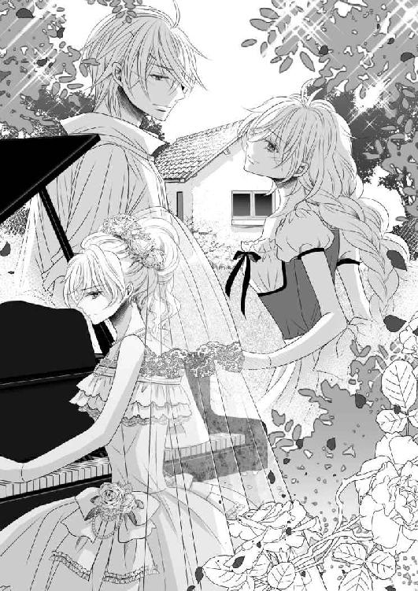
それはまるで、カンタン国の小さな村でセドリックと共にすごした一カ月のように、短くて寂しい余韻を残していた。
ラストへ向け、再びきらびやかな音の波が繰り返され──唐突な二音で終わった。
オデットが立ち上がるも、歓声どころか拍手も起きない。
堂内では、すさまじく心揺さぶる演奏に感服している人々の姿は垣間見られたが、誰もが一様に、驚きをあらわにしていた。
なにせ目の前には、全てを採択する教皇がいる。
これでは婚約儀礼式にも関わらず、婚約しない旨を宣言したのも同じであり、ナゼール国側には一生の恥でしかないだろう。サン・マロ国側とて、事態の重さに蒼白になっているはずだ。
それらを気にすることなく、オデットは淡々と礼をしてから、舞台袖に消えた。
オデットが戻ると、クロエが涙を流しながら迎えてくれる。
オデットはちょこっと舌を突き出し、申し訳なさそうに笑った。
「〝ごめんなさい〟とは、こういうことだったの」
きっとオデット付きの彼女には、これから多大なる迷惑をかけてしまうことになる。どういう教育をしているのかと、解雇される可能性だって否めない。
さて、なんと言い訳するべきかと、オデットが思案するのも束の間のこと、クロエががばりと抱き付いてきた。
「姫様......これで、これで、よろしゅうございました......！」
「クロエ──」
同じ男を恋しいと思っていた侍女は、己がこれから背負う責務とは裏腹に、愛において負けを認めるしかなかったのだろう。
これから待っている、あまたの批難や責任を全て受け入れる覚悟で演目を変えた主の信念、そしてたゆまぬ一途な愛に、ただただ脱帽していたに違いない。
そこまで投げ打ってでも、オデットはセドリックへの想いを貫いた。
オデットはそっと、クロエを抱きしめ返す。
心を開いてくれた、姉妹のように育った侍女が、いとおしくて仕方がない。
ひたすらに謝罪の言葉を繰り返すクロエの背をさすって慰めていると、ふいに控え室の扉が開かれ、乱暴な足音が耳朶を打った。
「オデット!!」
完全に頭にきているのだろう、神聖な聖堂内にも関わらず、パトリックが怒りをあらわに飛び込んできた。
「兄さんっ」
セドリックも続いてやってきたが、どうやらこちらは、兄を止めに追いかけてきたらしい。必死に説得を試みていたのか、はあはあと息をきらせ、額には汗をまとわせている。
反旗を翻す形となっていたクロエが、オデット以上にびくりと身をすくませた。
オデットはクロエを守るように背に回すと、毅然とパトリックに向き合う。
音で伝えただろうとばかりに何も言わないオデットを苛立たしげに睨め付け、パトリックは自らを懸命に落ち着かせながら、ゆっくりと、しかし厳しい口調で問うてきた。
「オデット。どういうことか、説明してもらおうか？」
ここへくるまでにあらゆる席で引き留められ、様々な質問攻めにあったらしいパトリックの髪は乱れ、せっかくの衣装にはしわが寄ってしまっていた。
セドリックが間に立とうとする中で、オデットは全てを言葉にする決断をしていた。
そうして口を開きかけた時、しかし別の声によって遮られてしまう。
「オデット姫、ベランジェ教皇がお呼びです」
使いの修道士が、いつの間にか顔をのぞかせていた。
控え室の扉が開け放たれ、男女四人が対峙しているという奇妙な図に首を傾げつつも、彼は平静を装って先を続ける。
「パトリック王子と、セドリック王子も、ご一緒にとのことです」
お付きの方は残っていてくださいと言い置き、修道士は三人を案内するよう丁寧に腰を折って待っていた。
突然のことに、反目していたオデットとパトリック、そしてセドリックの三人は、想定内の事態でありながらも、つい顔を見合わせてしまう。
互いの瞳に戸惑いの色が浮かんでいたことを気づかないわけがなかった。
謁見の間に通された三人は、案内役の修道士の手によって扉が閉ざされると同時に、教皇が座す前にそろって膝を付き、頭をたれた。
ベランジェ教皇は威厳ある声音で、顔を上げるよう指示をする。
三人は教会の最高峰に視線を向けたが、次に発せられた言葉がまったく見当違いな内容だったので、思わず呆気に取られてしまう。
「『エレジー』は確か、ラフマニノフが他国に亡命する前に、書かれたものであったな」
弾いた張本人であるオデットが、慌てて首肯した。頭の中に、セドリックに褒められたくて勉強していた音楽史が思い起こされる。
「彼の気持ちが、オデット姫の悲恋に重ねられた」
「っ！」
つぶやくような教皇の台詞に、オデットは自然、瞳を潤ませた。
ベランジェ教皇にも、曲に込めた想いが、間違いなく伝わっていたのだ。
前日、『愛の夢』を練習しようとしたオデットに対して、指先は動いてくれなかった。
代わりに伝えてきたのが、この『エレジー』であり、ピアノの方がオデットの気持ちを如実に証明していた。だからオデットは、『エレジー』を弾こうと決意した。
「............」
しかしオデットは、苦々しげに眉根を寄せているパトリックと、申し訳なさそうにうつむくセドリックの間で、なんと返したらいいかわからずに、ひたすら恐縮していた。
オデットが黙しているからか、教皇が話題の切り口を変えた。
「彼自身が、この曲の演奏法を説いたことは知っておるか？」
「ラフマニノフが──？」
初耳だった。オデットは目を瞬き、驚きからつい親しげな声を漏らしてしまう。
そんなオデットへ、教皇がうっすらと笑いかけ、目尻に深いしわを作った。
「感情に頼りすぎることへの注意だったそうな。詰まるところ彼は、自らが創り上げた楽譜を分析し、その形式を重んじ、構造を理解しろと言いたかったのであろう」
「それは......」
「作曲家の意図を正しく汲み取れ、ということよ」
わずかに眉をひそめたオデットに、泰然と告げる教皇。
「では......私の演奏法では──」
覚えず瞳を揺らしたオデットを安心させるように、教皇は静かに首を横に振った。
「音に込められた姫の心、確かにこのベランジェ、受け取ったぞ」
「教皇様......」
オデットが泣きそうにくしゃりと顔を歪めた。
「ひさしく聴いていなかった、心の調べだった」
パトリックが唖然として、大きく目を見開く。
「また久しく忘れていた恋を思い出させる、素晴らしき腕前だった」
セドリックだけはうつむいたままだったが、身体が小刻みに震えている。
「そしてわしは、音楽の神ミューズの声を聴いた」
歴代教皇は、この音楽大陸の創造主ミューズの声が聞こえると言われている。ミューズはいったい、教皇に何を伝えたのであろうか。
オデットが口を開きかけた時、しかしこれ以上は耐えられないとばかりに、隣のパトリックがさっそうと立ち上がった。
「教皇。演目は変わったが、これで儀式はしまいであろう？」
「パトリック......!?」
オデットは驚きを隠せない。
とても婚礼の儀式にはふさわしくない演奏会だったにも関わらず、彼は何事もなかったかのように済ませようとしているらしい。
ここまでセドリックを愛しているというのに、パトリックは全てを認め、オデットを受け入れたいというのであろうか。
一途な愛に脱帽こそしても、その気持ちに今後も傾くことはないだろうに。
しばらくの間が空いてから、ベランジェ教皇は傲然とたたずむ王子に声をかけた。
「パトリック王子よ」
「はっ」
パトリックが礼儀正しく胸の前に手を添える。儀礼の終わりが告げられるのを、今かと待っているように思えた。
しかし教皇の口から出たのは、彼がいちばん望まない言葉であった。
「残念ながら、オデット姫との婚約は認められぬ」
驚愕に目をみはったのはパトリックだけではない。名指されたオデット、その横にいるセドリックも同様であった。
普通ならば、演奏会のやり直しを求められるだけで、あとは国家間の協議に入るはずであった。男女のいざこざに、教皇はわざわざ口を出さない。
だからオデットとパトリックは、演奏会で教皇を侮辱したことに対して叱責される覚悟でこの場に臨んでいたし、パトリックの方は国家間で決着を付ける気でいた。
初めに声を出したのはしかし、当事者のふたりではなく、セドリックの方であった。
「教皇っ......全ては、僕の責任です！ オデットを連れ出したばかりに、皆に迷惑をかけて......僕が悪いのです。処罰は全て、この僕にっ......」
「セドリック!!」
途中、オデットが悲痛な声を上げたが、セドリックの言葉は止まらない。
パトリックはその通りだと言わんばかりに鼻白み、口を挟むことはなかった。
教皇は瞑目して、セドリックの話を聞いていた。
セドリックの独白は続き、ついにオデットが恐れていたところに差しかかる。
「僕を、僕を教会に入れてください！ そこで国の平和と繁栄、民の幸せを祈り続けたいのですっ......!!」
セドリックはまだ、濁したままだったあの時の決意を忘れてはいないのだ。
オデットが兄と共に歩むぐらいならば、邪念を捨てて聖道に入るのだと──セドリックの決意は固く、教皇に率直に伝えてしまう。
はあはあと肩で息をするセドリックを前に、やがて目を開いた教皇が、静かに問うてきた。
「司祭になるとでも申すか？」
「そうです！」
「それは受け入れられぬ」
明瞭な返事は、鋭い眼光を宿した教皇によって、あっさりとはばまれた。
「な、なぜですか......!?」
愕然とするセドリックに、教皇は諭すように尋ねた。
「セドリック王子、貴殿は......オデット姫の演奏を聴かなかったのかね？」
「いえ......確かに、聴いております」
意気消沈しながらも、セドリックは震える声で答えた。
教皇が微笑む。
「ではその愛が、どれほどまことか、伝わったのではないか？」
セドリックの面差しが、苦しみに喘ぐ。
「ナゼール国での演奏会の経緯は、わしの耳にも入っておる。なんでもそこでは、たゆまぬ一途な愛が歌われたとか......これは、セドリック王子に向けたもので間違いないな？」
最後はオデットへの問いかけだった。
オデットは、パトリックの視線を痛いぐらいに感じながらも、しっかりと首肯した。
「うむ。では、パトリック王子よ」
教皇は次にパトリックへと顔を向けた。
「は......」
いくぶんかトーンダウンしてしまったパトリックは、身体をわななかせていた。
「貴殿には、受け入れがたい現実かもしれぬ。なれど、オデット姫とセドリック王子を引き離してしまったら、貴殿が待ち望む運命も数奇なものになろうぞ」
「......俺は、それでも構いません」
パトリックの口調が普段のものへと戻り、それでも強くオデットを求めていることを主張した。
頑なな王子に対して、ベランジェ教皇は深い笑みにいっそうしわを刻んだ。
「若者の恋というものは、いつ見ても情熱に満ち溢れた灯火よ。互いの想いが混じり、いずれひとつの大きな炎となるのだろう。いつか貴殿にも、それがわかる時がくる」
「......っ」
言外に諦めろと告げられ、パトリックは心底、悔しそうに押し黙ってしまう。
「パトリック......本当に、本当にごめんなさい」
オデットがすっと立ち上がり、パトリックの腕に手を伸ばした。
パトリックにきちんと言葉でも想いを伝えなければならない、そう思っていたのだ。
「私は、セドリックを──」
ところが、オデットの指先が届くや否や、パトリックはぴりりと電流が走ったかのように跳び上がり、オデットから距離を取るようにさっと身体を引いた。
しかし次の瞬間にはもう、いつもの不遜な態度に戻っていた。
「知っている」
そしてすげなく告げられ、オデットは腕と同時に眉を下げた。
パトリックは教皇に一礼すると、そのまま立ち去るためにマントを翻す。
「だが、お前の口からは聞かない」
聞きたくないのではなく、聞かないのだと、断言したパトリック。
想いに応えられない苦しさは、愛の苦しさとはまた別の痛みを胸に伴った。
「............」
謁見の間から堂々と出て行くパトリックの背中に、オデットとセドリックは何も言えず、ただ見送るしかなかった。
「さて、残ったふたりだが──」
そんなふたりが呼ばれ、オデットとパトリックがはっとして振り返り、慌てて教皇に視線を戻した。
その対称的な動作がおかしかったのであろう、教皇はふっと笑ったが、すぐに表情を険しくした。
「この先にはしばらく、茨の道が待っておろう。大広間で拍手がなかったことが物語っているように、周囲はすぐに認めてはくれまい」
ふたりは苦渋に顔を染めながら、真摯にその言葉を受け止めていた。
「その間は──」
処罰を覚悟していた彼らに、ベランジェ教皇は満面の笑みを湛える。
「ピアノでも弾くがよい」
「っ!?」
唖然と教皇を見つめる、オデットとセドリック。
ベランジェ教皇は悠々と腕を広げ、空を自由に駆ける鳥の両翼を模してみせた。
「このミュジークは、音楽の大陸。各国の王家は、各々が持つ心の調べによって、民を癒すことができる存在だと、わしは思っておる。想いを乗せ、己の曲を弾き続けるがよい。いずれ皆、貴殿らを認める日が訪れよう」
オデットとセドリックは感動に打ち震えながら、共に深く腰を折った。
「......謹んで、拝受させて頂きます」
代表して述べられたオデットの言葉を、ベランジェ教皇は微笑んで受け取ったのであった。
終幕 永遠のレッスン
麗らかな日差しが射し込む部屋からは、今日も美しいピアノの音色が響く。
オデットとセドリックはいつものように並んで座り、そろって鍵盤を叩いていた。
「オデット、今のところはもう少し強弱を入れましょう」
「はい、先生」
そう素直に指摘された小節を直すオデットに、セドリックが苦笑を漏らす。
「もう僕は、君の先生ではありませんよ？」
「でも私にとって、セドリックはずっと先生だわ」
二歳という年の差がそうさせるのか、どんなに練習を重ねても、オデットがセドリックの技術に追い付くことはないようだった。
そのせいかオデットは、たまには幼少の頃のように、すねてしまうこともある。
けれど、一緒にピアノを弾く時間が増えてから、それだけセドリックも日々の練習を怠っていないことがわかり、オデットは開き直った。
そうして素直に彼を、再び〝先生〟と呼ぶようになったのだ。
そんなオデットをいとおしそうに見やり、セドリックは鍵盤に乗せられていたオデットの左手を取った。
オデットが思わず頬を赤く染める中で、その薬指にそっと口づける。
彼の唇は今、硬質的な感触がしているに違いない。そこには、ダイヤモンドの指輪が輝いているのだから。
しかしすぐにセドリックは手を離すと、意地悪を装ってオデットに問いただした。
「君はいつから、夫のことを先生と呼ぶようになったのです？」
オデットは、しばらくぱちぱちと目をまばたき、やがて思い至ったのか、ふふっとおかしそうに声を上げる。
「そうだったわね、旦那様」
「そうですよ、奥様」
満足した回答が得られたのか、セドリックが恭しく告げる。
「......っ」
芝居がかったやり取りがおかしくて、ふたりはぷっと吹き出し、くすくす笑う。
涙のにじんだ顔を見合わせていると、ふとオデットの中に、昔の記憶が呼び起こされた。
「ねえ、初めての新居を覚えている？」
「忘れるはずがありません」
セドリックは過去を辿るように、窓の外に目を向けた。
開いた窓からは、ゆるやかな風が吹き抜け、レースのカーテンがはためいている。
どこからともなく鳥の鳴き声が聞こえてきたので、わざわざここまで飛んできて、ピアノを聴いていたのだろうかと、オデットはそんなことを思った。
これこそが幸せの形だと、セドリックが感慨深げにつぶやく。
「もう、二年も前のことなのですね」
「ええ......あの家には、なにもなかったけれど、とても幸せだったわ」
オデットも同じ気持ちだった。
それを聞いて、セドリックはつい聞いてみたくなったらしい。
「今よりも？」
「いいえ」
しかし間髪入れずに、オデットは否定した。そのまま腕を上げ、セドリックの凛々しい横顔に手を這わせる。
「同じぐらい。あなたといられるだけで、私の幸せは変わらないもの」
途端、セドリックはふわりと微笑み、愛する妻についばむような口づけを落とした。
オデットが微笑み返すも、セドリックはなぜか眉を下げてしまう。
「でも、やはり君の身体が心配です。一緒に音楽巡業ができることは、うれしいのですが......」
ふたりは教皇の命を守り、この二年ずっと、各地で演奏会を開いている。
その間、パトリックはナゼール国の王位に就いた。
結婚こそまだしていないものの、なんとクロエを寵姫として城に入れた。傷を舐め合うようなふたりが、やがてその感情の色を変えていったことは、想像にかたくない。
いずれパトリックが正妃を迎える時、クロエがつらい想いをする時がきてしまうかもしれないが、忠義に厚いクロエのことだ、なんとか乗り越えてくれるだろう。
それから間もなくして、パトリック自らがセドリックにオデットとの結婚を勧めてきたのだ。
セドリックの求婚ののち、儀礼的な三回の演奏会を経て、ふたりはめでたく結ばれた。
オデットが弾いた曲目は、どれもスタンディングオベーションが起こるほど、セドリックへの愛に満ち溢れていたものであった。
兄弟の仲もよくなり、今ではナゼールに帰るたびに酒を酌み交わすほどになっていた。
とはいえ、根無し草のように各地を転々とする生活は体力のある男のセドリックはともかく、女のオデットにはつらいものが多かったはずだ。現に今も、新居のあるナゼール国の王城ではなく、カンタン国のホテルに滞在している。
「いいのよ。私、うれしいのだから」
「うれしい？」
予想外の答えに戸惑いをみせるセドリックに、オデットは申し訳なさそうに言葉を続けた。
「......あの時、私を養ってくれたぶん、今はちゃんとお返しができているかしら？」
セドリックの目が、まぶしげにすがめられた。そんなことを考えてくれていたのかと、覚えず胸が締め付けられていたのだ。
セドリックが衝動的に、オデットの華奢な身体を抱く。
「セドリック......？」
腕の中で、オデットが不思議そうに夫の名を呼ぶ。
その声をいつまでも聞いていたいと、セドリックはピアノに夢中になったことを思い出していた。
「君といられる幸せは、神に感謝してもしたりません」
今度はオデットの方が胸がいっぱいになり、セドリックの耳元に唇を寄せる。
「セドリック、キスして？」
秘密の演奏会をしていた頃のようにささやくと、情欲をそそられてしまったのか、セドリックはオデットに口づけ、甘い吐息をついた。
互いの呼気が混じり合うほど近くに顔を据え、どちらからともなく、こつんと額を合わせる。
次第に熱を帯び始めたオデットのヘーゼルの瞳に、左右色の違うセドリックの瞳が映り込む。そこに同じ熱を感じ、オデットは己の鼓動が速くなっていることに気づく。
奥手な王子は、もういない。
思いきって、オデットは言った。
「セドリック、私を抱いて？」
セドリックは困ったように眉を下げたが、それも一瞬のこと。
昼間のレッスンもそこそこに、ふたりはすぐにまた唇を重ね、セドリックがゆっくりとオデットの身体を押し倒していく。
オデットはピアノに背を預け、唐突に先ほどのセドリックを真似た。
「今のところは、もう少し強弱を入れましょうか？」
セドリックがくすりと笑う。
「はい、先生」
恭しく告げたセドリックはオデットを横抱きにすると、向かいに置かれたカウチへと運ぶ。
そのまま腰かけ、オデットを膝に乗せた。
彼女の顎に手を添え、額に、目元に、鼻に、頬に、順番にキスを落としていく。やがて顎のラインをなぞるよう舌で舐め上げた。
「ふっ......んぅ......」
ぞくりとした痺れを感じ、のけぞったオデットの首筋に、セドリックは吸い付く。
「はあっ......」
そうして跡が残るぐらい強く吸われると、今度は赤くなったその場所に優しく歯を立てられる。
セドリックの愛撫はどこまでも優くて甘い──とろけそうな頭の中で、オデットはそう思った。
潤んだ瞳を向ければ、セドリックのオッドアイに、情欲を伴って見つめられる。
「セドリック......好き──」
胸が苦しくなり、感情を解放させるように、オデットが愛をささやく。
するとセドリックは情熱的なキスで応えてくれた。
「んぅ......はっ......ああ......」
深い口づけにたまらず声が漏れ、オデットはすがるようにセドリックの首に腕を回した。
肉厚の舌を差し入れられ、口腔が探られる。
舌のぬめる感触が気持ちよくて、オデットもむさぼるように自身の舌を絡めていた。
そうする間にセドリックの手はオデットの背中に回り、ドレスのホックを外していた。絹のような素肌があらわになり、こぼれ落ちる豊満な乳房。つんと先端を立ち上がらせたその姿は、まるでセドリックを誘っているようで。
セドリックは迷わず赤く熟れたそれを口に含み、舌先で転がした。
「ひあっ......はあ──」
オデットが背中を弓なりにそると、さらに乳房が突き出す格好になる。それを機にセドリックはもう片方の胸を掴むと、円を描くように揉み込んでいく。
「んぁ......あっ......ああ......」
「オデット......なんて、甘いのでしょう」
「んふっ......そ、んなこと......なっ......ああ！」
オデットが否定したからか、乳頭が激しくしごかれる。
オデットの身体は、既に内側から絶えず湧き起こる熱源によって疼いて仕方なかった。
なんとも言えない感覚に、もじもじと太ももをすり合わせているとセドリックが微笑む。
「君の甘さがここだけではないことは、僕だけが知っているのですね」
セドリックは感慨深そうにつぶやくとオデットを膝から下ろして立ち上がり、陶然と椅子に座り込む彼女に背中を向けさせる。
「な、何......？ きゃっ」
戸惑い気味にちらちらと振り返るオデットは、尻を優しく押されつんのめりそうになるのを、膝を折って耐えようとする。体勢を整えようとしたのもつかの間、オデットを後ろからやんわりと留めるセドリックは、彼女の手を肘かけに、膝は座面へと立てるように置いた。
意図せず腰を後ろに突き出す格好となり、オデットは恥ずかしさに顔を染める。
「セドリック、この体位はっ......ああん！」
下着越しに熱い吐息をかけられ、身体がびくんと反応した。
そっと背後をうかがえば、セドリックがオデットのドレスをたくし上げ、秘部に舌を這わせている。
「うんっ......や......んぅ......くっ......」
自然、押し殺した喘ぎになったのは、下着越しであるというもどかしさからだ。
セドリックに直接触れて欲しくて、オデットはねだるような視線を向けた。
するとセドリックが笑い、望み通り、両手で下着が脱がされていく。
あらわになった蜜口は既に潤っていたが、セドリックの愛撫が止まる気配はない。
舌先でつうっとひだをなぞられ、肉芽に届くや否や、オデットはもだえた。
「あうっ......んんっ......ふあ......あっ」
執拗に舐められ、こねまわされる感覚に、ぞくりと身体を突き抜けるような痺れが走る。
とぷりと蜜が止めどなく流れ、太ももを伝っていく感触がした。
セドリックは指先を、とろとろの蜜孔に差し入れた。
つぷりという水音が、やがてちゃぷちゃぷと変わる頃、オデットの腰と足はがくがくと震えていた。
最奥を何度もすられるたびに、自然にぎゅっと閉じられていたまぶたの裏では、火花が散る。
今にも達してしまいそうな快感に身体を震わせながらも、必死でこらえる。
「セドリック......は、早く......おねがっ......」
しとどに濡れそぼった秘所が疼いてたまらず、オデットは懇願する。
オデットは、ひとりで絶頂にいくことを好まない。
一度離れ離れになったせいか、なんでもセドリックと一緒がよいのだ。
セドリックはそれを知っていたから、まだやりたりないという指を仕方なく抜いた。
途端に、蓋をされていた逆さの壺のように、蜜がどっと溢れてくる。
セドリックはバックルに手をかけ、既に膨張しきっていた己を引き出した。
その一連の動作に、オデットの肩が期待に震えているのを、セドリックは見逃さなかった。
オデットの腰を引き寄せ、とろとろにとけきった秘部を、己の先端でなで上げる。
びくんと背中を跳ね上げたオデットは、自ら膝をずらして足を大きく広げてみせた。
「あっ......ふぅ......んんっ......」
しかしセドリックは蜜孔に入れようとはせず、愛液にまみれた熱棒を、ゆるゆると腰を動かして擦っているだけだ。
セドリックのモノは硬く、じゅうぶんに隆起しているというのに、しかしいつまで経ってもあの充足的な圧迫感に襲われることはない。
「ねえっ......いじわる、しないでえっ......」
オデットは中途半端な快感に耐えられず、再び後ろを振り返った。
するとセドリックの手が伸びてきて、オデットの顎を優しくつかむ。
覆い被さる体勢で、セドリックはオデットの耳殻を甘噛みし、頬から滑り落ちてきた唇が口づけを要求した。
「ふぁっ......ああ......んっ......」
セドリックの口づけに必死に舌を突き出して応えながらも、秘部では割れ目の間を、セドリックの先端が行ったり来たりを繰り返している。
先端の引っかかりが敏感な肉芽を押し潰すたびに、たとえようもない痺れがぞくぞくと背筋を這い上がった。
喘ぐ唇からはたえず唾液がこぼれ、扇情的に首筋を伝っていく。
セドリックは反対の手でオデットの胸を揉んだ。硬く尖った乳頭を摘んだり、こね回したりと、ひたすらに優しい愛撫を繰り返す。
「あああっ......いやっ......な、んで──っ」
狂おしいぐらいの快感の渦に呑まれながら、セドリックの熱をじかに感じられないもどかしさに、オデットは次第に涙すら浮かべてしまう。
「僕は君に奉仕するのが、たまらなく好きなのです」
セドリックが微笑み、その唇でオデットの目元の水滴を舐め取った。
「んんっ......だ、だからってえっ......！」
これでは生殺しといっても過言ではない。
「君が感じてくれるだけで、僕は満たされるのですから」
「むうっ......」
オデットは涼しい顔をしている夫が許せず、足の間に腕を伸ばした。
「オデット？」
不思議そうに妻の名を呼んだセドリックは、次の瞬間には声を引きつらせた。
「くっ......」
オデットが後ろ手で、セドリックの剛直を握ったのだ。
慣れていないセドリックは、思わずうめいてしまう。
オデットはなんだかうれしくなって、後ろ手のまま、セドリックのモノをお返しとばかりにいじり始めた。先端に指を押し当て、竿の部分をすり、手の平で包み込んでしごいていく。
「オデット......そ、それはっ......」
オデットの手の中で、セドリックがさらに硬さを増し、どくどくと脈打って反り返っていく様が、じかに感じられた。
すっかりオデットへの愛撫の手が止まっていたセドリックだったが、ついに白旗を上げる。
「そこまでです、オデット」
「なぜ？ だって、こんなに──」
「だからです。このままでは君と愛し合う前に、達してしまうでしょう」
オデットは、はっとして腕を引いた。そして大人しく、カウチの肘かけに手を戻す。
そんな従順なオデットがあまりにいとおしくて、セドリックはぱんぱんに膨張してしまった己をすぐに蜜孔へとあてがった。
オデットはこの先の予感に、ぶるりと身体を震わせた。
そしてついに、セドリックが腰を押し進め始める。
「あああ......っ」
熱杭を打ち込まれるような感覚に、オデットがひときわ大きな嬌声を上げる。
ずくりと媚肉を割られていくと、ぞくぞくした甘い痺れが脳天まで駆け上がっていく。
「んああっ......セド、リックっ......いい、わっ」
あまりの気持ちよさに、オデットは我を忘れて腰を振っていた。
セドリックが腰を引くたびに、蜜口からは白く泡立った蜜が掻き出されていく。
「ひあっ......はあっ......ううんっ......ああっ......」
最奥を穿たれ、えぐられ、オデットの喘ぎは止まらない。
室内には淫猥な水音と、ぱんぱんと腰を打ち付ける音が響いている。
強く抽挿されているからか、だんだん体勢が苦しくなり、オデットはやがて前のめりになった。するとそれが、ねだるように腰を突き上げる格好となってしまう。
セドリックはいとおしそうにオデットの白い臀部に触れ、撫で回す。そのうち小さな蕾を見つけると、オデットの反応を見つつ指先でほぐすようにいじった。
「や、やぁっ......そんな、とこ......恥ずかしい、わっ」
息も絶え絶えにオデットは抗議するものの、やっていることと言っていることがまったく伴っていない。オデットは誘うように自ら腰を揺らし続け、セドリックを中へと深くくわえ込んでいたのだから。
「好き......好きよっ......セドリック！ あ、愛してる、わ......っ」
オデットは絶頂の予感に身を震わせ、声を上げた。
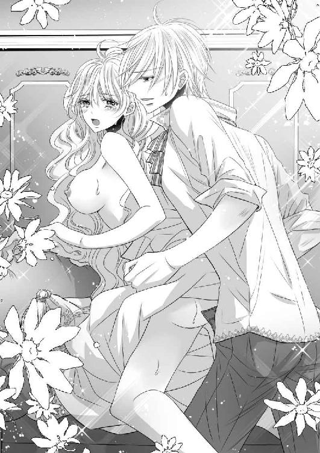
「僕も、好き、です......オデットっ......愛して、います......！」
セドリックもそれに続き、今にも破裂しそうな剛直を最奥に突き上げると、一気に熱源を放った。
蜜口からは、オデットの愛液と共にセドリックの白濁が混じり合い、溶け合っていく。
オデットとセドリックは、これ以上にない幸福に包まれて、今日もふたりだけの曲を奏でていた。
曲目は──『初恋ピアノ協奏曲』。
終
あとがき
トパーズノベルスさんでは二度目になります、御子柴くれはと申します。
拙作『初恋ピアノ協奏曲～奥手な王子と秘蜜のレッスン～』をお読みいただきありがとうございます。
いつも迅速丁寧にご対応くださいました担当のＦ様、美麗な表紙と挿絵を描いてくださいましたイラストレーターの龍胡伯様、本作品を世に出すにあたりご尽力くださいました全ての皆様、そして読者様に感謝しております。
今後とも何卒、宜しくお願い申し上げます。
二〇一六年八月吉日
御子柴くれは
トパーズノベルス
同時配信二〇一六年九月三〇日配信予定
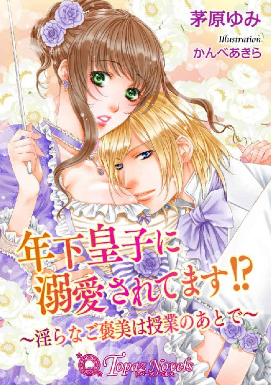
年下皇子に溺愛されてます!?～淫らなご褒美は授業のあとで～
【書下ろし・イラスト十枚入り】
著作：茅原ゆみ
イラスト：かんべあきら
「良い子です、せんせ......。もう少しこのまま、我慢していてくださいね」
下級貴族の娘・エミーリアは隣国ブルグハルト皇国皇子・アレクシスに家庭教師として授業を行うが、そのたびに『ご褒美』を求める皇子に身体を弄ばれる。キスから始まった『ご褒美』は次第にエスカレートし、ついには......!?
トパーズノベルス
初恋ピアノ協奏曲～奥手な王子と秘蜜のレッスン～
電子第一版発行 二〇一六年九月三〇日
著 者 御子柴くれは
イラスト 龍 胡伯
編 集 オフィスふたつぎ
発行所 会社名 アイデジタルパブリッシング
所在地 東京都渋谷区渋谷一‐八‐七
© Kureha Mikoshiba / Kohaku Ryu / Ai digital publishing 2016
本書の一部、あるいは全部を無断で複製複写（コピー、スキャン、デジタル化等）、転載、上演、放送することは法律で特に規定されている場合を除き、著作権者、出版社の権利の侵害となるため禁止します。
本書を代行業者等の第三者に依頼してスキャンやデジタル化することは、たとえ個人や家庭内で利用する場合であっても一切認められておりません。